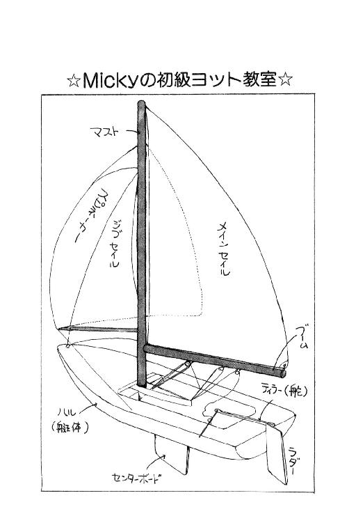

| 丘の家のミッキー５ | |
| 久美 沙織 | |
| (2015) | |
丘の家のミッキー５
永遠の麗美さまの巻
久美沙織
本作品の全部または一部を無断で複製、転載、配信、送信したり、ホームページ上に転載することを禁止します。また、本作品の内容を無断で改変、改ざん等を行うことも禁止します。
本作品購入時にご承諾いただいた規約により、有償・無償にかかわらず本作品を第三者に譲渡することはできません。
本作品を示すサムネイルなどのイメージ画像は、再ダウンロード時に予告なく変更される場合があります。
本作品は縦書きでレイアウトされています。
また、ご覧になるリーディングシステムにより、表示の差が認められることがあります。

イラスト／めるへんめーかー
第一章 十月十日
......あ。時間の妖精が来た。
そんな風に思ったことってない？
突然、何の前触れもなく、今ようやく目が覚めたみたいに感じること。さっきまでと今が、きちんとつながった時間のように思えないこと。ああ『今』、今あたしはここにいるけど、これはほんとにほんとのことかしら？ なんて、妙にいっしょうけんめい記憶をたどってしまったりすること。
あたしは何度もある。
何度もあったから、それを『時間の妖精と遊んできた』って呼ぶことにしてるんだ。
それは何も特別な瞬間にあることじゃなくて、おとうさまとおかあさまとお夕食のあとのお茶をのんびり飲んでいる時だったり、教室に座って午後最後の授業を聞いている時とかに起こることなの。
まるで、あたし自身もまわりのひとたちもみんな気づかないうちに、どこか想像もつかない世界に飛んで行ってて、不意に戻されたみたい。だからといって時間も隔たってないし、ふだんと違ってることなんて何もなくて、でもなにかがやけに『かりそめ』だって気がしてしまう不思議な違和感だけは、確かに、からだのどこかに残っているみたいな。
今も、そうだったの。
あわてて目をぱちぱちさせてみたけど、やっぱり、一秒前と比べても、どこにも変なとこはない。
電車は揺れてて、ごとんごとん鳴っているし、窓の外には街と山が広がり、頭の上の広告も『くもんの数学』のまんま。向かいの席に、朱海さんもちゃんといる。
椅子の間隔狭すぎるみたいに、ジャケットとおそろいのグレイのズボンをはいた脚をぎゅっと組んで、ピンクのトレーナーの腕を窓枠に預けて、頰づえついて。......あ、何か言った。
「未来ちゃん、疲れちゃった？」
「え、つ、疲れません！ 座ってますし」
あわてて答えると、朱海さんはさっぱりと短めになってしまった髪を軽く振るようにして笑うのよ。
「ずっと背中伸ばしてるから。大変だね、着物は」
「よっかかってますよ、ちゃんと......ズルして」
帯のためには、あんまりどてーっともたれてたりしちゃいけないんだけど。今日はママの道行借りて着てるし、お太鼓の端からちょこっと手を出しただけのあまりお派手じゃない結び方してもらって来たから、多少背中に体重かけても崩れないはずだと思って。
「ほんとに？ ひょっとして緊張してない？」
「き、緊張!?」
「思い過ごしかなー？」
うっ。朱海さんってば。
ひどい。
前後不明なほどの陽灼けはさすがに褪めたけど、歯の白さがやっぱりめだつお顔を、あたしはちょっぴりうらみがましい目で見てしまった。
せっかくあたしが、いっしょうけんめい考えないようにしてるのに！
退屈な車中ごいっしょしていただけるのは嬉しいけど、学園祭をご案内するのは少々おヤバいような気もする、ってことを。
だって。これから行こうとしてるのは、よそじゃない。華雅なのよ。
しかも、こともあろうに文化祭の最終日なのよ！
中三の身空で、しかも、これから華雅高校を受験しようという大事な時期に、神聖な学園におっ......男のかたを連れてくなんて......大丈夫かしら？
もちろん、後ろめたいことなんて何もないわ。朱海さんは香織さまのご縁でいらっしゃるのであって、伝統（ご父兄、ご親戚、恩師、またはすでにご婚約の契りを結ばれたかた以外の男性をお呼びすること）に逆らってあたしがご招待申し上げたわけではないし、はるばる葉山からたまたま同じ時に行こうということになった以上、学園をよく知っているあたしがご案内するのは当然の親切でこそあれ、差し出た行いではないと思うわ。
ただ......。
気になるのは、まず校長さまと、それからソロリティーのみなさん、特にあのおバカの池貝の、悪意と偏見に満ちたまなざしなのだわ。
でも。
あんまりいじいじ悩みたくない。
トコも、麗美さんも加奈子さまも、もう何度か朱海さんに逢ったことがあるし、このかたとあたしがけっして不純な交遊を行っているわけではないこともよくご存じよ。変に意識して恥ずかしがったりすると、かえって、まるで、ひとに見られてはならないことをしてるみたいになっちゃうじゃないの。
そうよ。あたし、緊張なんて、緊張なんて......。
イエスさま、マリアさま、どうかあのお人形、朱海さんの手には渡りませんように......願わくば、すでにバザー会場にありませんように......。
「おいおい。にらまないでおくれ。ぼくだって緊張してるんだから」
「は？」
「だってそうでしょ。晴着姿のお嬢さまをエスコートさせていただいてるんだから、緊張もするよ。うーん、もう少しいいかっこしてくれば良かったかなー。なにしろあわてて追っかけたからね」
噓ばっかりっ！
「どこが緊張ですか。さっきからにっこにこしてらっしゃるじゃないですか」
「あ、わかっちゃった？」
腕をずらしたら、袖から見えたの。ミント・グリーンのリスト・ホルダー。
「そうなんだ。ほんとうにすごーく緊張してるんだけどね、それ以上に嬉しくってさ。なんか信じられないなー。未来ちゃんとこうしてふたりっきりなんて」
ひと聞きの悪いこと言わないでほしい。
ふたりっきりなんかじゃないもん！ この車両にだけだって、二の、四の......二十人ぐらいはひと乗ってますからね！
「だいたい、うちの姉弟で華雅に行ったことないのって、ぼくだけだったんだ。実はひそかにくやしく思ってたんだったりして」
「あれ？ ご姉弟みんな、って......うららもですか？」
「ああ。あいつははるか昔だけどさ。幼稚園受けに行ったじゃない」
......え？
「うららが、華雅幼稚園を、受けた!?」
朱海さんは、『しまった！』っていうみたいに口を押さえた。
「でも、でも、葉山から通園なんて許可されないでしょ」
「......いや、そのー、だから、ぼくが小学三年の時までうちは尾山台だったし」
そうだった。
じゃ、えっと、朱海さんが今高二なんだから......おひっこしの時うららは......一年生だ。
充分受験できる！
でも、いなかったわよ、あんな子は！
「四ツ谷の、いえ、一番町の華雅ですか？ 田園調布のほうが近いのでは？
「そう。でも、四ツ谷のほうが優秀なんでしょ？」
そうよ。
そうだけど......。
受験したけどいなかった、ってことは。
「あのう......ひょっとして、落ちちゃったんですか？」
まさか......まさかそれで、あの子あんなに華雅のこと嫌いだ、なんていうんじゃないでしょうね？ まさか。うらら、そんな情けないひとじゃないはずでしょ？
「いや......困ったなあ。知ってると思ったんだよね。言わないほうがいいって思ってたのかなぁ、あいつは」
「？」
「気を悪くしないでよ。受かったけど、蹴ったの」
「蹴った!? なぜ？」
華雅の校風が気に食わなかったとか？
「それがねぇ。積み木遊びする試験の時に、誰か泣かしちゃったんだって。それであいつ集団生活にすっかり自信なくしちゃってさ、結局どこの幼稚園にも行けなくてねー。俺とともだちのあとくっついてきて野球だの崖登りだのプロレスだのばっかしてたから、その頃からすでにあんなになっちまってたけどね。口のわりに気が小さくて、小学校の二、三年までしょっちゅう不登校だったんだ」
「積み木遊び......？」
......思い出した！
そうよ。そういう試験があったわ。確か全部で四種類の試験があったのよ。
先生が『え』って札をあげたら『えんぴつ！』とか『えき！』とか『えいが！』とか、『え』から始まることばを言うのとか、クッキーの絵が四つ、りんごが三つ、どちらの数が多いでしょう、とか......最後が大きなお部屋でおおぜいいっしょに積み木遊びをしましょう、っていうのだった！
懐かしーい!!
華雅幼稚園の積み木って、ひとつひとつが両手で抱えなきゃならないくらい大きくて、お家作ればちゃんと中入って遊べるし、滑り台はほんとにすべれるし、トコたちとお城みたいに砦を組んで、『ここがあたしたちの陣地よ！』なんて。
それにしても。
「泣かしちゃった、って......けんかでもしたんですか？」
「そうじゃないよ。妹の名誉のために言うけどね、あいつは悪くなかったと思うよ。でも、なにせ、あれは不器用だからねぇ」
「？ わざとじゃなかったけど、誰かの上に積み（註１）木崩しちゃったとか？」
「いや」
あんまり言いたくなさそうに目をそらしてたけど、朱海さん、ようやくため息つきながら、あたしに向き直った。
「ほら、さぁ、みんなで遊びましょうね、って言われても、いつまでたっても動きだせない子っているじゃない？ あいつはおせっかいにも、そういう子のとこににじり寄ってったんだって。積み木持って。うららとしては、それを、その子に持たせて、いっしょに遊ぼうね、って誘ってるつもりだっただろうけど、なんでもやたら大きな積み木なんだって？ いきなりでかいの抱えてずんずん近づいてくるのがいたもんで、相手はぶたれるとでも思ったんじゃないかな、青ざめて逃げるじゃない。すると、うららは、また、ぶっきらぼうに、巨大積み木をぐいぐい押しつける。どっちも無言で、どんどん必死の形相になっちゃったけど、何しろ試験なんだからね、まわりの大人も手出しするわけにいかないじゃない。壁ぎわまで追い詰められた子がとうとう泣きだしたところで、先生が飛んできたんだって。まあ、母親から聞いた話だから多少は脚色があるかもしれないけど......あれ？」
......知ってる......あたしそれ、知ってる！
だって、だって、泣かされた子って、泣かされた子って......。
「未来ちゃん？」
「朱海さんっ！」
思い切って顔を上げてみたら、朱海さんはとっても変な顔をしてた。
「その話には、隠れた真相があります」
「ま......まさか」
「泣いた子は、入園試験にそなえて家庭教師をつけてたんです。華雅ではめずらしいことじゃないですけれど......例年同じような問題が出るので、前もって何度も練習しておいたんです。でも、積み木遊びが始まったのは、その年からだったんですよね。前の年までは、それぞれ自由にお絵描きする試験だったんです。でも学力とか運動能力とかばかり重視しないで、協調性とか想像力とかも見よう、ってことになって、はじめて、積み木試験ができたんです。泣いた子は、実は、習ってなかったことをしなきゃならなくなって、どうしたらいいかわからなくて途方にくれてて......そこにうららが突進して来たから、パニック起こしたんです」
「......なるほど」
「その子、入りました。協調性のなさから言えば落ちてもしかたなかったのに、特訓の成果で学力点が高かったんでしょうね。だから、うららも気に病んだりしないで入園してくれれば良かったのに!!」
朱海さんは眉をひそめたまま、口元だけどうにか微笑まれた。
「やけにくわしいね。と、言うことは......その子って、もしかすると、未来ちゃん？」
「!? 違いますっ!!」
冗談じゃないわ!!
「それ、池貝です！」
「え？」
「池貝有希子......さん、と言いまして、こう申してはなんですが、実は、あたしなんとしても好きになれない子なんです。もう、ほんとにあの性格は許しがたくて......あんまり嫌いだからかえって、いろいろ噂とか聞いてしまってて。きゃあ！ でも、でも、うららがあの子のことそんな昔にとっちめてくれてたなんて！ あ、いえ、もちろん、うららはそんなつもりじゃなかったんでしょうけど......凄いわー。運命の神秘ねぇ」
でも。......そうか。
とすると、池貝さえいなければ、うららとあたしはもっともっと早くめぐりあって、おさななじみになってることだってできたんだわ。なのに！
池貝めっ!!
あいつがおバカにも試験の最中に泣き出して、あたりの心ある園児候補のひんしゅくを買ったって話をはじめて聞いた時には、思わず大笑いをしてしまったけれど、その陰で、うららが犠牲になっていたなんて......不登校にまでなっちゃってたなんて......知らなかったわ。
きっと池貝だって知らないわ。あの子はいつだって、自分のおかげで心やさしいひとたちがどんなに迷惑こうむってるかなんて気にもとめやしないんだからっ!!
うーん。
燃えてきた。
怒りが力になってくのを感じるわ。
そうよ。世の中ってそういうものよ。とっても理不尽なのよ。ひとを傷つけたことにショック受けて、はえある合格すらふいにしてしまう純情な子がいるかと思えば、何も考えずにのーのーと正当な華雅エンヌの顔してる犯罪的鈍感娘（註２）もいる。ひとを思いやる気持ちが濃やかなひとや、行いが正しいひとが得をするとは限らないわ。
でも！
いつの日にかこうして、正義は顕れるのよ！
「朱海さん、言いにくいお話をさせてしまって申し訳ありませんでした。でも、おかげさまで、あたし勇気がわいてきました!!」
「なんでまた？」
「どんな時でも、神さまがご覧になっている。そのお言葉が今証明された気がします！」
「............」
ああ、うらら。あんたって、小さな時からなんて素敵な子だったんでしょう。あたし、ますますあんたが好きになっちゃったわ。
そうよ。あたしも。
目先の利害に囚われてはいけないのだわ。
一生を左右する入園試験だに、棒に振ってしまったうらら。小手先の技でちゃっかり受かってしまった池貝。
どっちのようになりたいか、はっきりしてるわ!!
紀尾井の坂を下り公園横の小道に踏みいるころからあたりが賑やかになりだした。
さやさやと交わされるおしゃべりや、催しものに誘う声。遠くブラス・バンドの演奏も聞こえる。制服の上にエプロンつけた少女たちが、私服姿のお客さまがたに会釈しながら通り過ぎる。蔦のからまる格子垣のところどころにピンクのティシュの花が咲き、高くそびえる十字架の御聖堂のステンドグラスも、今日はひときわきらきらと日差しに輝いて見える。
入るひと出るひとの波が渦巻きだして、だんだんまっすぐ歩きにくくなってきた。
ああ、正門よっ!!
来たんだわ。あたしはまた、華雅に来たんだわ！
「おそれいりますが、招待状をお見せくださいませ」
門の中、すぐのところに、まっ白い布を敷いたテーブルが置かれ、大柄な上級生がおふたり、生真面目な表情で座ってらっしゃる。
ああ。存じあげていますわ。バレー部のエースでらっしゃる牧野さん、それに生徒会副会長の手塚さん。
毎年、神聖なる学園の門は、五年生つまり高二のかたがたの中から特に選ばれた十二人に交代で守られることになっているの。退屈で、それでいて、イザという時にはたいへん責任の重いポストゆえ、意志がお強く、健康で、みなの信頼の厚いかた......いわば、その年の華雅学園五年生の精鋭であるかたがたがなさるのよ。当然、ほとんどの場合、下級生によく知られたかたが占めることになる。
どのくらい大変なお仕事かというと、かたわきに置いてある呼子とトランシーバー（註３）が、実は万一不審な輩の侵入を阻止しきれなかった場合、待機している交代要員や一般生徒に応援を要請するものである、というくらいなの。
なんでもずいぶん前に、一部生徒にはたいへん人気があったけれどもあまり校長さまの覚えがめでたくなかったあるかたが、この栄誉ある仕事に任じられなかったことを悔しくお思いになり、がらのよくないご友人（男性含む）数名を伴われて突破を図られ、騒乱となったことがあったらしい。この事件は『十三番めの悲劇』または『ユダの裏切り事件』として、平和な華雅の歴史的椿事として語りつがれ、以来、御門を守るこのかたがたは、イエスさまの初めの十二人の使徒にも、十字軍にもなぞらえられることになったのだわ。
ああ。良かった。
トコに、招待状もらっておいて。
お話しなどしたことのあるおねえさまだったら、あたしがあたしであることをわかっていただけ、通してくださるとは思ったんだけど、一応、かたちですものね。牧野さんも手塚さんもあたしの顔を見ても何にもお気づきにならなかったみたいなのは少し寂しいけれども、用意してきて、ほんとうに良かったと思う。
おつとめ、ご苦労さまです。
一礼して封筒を差し出すと、牧野さんの眉が少しあがった。
「浅葉さん......？」
「はい」
お返事すると。
「ごめーん。制服じゃなかったから、わからなかった」
ぱっ、と華やかに微笑まれたのよ。
「着物、似合うわ。よく来てくれたわね。ね、手塚、浅葉さんよ」
「まぁほんとに！ 災難は聞いてるわ」
朱海さんの封筒をチェックしていた手塚さんも、素早くあたしのほうに握手の手まで差し出してくださった。
「大変だったわね。でも、あと半年の辛抱よ。待ってるわ！ あなたには目をつけてたのよ。ソロリティーのほうの仕事、なくなるんでしょ。是非、生徒会に来るのよ。あたしが推薦人になるわ。絶対よ!!」
なんともったいないおことば！
「ありがとうございます」
「ゆっくり話したいけど、お客さまだから。あたし、三時までなの。良かったら、後で生徒会本部に来て。待ってる。ね！」
手塚さんはテーブルごしに握られた手に、ぎゅぎゅうっ、と力を込められた。
あたし、ぼーっとしてしまった。
十二使徒のかたまでが、あたしの境遇についてお聞きおよびなのだわ。そして、その上、それを哀れにおぼしめして、御じきじきに、生徒会！ 生徒会なんてみやびな世界にまでお誘いくださったなんて......！
ああ。
未来は幸せものです。
みなに慕われるほどのかたゆえのおやさしさ、判官びいきに違いないとは知りながら、ありがたく、かたじけのうございます......。
熱いまぶたをごまかしながら深くお辞儀をして、あたしは、その場を辞したの。
ああ。校庭。みんなはしゃいでる。空気全体がうきうきしてる。華雅の匂い。
お祭りなのね！
一度はぐれてしまったあたしのことも、こうしてしっかり受け止めてくれるのね。忘れないでいてくれるのね......くすん......。
「すっごいなぁ」
声が聞こえて、ハッ、とした。
朱海さんは、四、五歩ばかり前を歩きながら、あたりを見回してらした。
いけない。一瞬、いっしょに来てたこと忘れてた。
ぱたぱた草履を鳴らして、あわてて追いついたの。
「荘厳だねぇ。ポスターとかあまりないし。道にもビラ一枚落ちてないし、わめき散らしてるやつも走り回ってるやつもいない。金魚すくいも風船つりもないんだー」
......けなしてるんじゃないとは思うけど。
そんな、ない、ない、って言われるとカチンと来ちゃうな。
「金魚すくいなんてあるんですか？ 普通は」
「普通かどうか知らないけど、ぼくらはやったよ。テキヤの親分さんのとこ、機材借りに行ってさ。でかい寺の御曹子につれてってもらったから、全部原価でね。もうかったなぁ」
御成学院はお寺の境内にあるからなぁ。そこまでやっちゃわなきゃお祭り気分しないのかもしれないけれど。
宗教上の違いね、きっと。
「しかし......噂には聞いてたけど驚いた。華雅の女の子たちって、ほんとに根っからおしとやかなんだねぇ」
「そうですか？」
あたしには、校舎もみんなも、とびきり興奮してるように見えるけど。
「それに、未来ちゃんって人気ものなんだね。さっそくお誘い受けてたじゃない？」
「いえ、久しぶりだからなだけで......」
「でも、それだけ長いこと忘れられなかった、ってことでしょ」
くすぐったくなって、あたしはあわてて、話題を変えた。
「あっ、あの、あれが中等部の校舎です。あたしがこの春まで学んでいた」
「うん」
「あちらが講堂、今日は演劇部や英語部が発表しておりますはずです。校舎でもいろいろと展示や研究発表をとり行っているはずですが......とりあえず、どういたしましょう？ まっすぐバザーにまいりましょうか？」
「そうだね」
言いながら、なんだか朱海さんが笑うのこらえてるみたいな顔してる気がしたの。
「何か？」
「だって、......ふふふ、未来ちゃんいつもとしゃべりかた違うんだもん。顔つきもなんか違うよ。華雅エンヌしてる」
「......ぶー」
いじわる。わざわざ指摘しなくたっていいのにっ！
どうせ......どうせあたしはすぐその気になりますっ!! その場の雰囲気にひたりきっちゃいますっ!!
「あれ？ 待って......」
だって、どんな顔してたらいいかわかんないじゃないですか！ もう！
振り向かずに、会館のほうに二、三歩歩きだした時。
目の端に見えたのよ。こっちを見て、ひそひそ、なにか耳打ちしてる子たち。思わず足を止めると、お魚が逃げるみたいにふいっ、とひとごみに紛れてしまったけれど、あれはたぶん下級生。あたしのこと、わかっちゃったの!?
......バレたのね。見られたのね。
顔から腕から、血がひく感じがしたわ。
やっぱりそうよね。封筒はあっても、入ってしまえばわからない。いっしょに歩いてる＝いっしょに来た＝噂になるような仲、って思われてしまうだろうとは思ってたわ。
ああ。たちまちのうちに学園中に、浅葉未来が男連れで来てる、なんて噂が走ってしまうんじゃないかしら。
覚悟決めたつもりだったけど、何にも悪いことなんてしてないけど、でもやっぱり胸がちくちくする。
学校中に言い訳して歩くわけにはいかないもの。せっかくあんな温かいお言葉をかけてくださった手塚さんに顔むけできない。神さまは知ってる、わかってくれるひとはいつかきっとわかってくれるとは言いながら......一生わかってくれないひともいるんだろうなぁ。
なかなか戻ってこない目の焦点を必死であわせてると、地面に落ちたあたしの影に、のっぽの影が並んだ。
「ごめん。バカにしたつもりじゃなかったんだけど。気にした？」
心配そうなお声。
「いえっ！」
あたしは、しゃん、と胸を張ったの。
いいわ。
いいわよ。噂するならしなさい。あたし、気にしないことにしたんだから。うつむいたり、こそこそひと目をさけたり、そんな、まるで、悪いことしてるみたいな態度なんて取ったらうららに笑われるわ！
「平気です。さぁ、バザーにまいりましょう!!」
「うん。まいりますけど......」
あたしの事情などご存じない朱海さんは、ちょっぴり首をひねってた。
胸を張って気合い入れて歩くのには、着物ってとってもお便利だと思う。だんだん増えてぶしつけになってくる視線を眉毛の動きだけでかわしながら、ぱきぱき歩いて、会館下にたどりついた。
ああ。わが誇り、わが故郷。
じいん、と高鳴ってくる胸を押さえて、あたしは、ほとんどわざとと言っていいくらいきっぱりと、連れの朱海さんを振り向いた。
「こちらの白亜の殿堂が、華雅会館です。創立七十周年記念に建てられ、クラブ活動や卒業生のかたがたのお集まりなどにも使われております。ソロリティー本部は七階芙蓉の間ですが、本日のバザーは二階大会議室にて行われているはずです」
「ははぁ」
上目づかいに会館を見上げてから、朱海さんは低い声でおっしゃった。
「それはいいんだけど、あのさ、なんかさっきからひとりもすれ違わないね、男と」
「そうですね。男性のお客さまは多くはありませんから」
「皆無じゃないわけ？」
「ええ。あ、ほら、向こうに山本神父さまが！ まあ、お元気そうだわ。あとで教会のほうにお寄りしよーっと、かまいません？」
「......あー」
お返事はしてくださったけど、朱海さんは何か深く考えこんでるようなお顔をなさってらっしゃる。
「では、二階にご案内します」
「うん」
丸みを帯びた木の手すりの手触りを懐かしく楽しみながら緩やかな階段を上り、二階いっぱいを占めている会議室の、広げてある扉をくぐったとたん。
「ミシェール!!」
あわてて足を止めたの。
「......やっぱり......ミシェールぅ!!」
「トコ!!」
金モール銀モール、きららかに飾りつけられた会場の向こうから、走ってくるトコのふわふわヘアの弾むリズムがスローモーションで見えた。
トコ以外の景色がみんな、ソフト・フォーカスに飛んでしまう。いつの間にかあたしも駆けてる。着物の裾がひるがえる。袖がはためく。
ひしっ!!
「ぷすん、来てくれたの。やっぱり来てくれたのねぇ、えぇえぇ！」
「もちろんよ！ もちろんじゃないの、トコ!!」
「だって、だって、十日に来るって言ってたのに、午後になっても来ないし、あたしあたし......」
「ごめん、ごめんトコ、泣かないで！」
「......ん。わかったわ、もう泣かないっ!!」
くしゃくしゃの顔で、唇嚙んで健気にも笑ってみせてくれたトコを見て、あたしも思わずぽろっ、となってしまったわ。
「ごめん......ほんとに......心配かけて......」
「いいって、いいって！」
トコは袖口で、ぐしぐしっ、て涙を拭くと、ばんばんあたしの肩をたたいた。
「ちゃんと来てくれたんだもん、もういいのっ！ ねっ、それより今年はとってもすごいのよ、どんどん売れちゃって！ あ、そうだ、あんたにランチョン・マットのお礼を言うの忘れてたわ。あれなんて、大口のお客さんがついちゃって、初日にはもう十枚いっぺんに輝かしい売約済みの札がついてしまったのよ！ それからあんたの苦心の花婿さん人形も」
「売れちゃった!?」
突如横から飛んだ声に、トコはびっくり顔で振り向き、目も口もあんぐりあけたまま硬直してしまった。
「こんにちは」
朱海さんはにっこり笑ったものの、トコのあんぐりに、あわてて手を振った。
「あ、ごめん。邪魔しちゃったね。どうぞ、続けてて、ぼくは、このへん見せてもらってるから」
じゃっ、と軽く手をあげて、並べてあるバザーの品々のほうに歩きだしてしまった朱海さんをしばらく目で追っかけてから、トコは、さっきとまったく同じ表情のまま、あたしに向き直った。......違った。ほとんど同じ表情だけど、口があわあわしてる。
「......あ......あが......」
あたしは、そうなのよ、って顔で、トコがパニックのあまり大声だしたりしないよう伏線を張っておいて、小声で続けた。
「まずいことはわかってたんだけど......ちょっといろいろあって、こういうことになっちゃったの」
トコは目を白黒させながら、深呼吸して、身を屈めた。
「杉丸さんやうららさんは？ 別のとこ見てるの？」
「うううん。ふたりで来たの」
「ふたりで来たぁ!?」
思わず尻上がりになってしまった口をあわてて押さえたけど、朱海さんは、幸い国際品展示のある遠くのほうにいて聞こえなかったみたいだった。
っていうか......バザー会場に散らばっていたソロリティーのみなさんが、意味ありげに互いに見交わす視線が背中を撫でて通るのに困ったみたいなお顔してる。こっちまで気が回らなかったらしい。
「......ミシェール......」
トコは、オーケストラの重低音パートみたいな声をお腹の底から響かせた。
「あんたってどうして......あんたって、どうしてそう、何も考えな」
「しっ。考えたのよ、考えた結果なの。詳しい説明は後からちゃんとするから。ね、ね、とにかく落ち着いて」
「............」
ふぇぇん！ にらまないでよぉ！
「あ、ね、それより、麗美さんはどちらに？」
「麗美さん？ 麗美さんは、校内視察に出てらっしゃるけど......そうよ、そろそろ戻ってらっしゃるかもしれないわ！ あんた今のうちにどこかにあのひと隠して来なさいよ！」
「隠して、って」
「だって、どうすんのよ!? 麗美さんに、あんなもんお見せしちゃったら」
あんなもんって......
「とりあえず、このままじゃまずいわ。いいわ......ふう。そうよ。ここであたしが怒ってたんじゃ事態は悪くなるばかりだわ。この場は任せなさい。あたしがなんとかする!!」
「え......」
「まったく......こんなことしてくれたら......あんたが不良になった、おバカになったって噂をいっしょうけんめい打ち消してきたあたしの立場はどうなんのよっ？ ......ううう、一応、とりあえず、協力するんだからね。山ほど言いたいことはあるけど、それはあんたの釈明を聞いてからにするわ。納得のいく話じゃなかったら、許さないからっ!!
「ト、トコッ!!」
止める間もなく、トコは肩を怒らせて、朱海さんのいる奥のコーナーにずんずん歩いてっちゃったの。
あわてて追いかける背中につき刺さるみなさんの目が、今更ながら、思ってた以上に凄まじくって思わず頰をひきつらせてるうちに、朱海さん、トコの気迫に振り返っちゃった！
「やぁ、済んだ？ ね、これがかの有名な浅葉先生の作品じゃない？」
きゃあああ！
タキシード人形！ 縫い目も露な花婿人形！
そんなもの、そんなもの指差し確認しないで下さい！
「残念。やっぱり遅かったみたいだね。売約済みの紙がついてる。で、これ買ったのは誰？ あの、小さな外国の女の子とやら？」
「に、西在家さんっ!!」
トコの握り締めた両手の拳が、ぶるぶる震えてる。
「も、申し訳ないんだけど、あたしミシェールと重大なお話があるんです！ ちょっと席を外してていただけませんか!?」
「......いいけど......？」
朱海さんの困惑のまなざしが、いよいよ無遠慮になってきたみなさんの視線をかいくぐり、トコのタンポポ頭を素通りして、あたしに届いた。
......朱海さん、ごめんね。わけわかんないでしょうね。でも、気づいてしまったわね、この不穏な空気。あとでちゃんと説明しますから......ああ。
こんなことなら正直に、何がどうおヤバいのか、お話ししておけば良かった！ 後から思っても遅いけど。
どうしてこう、あたしのやることって半端なんだろ。すいません。ひとりで勝手に覚悟なんて決めててもしかたなかったですね。
わぁん！ ごめんなさい！
......と思ってたら。
「じゃ、どこで待ってればいい？」
朱海さん、いつの間にやら立ち直ってしまってるの！
「......って言っても、ぼくはいろんな場所言われてもわからないけど」
さすが、瞬間勝負のヨットを鋭く乗りこなしてしまうひとだ。みなさんのじと目の網をさりげなくかわしながら、もう軽やかに出口に向かってる。
「どこ？」
......え？ えっと、じゃ、えっと、ここ、じゃまずいし、朱海さんがわかるのは......。
「正門！ 正門でお待ちください!!」
戸惑ってるうちに、トコが怒鳴ってくれて、あたしホッとしたのに。
「そこに妹さんとか杉丸さんもお連れしますから!!」
「ちょ、ちょっとトコ!!」
いきなりそんな噓をっ!!
でも。
「わかった」
朱海さんはにっこりとうなずかれたのっ！
「一時間後ぐらいでいいかな？」
「けっこうです」
「じゃ！」
ピンクのトレーナーが扉の向こうに隠れ、やがて、階段を駆け下りる軽やかな足音がした。
ふーう。とりあえず、この場は乗り切れた......。
ほっとするあまり二つ折れになりそうな背骨を、必死でまっすぐ伸ばした時。
「あーら、あんまりお客さんいないじゃないのぉ」
はすっぱで下品で不作法な声に、一瞬のうちに耳の後ろが鳥肌立ったわ。
頭が声の主を特定するより先に、耳だけで反応するこの素早さ。振り向かなくたってわかるのよ。生理的嫌悪感を抱かせる声の主なんて、他にいないもの。
池貝有希子！
うう、見たくない。見たくないから、展示見てるふりしちゃう。
だけど、声は防げないのよね。
「この時間の責任者だれなの？」
「あたしよ」
トコが静かに答えた。
「それがどうかして？」
「逆井さんなのー！ どうかしてもなにも、怠慢ねぇ。お客さまより売り子の数が多かったりしたら、入りにくいじゃない。活気もないし、最終日だからって、あなた、たるんでるんじゃなくて？」
ちょっと。何なの!?
たとえ少ないとはいえお客さまいらっしゃるし、下級生だって見てるのに、こんなとこで朋輩をなじったりなんてみっともないことして、いいと思ってんの？
トコが、言い返したくても歯を食い縛って我慢してるのは、何のためだと思ってんのよ。偉そうな言い方して、そんなこともわかんないの、このおバカっ!!
「まっ。お返事もなさらないの。言い訳の余地もないってわけ。それじゃお早く呼び込みにいらっしゃれば？ ソロリティーのためを思うなら、そのくらい自発的にできなきゃ噓だと思うけどぉ、ねぇ、おねえさまぁ」
「池貝さん。そのへんでよしなさいよ」
......はっ......。
「えーっ。でもー、このひとたちおねえさまが見てないと思ってサボってるんですものー。有希子、ずるいひと嫌いです。許せないんです。それに、やだな、って思ったらその場で言わなきゃ。後から言ったりしたら、かえってシコリになるでしょう？」
「わかった。わかったから、もういいでしょ」
ああ。やさしくたしなめるそのお声は。ああ。
「加奈子さん!!」
「ぎゃっ！」
振り向いたあたしに、池貝が飛び上がったのよ。
「あ、浅葉未来！ ど、どっからわいたのっ!!」
「あら、よく来たわね!!」
失礼な池貝のことばに言い返すより早く、加奈子さんがおっしゃってくださった。
「来るとは思ってたけど。まあ、ふふふ、愛らしいこと。ひょっとして、着付けに時間かかっちゃったの？」
「いえ、そんな。ちょっと、私事がありまして」
窓からの光に軽やかな巻き毛の縁がバラ色に透けて、いたずらっぽく微笑まれる加奈子さんに、アホ池貝のやつったら、なんでべとーっ、と寄り添ったりなんかしてるの？
こっ、この浮気もの！ 不埒もの！
あんたったら、麗美さんおひとりでさえお慕いする資格なんてないくせに、その上加奈子さまにまで手を出して！ 加奈子さまがなんであんたの『おねえさま』なのよっ！
ああトコがどんな気持ちでいることか。あたしでさえ頭が煮え立っちゃうのに。
トコは、トコはねぇ、加奈子さんを敬愛するあまり直接口をきくこともできないのよ。この元気な子が、いつもそっと遠くからお姿をうかがい、テーブルのお手がふれたあたりにほおずりし、何度も書きなおし清書しなおしたお手紙すらも、三通のうち二通は、加奈子さまのお目をわずらわせるほどのものが書けなかった、って、ひきだしにしまっちゃうくらいなのよ。
そんなけなげで臆病な思いを、どうしてそうやって、踏みにじってて平気なの!?
潤んでくる目をまばたきでごまかしながら、あたしは決心した。
言ってやらなきゃ。一度、びしっと言ってやらなきゃ。
でも、もちろんあたしは無神経池貝とは違うわ。こんな人前で、あまり辛辣なことを言うわけにはいかないわ。
ああ、じゃ、どう言えばいい!?
「じゃ、やっぱり、さっきの、家元のお坊っちゃま？」
と、加奈子さま。
「その階段のとこですれ違ったんだけど」
う、うわ......おヤバい。そうよ。あのタイミングじゃ、朱海さん加奈子さんたちと逢ってるわ！
「んま、家元？ どちらの？ どのひと？」
池貝が、早速に下品にも窓から下を覗き込んだのを幸いに、加奈子さまはささっ、と池貝のそばを離れられた。
「そうだわ、未来ちゃん、蛍狩りの時はお世話さま。バーベキューも美味しかった。彼にもよくお伝えしといて。あ、またいらっしゃるかしら？」
「か、彼なんかじゃありません！」
あわてて叫ぶと、加奈子さまは、あ、違うわよ、って笑われた。
「そう意味じゃなくて。三人称代名詞よ」
それならいいですけど......な、なんなんですか、その意味深な微笑みは！
焦ってるところに、また聞きたくない声が轟いた。
「え──っ!! 蛍狩りなんていらっしゃったのぉ？」
「そうよ。小堀も。逆井さんも行ったのよ。ねー」
あたしとトコの『ざまを見』顔に、一瞬顎を突き出した池貝め、加奈子さまに目を移すと、すぐに、あん、なんて鼻を鳴らしたの。
「じゃあ有希子も誘ってくだされば良かったのにー。ね、おねえさま、今度は有希子も連れてってくださいね？」
「あ、だめ。もう寒いから、蛍はいないでしょ」
意識してらっしゃるのからっしゃらないのか、加奈子さま、なかなか冷たいおっしゃりよう......。
「じゃ、来年でもぉ」
「浅葉さんに頼んだら？ 浅葉さんが誘ってくれたんだもの」
「あらっ......？ そうでしたの。浅葉さんが。へえ」
池貝は、みるからに意地悪そうな細い目をよけいに釣り上げながらあたしに向き合った。
な......何よっ！ 文句あるっ!!
「まぁー驚いた。大事な受験前のおねえさまがたを、あんな田舎くんだりまで呼びつけたの、浅葉さん？」
なにが『くんだり』よ！ 今自分だって連れてって、って言ったくせに！
そう思ったけど、口調にはださないように、静かに言ったわ。
「呼びつけたなんてひどいわ。もしよろしければ、ってお誘いしただけよ」
「んまー。ねぇ、浅葉さん。あなたって、ほんとに、自分のことしか考えてないのね」
「え」
ショックのあまり、すっ、と鼻の先が白くなる感じがした。
「それ、どういうこと？」
「だって、そうでしょ。華雅にいられなくなって、あんな田舎で寂しくしてるみじめな......あら、ごめんなさい。哀れなあなたがお願いなんてしたら、おやさしいおねえさまがた、行ってあげなきゃかわいそうだってお思いになるに決まってるじゃないの。違う？ そんなことも、ひとに言われなきゃわからないなんてねぇ。あのね。普通はね、受験前のかたに遠出なんてさせないの。夜などにお誘いして、風邪でも召されたら大変だって遠慮するのが、正常な感覚ではなくて？」
......感動するわ。よくもそんな憎らしい口がきけるものね。
『華雅にいられなくなった』？ 確かにそうよ。あんた噓はついてないわよ。
でも、わざわざ知らないひとが聞いたら誤解するようなこと、言うことないじゃないの！
「ちょっと池貝さん!! 違うわよ、あたしたちが行きたかったんだから、いいじゃない」
「未来、未来、も、いーからそんな子構ってないで、こっちおいでよ」
加奈子さまやトコがあれこれ言ってくださったけど、池貝は止まらなかった。
「誤解しないでよ。あたし、あなたが憎くて言ってるんじゃないのよ。誰もこんなこと言ってあげるひとがなさそうだから、あえて、きついやつだって思われるの覚悟で言ってるのよ。そのまま、鈍感なままのほうがあなたはお幸せかもしれないけど、せめて、敬愛なさってるはずの麗美おねえさまには、二度と迷惑かけないでちょうだいねっ！ いい!?」
麗美さまに......あたしがご迷惑......？
そりゃ、そりゃ、もちろんあたしにだって行き届かないところはあるかもしれないわ。でも、少なくとも、負担おかけしないように、いやな子だと思われないように、気をつかってるつもりよ、あんたのこと反面教師にしてっ!!
そ、そのあんたにそんなこと言われるなんて、心外よっ!!
「なによっ！ あんたなんてね、あんたなんてね、積み木も満足に積めなかったくせにっ!!」
思わず怒鳴ってしまった。
「えっ？」
これには池貝も、いささかたじろいだけど。
例によって自分に都合悪いこと、なーんにも覚えてないのよね。いかにも、軽蔑したみたいな顔で、くすくす笑ってんのっ!!
「突然なぁにー？ いくら今のあたしと比べられたくないからって、あんまり幼稚なことおっしゃらないで。やぁねー、ふふふふ、ふ、お腹痛いわ。ねえ、浅葉さん、お気は確か？」
「つけ焼き刃のソロリティーことばは止めて！ あなたが言うと汚れるわ!!」
「あら。ねぇ、みにくいから嫉妬はやめて。悔しいからって。追い出された人間にそんなこという権利ある!?」
誰が追い出されたのよ、誰が！
権利？ 立派にあるわ！ あたしソロリティー好きだもん。
うらら好きだもん。
あんたは、ほんとに幼稚園で落ちてりゃ良かったのよ。そうよ。そのほうが、あんた自身のためだったのに。泣いたら誰かが助けに来てくれて、試験にも通っちゃって、それを感謝するどころか、そういう風にしてれば人生楽に渡れるって思うようになっちゃったのよ。
かわいそうな池貝。
あんたは自分を悪いとなんか思ってないのよね。あんたひとりの正義を振りかざして、平気であたしを傷つけてる。それがどんなに怖いことか、誰もあんたに教えてあげられない。あんた自身が気がつかないかぎり、あんたはやな子よ。
あたしのことならいろいろ言えるくせに、なぜ、その目で自分を見ないの？
「は！ 何も言えないわけ。性格暗いわねぇ......ねぇ、浅葉さん、悪いって思ったんなら素直に反省して、あやまってくれない？ そしたらあたしだって許さないわけじゃないんだから。しばらくぶりに来たあなたと喧嘩して、そのまま離れたら気持ち悪いじゃない」
ああ。それはそうよ。あたしだって、誰とも喧嘩しっぱなしになんてしたくない。できることなら、誰にもいやな思いなんてさせたくない。
でも、神さま。
そのために、あたし、ここであやまらなきゃいけないの？ やな思いをさせちゃった、ってこと以外悪いって思わないのに、この子のほうが間違ってるって思うのに、それでも譲らなきゃいけないの？
ほんとにほんとに天使みたいなひとだったら、そうできるかもしれない。でも、あたしそんな偉い子じゃない、いくらなんでもそれはあんまり......。
「たいへん、大変よーっ!!」
突然。
階段をかけあげる音がしたかと思うと、会議室前の廊下に、きっちり眉の上で切ったオカッパ頭が現れたの。松尾元子ちゃんだ!!
「あっ、あっ、くっ、こっ、でっ」
荒い息のまま、何か言おうとするんだけど、声にならない。
「落ち着きなさい!!」
と加奈子さま。
「どしたの、いったい」
両手を膝について、うんうんうなずいた元子は、二、三度深呼吸してから、涙ぐんだ目をあげた。
「それが......れ、麗美さんが、小堀さんが、大変なんですっ!!」
え────っ!?
「講堂の、ステージの、照明の、調子がおかしかったんです!!」
あえぎながらしゃべる元子ちゃんを中心に、校庭を走った。
加奈子さまと、池貝と四人で。
トコも来たがったんだけど、担当時間だからバザー現場を離れるわけにいかない、ってこらえたのよ。血の気がひいてしまったあたしの肩を、しっかり、しっかりするのよ、って何度も揺らしてくれながら、唇嚙んで。
それでも役目を忘れないトコは、やっぱり偉い子よ。さすが、あたしの親友!!
でも......。
ああ、感動している時ではないのだわ。
麗美さん！ 麗美さんはご無事かしら？
「一度、真っ暗になっちゃって、あわててつけても、また、すぐ切れちゃって、裏方のひとたちも、わけわかんない、って、ヒステリーみたいになっちゃって、駆けつけた執行部のひとたちもだめで、そしたら、麗美さん、あたくしがなんとかします、って舞台の上へ！」
「上？」
「ライトのあるとこです！」
え──っ!! じゃ、高いとこじゃないの！
そりゃ、麗美さんは物理も化学もおできになるわよ。でも、そんな、た、た、高いとこなんかで、故障した電気なんてさわって、感電なさったらどうするのよ！
「なんでそこに小堀がいたのっ!?」
笑顔のひっこんだ加奈子さんが、乱れる巻き毛をハンカチでしばりながら鋭い声を飛ばされた。
「執行部のひとたちとごいっしょでした」
「うずみは？ 演劇部長はどうしたのよ？」
「それが、舞台で」
「舞台!?」
「ちょうど、『女学者』の三度めの公演で、舞台に立ってらっしゃるんです!!」
「何もこんな時にまで......えっ、中止してないの!?」
「はいぃ！」
元子の悲鳴めいた叫びに、校庭のあちこちから生徒が振り返る。
お客さまがたも、きょとんとしたお顔であたしたちを見てる。
なにしろ、制服と和服がバタバタ全力疾走してるんですもんね。ああ、草履痛い。まったく、こんなかっこうしてくるんじゃなかった!!
「そうなんです！ 西本さんは、たとえ明かりがつかなくても、途中で舞台を投げるなんて、女優として、絶対できない、って、おっしゃって、誰もお止め、できなく、て」
「わかったわ!!」
加奈子さんは、苦しそうな元子の腕をぎゅっ、とひっぱりあげてあげた！
「悪いけど、あんたもう走れないでしょ。先に行く。知らせてくれてありがと!!」
「は、はい......」
瞳に幸福そうな色をうかべて、元子はくずおれるように校庭に座りこんだ。
あたしたち行っちゃっても大丈夫ね。制服の集団が駆け寄ってる。
「......うずみったら」
加奈子さんは白い指を嚙んだ。
「何もそんな非常事態にまで......ああ、でもしかたないか。最終公演だった」
そうか。
演劇部長の西本さんは麗美さんや加奈子さんたちと同じ六年生、来春ご卒業なさる。これが、華雅での最後の舞台でらっしゃるんだわ！
ようやく、講堂の裏口が見えて来た。
ざわざわひとだかりがしていたけど、ほとんどのひとはあたしたちの足音に振り向いて、サッ、と道をあけてくださる。
「どうなってるの？」
暗幕に首をつっこむようにして中をうかがっていた生徒の腕を、加奈子さまがひっぱった。
「あ、は、はい、さっきまで客電はついていたんですけど、今さっき、それも消えて」
「ありがと!!」
「お気をつけて!!」
加奈子さまは外ばきを蹴り脱ぐようにして、靴下裸足のまますばやく中にもぐりこまれた。池貝も続く。
あたしも、あたしも急ぎたい気持ちは山々だったのに！
草履の鼻緒きつすぎて、足にくいこんでて、足場のないところで脱ぐまでがひと苦労だったのよ。どうにかひきはがして底を打ち合わせるようにしてそこらに置いて、入り口をふさいでいる二枚の暗幕をくぐって駆け込んだとたん。
鼻先に闇が突き出してた。
一面、真っ暗。
ぐらっ、とからだが揺れる感じがして、距離も方向もたちまちわからなくなりそう。あわてて、後ずさりして暗幕を探ったら、そのまま、手が離せなくなった。
わぁん！
加奈子さんも、池貝も、どこ行っちゃったの!?
汗ばんでた足の裏に、木の床の冷たさがじんわりしのびあがって来た。
慣れ親しんだ講堂なのに、どんな作りになってたかはっきり思い出せない。客席にどのくらいひとがいるのか、息をひそめている気配がするぶんかえって妙に静かで、不気味なくらいなのよ。
た、たいしたことじゃない。こんなの、ただ、ただ、暗いだけだもの......この布の外はちゃんと明るいんだもの......ふぇぇん......やだ。暗いとこ、嫌いだぁ!!
どうして......どうしてこんな......？ お芝居はどうしたの？ 中止してないはずじゃなかったの？
どきどきどきどき、時限爆弾みたいに心臓が鳴っちゃう。
明るいおもてからいきなり入ったから目が慣れてないのかと思ったけど、それにしてはいつまで待ってても慣れないわ。これじゃ、いくら、高校演劇の常識を打ち破った名女優と評判の西本さんでも演技のしようがないわよ。舞台どこにあるかわかんないんだもの！
やっぱり無理だったのかしら？
それとも、暗転かしら？
あはははは。あたしったら、ひとりで冗談言ってる。
でも、ちっともおかしくないよぉ。
え～ん!!
こんなんじゃ、麗美さんどこにいるかわからないじゃない。加奈子さんも、この際池貝でもいいからいてくれればよかったのに。はぐれちゃったのが運のつきだわ。
とりあえず、とりあえず、明るいとこに戻ろうか......。
と、思ったとたん。
「んまっ！ せんせ、そんなところで何をしていらっしゃいますの？」
訓練したひとだけの、びんびん空気を揺るがすような声が響いたのよ！
そして、そして、はるか闇の彼方にほわっ、と丸い明かりがついたの。
蠟燭（註４）だ！
客席がどよめく間もなく、たちまちスポット・ライトがひとつだけ点いた。
舞台の真ん中らしいあたりになにやら昔っぽい扮装の男性（男装の女生徒？）が白いベンチにもたれて座っている。小さな火が、残像を残しながらすーっと動いて、スポットの明かりの輪の中に、貴族の婦人らしいドレスのひとが燭台を掲げて現れた。
......冗談じゃなくて、ほんとに暗転だったんだわ！
そうよね。考えてみれば、お芝居中止したんなら客席の電気つけたっていいんだし、窓という窓を塞いでいる暗幕を少しでも外してしまえば、たちまち明るくなるんだもの。
それにしても、凄い。暗闇を逆手に取ったこの演出！
これをとっさにしてしまうなんて。
あたしはソロリティーのほうに夢中で、演劇部の活動ってほとんど見たことなかったけど、西本うずみさんってつねつね麗美さんからうかがってた通りのかたなのね。ひどく変わってるけど、才能は凄い、って。
「これはこれは奥さま。いや、みつかってしまいましたな。面映ゆい」
あ。このお声には聞き覚えがある！
そうか。ひときわ朗々としたおっしゃりよう。あの男性の役をしているのこそ、かの有名な演劇部長さんだわ！
「いや、芸術家とは酔狂なものでしてな。この世の終わりのごときこの闇夜、幸い一本だけ繫がったフォロー・ライトのごとき女神ダイアナの光にたぶらかされて、散歩に出てまいったのですが、おかげで、感ずるところがありました！ たちまち即興詩ができてしまいましたよ」
暗闇のあちこちから、くすくす笑い声が漏れた。
「まぁ、どんな詩ですの？ お聞かせいただけませんこと？」
「かまいませぬとも。では」
西本さんは、ベンチから立ち上がると、すっ、と手をあげた。
「『戯れに 得難かりけり 恋の糸』」
バレエの舞い手のような、きれいで奇妙な所作を、ことばひとくぎりごとにいちいちなさるのよ。
「まぁ、せんせ、恋、ですの？」
「さようでございますとも、奥さま。わが胸に常に宿るテーマ、それは恋です。
続けます。
『おお スポット・ライトよ
気紛れな月よ
かくも無邪気に 我をいざない
かつまた無情に 我を拒める』」
途中だけど、だいたい読めてきたわ。このひとは......この、役の上のひとは、きっと、かなり意識して芸術家ぶってる贋物だわ！ そして、
「ああ、せんせ......感動ですわ。なんて芸術的！ なんという教養の高さ!! さすがせんせいはお目のつけどころが違いますわ......スポット・ライトに恋を語らせるなんて！」
この奥がたは、エセ芸術家にてもなく騙されているのね。
「いたみいります。
が、まだ続くのです。よろしいか。
『おお 蠟燭よ
汝 罪深きほむら
近づきたりと思えば遠く
果敢なくなりてまた蘇らん
夜よ 闇よ
女神の衣よ
せつなる望みを何故に覆える
恋せし者たちの砦にこそ
なりたもうべきものを......』
さて。いかがでしたでしょう？ 奥さま？ あれっ？ 奥さま」
陶酔しきって聞いてらした奥がたは『恋せし者たちの砦』のあたりで、ウーン、って感極まって失神してしまったのよ！
......きゃ、きゃあ!! きゃあ！ きゃははは！ あの、お顔！
でも、今のアドリブよね？ だって、だって、スポット・ライトとか蠟燭なんて出て来たわ。とっさに、こんな詩をでっちあげてしまったの？
すごーい!!
......あ、いけない。拍手してる場合ではないのだわ。
おかげで舞台の方向の距離はわかった。早く、麗美さんを探さなきゃ!!
あたしは壁づたいに急いだの。
暗幕がかかってる舞台裏への扉を音をしないようにあけてくぐって、その場で足が止まってしまった。
懐中電灯をふたつ組み合わせた間接光の中、二十人近くのひとが舞台のほうを見上げてる。白い手を揉み合わせてるひと、神経質そうに爪を嚙んでるひと。腕章した執行部のひとや、舞台衣装らしいドレスの肩を寒そうにすくめているひともいる。
でも、麗美さんも、加奈子さんも池貝も見当たらないの。
「あの、すみません、麗美さん......小堀さんは？」
近くにいたメイド姿の黒人さん（ものすごく本物くさい）（註５）にそっとたずねてみた。
黒人さんは、泣きそうな顔で、黙って上を指差した。
上......まだ上なの!?
見上げようとしたけど、頭のすぐ上に階段が迫っててよく見えない。舞台わきの、音響とか照明の調整盤のある中二階に上る階段だ。
「ちょっと......ちょっとすいません」
ひとをかきわけて、奥に進んで見て......あたしは悲鳴をあげそうになった！
舞台の、上の、上。
雪とか花とか散らすための、鉄の網目でできた細い通路の上。そこに、誰かがうずくまってる。片手に懐中電灯があって、時々明かりが上にもれて光の輪をわっ、と広げる。どうやら、腹ばいになるようにして、天井から吊してある照明ライトのひとつに、手を伸ばしているらしい。そして、そのライトのすぐそばに、チカチカ火花が散ってるのよ！
「ま......ま、まさか」
あれが麗美さんだって言うの？
なんで？ なんで、あんな危険なこと、麗美さんにさせるのよっ!!
あれ......ひとりじゃない？
影が分かれたわ。もうひとりいる。加奈子さまかしら？
......やだ......何あれ？
通路の向こう端ぎりぎりで、誰か何かしてる......何か四角いものを構えて......ビデオ？ ビデオに撮ってるの？ 麗美さんの危機を!?
ほ、報道部ねっ!!
そりゃ、そりゃ、ニュース価値はあるかもしれないけど、そんなことするより、なぜ手伝わないのよぉ!!
「みく！ ミシェルじゃない？」
突然、後ろから袂をひっぱられた。
「やっぱり!! あんたも麗美さんのこととなると情報が早いわね」
「浩子！」
その昔さんざんお世話になった、三のＣ諜報部員の小早川浩子ちゃんだ！
浩子は、さっ、とマイクを突き出した。
「コメントください。この件についてご感想をどうぞ!!」
肩からななめに大きな録音機、首から前に一眼レフカメラも下げている。二の腕に報道部の緑色の腕章!?
「あんたいつからそんなヤクザなものに」
「臨時よ。人手不足でね、才能を買われたの。麗美さんの勇気を讃えますか？ それともこんな危険なことはやめてほしいと思いますか、どうぞ」
「浩子!!」
つい大声をあげてしまった。
「何なのよ、あのビデオは!! あんな、あんな不人情なことって」
「待って、待って、つねるんじゃない！ あれは映像取材班のおバカどもよ。活字班のあたしといっしょにしないで。だいたい、西本さんのラスト・ステージ撮りに来てたくせに、さっさとあっちに向けちゃってさ。この光だからろくな絵撮れるわけないのに（註６）......正しい情報は活字で確実に伝えるわ。だから、コメントちょうだい！」
「もちろんやめてほしいわ！ でも、なんなの、あの火花は!?」
「だから、どうやらあそこがショートしてて、なんど繫いでもブレーカーが落ちちゃうんじゃないかってわかったの。そしたら、麗美さんが、あのライトだけ回路から外せばいいんだ！ っておっしゃって。みんなお止めしたのよ、お芝居中止して業者を呼んだほうがいいって。でも、西本さんの華雅での最後の舞台だから、やめさせられない、って。ああ、これこそ、まさしくおとめの友情だわ！ そう思いませんか？」
「でも、でも、落ちたら死んじゃうじゃないの！」
「いえいえ、資料によれば、あそこは高さ約六メートル、よほど変な落ちかたをなさらなければおなくなりにはならないわ」
だから何だっていうのよ、おバカッ!!
涙でぶわっ、と歪んだ浩子の顔をひっぱたこうとしたとたん。
「......ねぇ......」
ぼそっ、と口を開いたドレスのひとに、浩子がサッ、とマイクをつきつけた。
「あの、効果用の通路って古くって、ずっと使ってないのよね。あちこち錆びたりしてて、ネジとかも緩んでて危ないって、先輩から注意されてて。あんまり長い時間乗ってたりすると、落ちるんじゃないかなぁ」
舞台裏の悲鳴は、ちょうど客席で起こった笑い声に、うまいこと消されたけど。
うそっ！
なんでそんな大事なこと早く言わないのよー!!
「まして、ふたりだしねぇ......いつまでもつかしら」
「なんで、なんでそんなとこに加奈子さままで行かせたのっ!?」
肩つかんだら、ドレスのひとは怪訝な顔をした。
「加奈子さん？ 千葉さんなら、向こうの袖よ」
えっ......？
「次の暗転で部長が向こうがわにひっこむから、中止を説得してみるって、あっちにいらっしゃったの」
そう言えば......向こうがわの情けない明かりをさえぎってる背の高いシルエットは、幕の端っこつかむようにして、天井を見上げてらっしゃるのは......ああ、巻き毛だ！」
「じゃ......あれは？」
「それが謎なの」
浩子ったらにやにや舌なめずりなんてしてるのよ。
そんな場合じゃないでしょ!!
「謎 って何よ、謎 って」
「麗美さんが連れてらしたかたなんだけど、誰もどこのどなただか知らなくてね。しかも。なんと！ 男性なのよ!!」
......え......？
あたし、あわてて、も一度上を見たの。
ああ、暗くってよくわからない。
「それもうら若き殿方よ。普段っぽいトレーナーなんかお召しになってたけど、それは麗しいお顔立ちの、背の高いかた。麗美さんがこの階段を上ろうとなさった時のそのかたの様子といったら、あんたにぜひ見せたかったわ。きみはここにいるんだ、ぼくが行く！ って、麗美さんの瞳をのぞきこまれて、それは穏やかな表情でにっこりうなずかれて」
ト、トレーナー？ 背が高い？
......うそ......なんで？ なんで？
「まるで、映画のようで、あたしたちみんな息もできずにいると、彼は豹のごとき身のこなしで、階段も梯子もあっという間に上って行ってしまって。麗美さんがまた、あたしたちがお止めするのも聞かずに、後を追われたのよ。ああ。あのかたはきっと麗美さんと相思相愛なんだわ！ これまでこのあたしの情報網からもみごとに隠しおおせてらっしゃったなんて不思議だけど、この度お連れになったからには、きっとご婚約が整って......ちょっと未来、聞いてんの？ あ、そっか。ごめん。あんたにはショックだったわね。でも、いずれわかっちゃうことだし、あのかたなら絶対麗美さんにふさわしいってあんただって」
そうだわ。きっと、どこか、校庭で何かでバッタリ逢われて？ ただならぬ様子だから麗美さんといっしょに来てみて......？
そうよ。きっとそうよ！
あのひとは女の子が困ってたら、見捨てるはずないもの！」
「ああ。良かった！」
「え？」
「朱海さんがついてるなら、きっと大丈夫だわ!!」
「ちょ、ちょっと未来、何それ？ あんた、心あたりでもあるの？」
あるわ！ おおありよ。
「朱海さん、そのかたは西在家朱海さんっていうの」
「どうして知ってるの!? それで、それから？ ほかに何かないの!?」
きゃ、きゃっ！ あんなとこで、た、立ち上がってる！
お願い、お願い朱海さん、麗美さんを守って。絶対、絶対、守って！
ああ、手がべとべとよ。膝が定まらない。
でも、でも、おふたりはもっと怖いはずよ。ああ、神さま！
「未来ったら、教えてよ、くわしくプロフィールなどを......あっあっ、動きだしたわ!!」
うわぁ、通路ぐらぐら揺れてる！
ぐっ......喉からからよ。あ、やだっ!! だめ。とても見てられない！
「ひ、浩子、あたしだめ、ちょっとつかまらせて」
「わかったわ。じゃ、実況するからね。えっと、ふたりは位置を代わりました！ その、何さん？」
「あ、朱海さんっ!!」
「アケミさん、麗美さんに懐中電灯を持っていただいて、ライトに手を伸ばしています！ あっ、届いた！ 届きました。コードに届いたけど熱かった、火花が熱かった。思わず手をひっこめた。しかしまた果敢に挑戦しています。えらいっ！ その気合いはおみごとです！ おっと、がしかし、バランス悪い、バランス悪い、あの体勢ではコードを抜くのは無理だ！ おーっと、麗美さん出ました、出ました、懐中電灯を置きました！ 彼の腰にしがみついている模様です。落ちないよう、押さえている模様です。勝利に向かって協力態勢に入りました!!」
「だ、大丈夫？ うまく行きそう？」
「素晴らしいチーム・ワークです！ このぶんなら......おそらく......おおっ、やった！ やりました！ コード抜けました!! 抜けました！ 火花止まりました！ 嬉しい！ 麗美さん嬉しい！ 抜けたコードをこちらに向かって振っています！ 晴れやかな笑顔です!!」
......ほんとにそんなの見えるのぉ......？
「あっ、でもまだやる模様です。麗美さん、長いコードを取り出しています。これは、おそらく、切った回線をどこかで安全につなごうという作戦でしょうか？」
指の間からこわごわのぞいて、ぞわっ、と鳥肌がたってしまった。
網目通路からほとんど滑り落っこちそうにからだを伸ばしている朱海さんのスリムなシルエットが、ぶらんぶらん揺れてる重そうなライトを片手で押さえ、片手で何かひものようなものを手繰ってる。それが、小さく、小さく、はるか遠いところに見えるなんて......ああ......めまいしてきた。
見たくない。でも、見てないと、怖い！
......きゃっ！
「あっ、よろけたっ！ 麗美さんどこかをぶつけた模様です。突然どうしたんでしょうか？ 何か必死に訴えている模様ですが、アケミさん動きません。まだ作業を続けています。麗美さん何か叫んでいる！ 叫んでいる！ ああ、鉄壁のチーム・ワークはどうなってしまったんでしょうか!?」
客席がまた、どっ、と沸いた。
みしっ。
......え......。
「ちょっと浩子、い、今、何か変な音がしなかった？」
「麗美さん焦る、麗美さん、何を焦っているんでしょうか。......何か言った？」
ぎっ。
「ほらまたっ!!」
「えっ？」
浩子が目をぱちぱちさせた。
「あっ......見て！ 通路が!!」
ゆがんでる！ ふたりの乗ってるあたりを中心にして、ぐにゃっ、て垂れさがり出して......わ、わ、どんどんひどくなって来た！
「きゃあー!!」
「危ないっ!!」
「ああっ、壊れる!!」
「麗美さーんっ！」
「落ちる!!」
「逃げて!!」
「上げろ!! ブレーカー、あげるんだ!!」
ヒィ────ッ!!
ぱしぃ！
耳を塞ぎたくなるような金属の擦れる音がして、思わず目をそむけた刹那。
まぶたが白くなったのよ。
明るくなった。
明るくなったの!!
そして、こわごわ目を開けたら。
ちりちり目を刺すほどまぶしい虹色の光のなか、途中からひしゃげて切れて、垂れ下がった網目通路。その、一番低くまで垂れてるとこを、左手でつかんでる朱海さん、右手は、右手は......舞台中央に宙づりになってしまった麗美さんの手を、つかんでるう!!
思わずあたし、ぺったり座り込んでしまったわ。
たよりなげにくるくる回る麗美さんのスカートがぱぁっ、と広がってるけど、足の先は、舞台まで、せいぜい五十センチのあたりだけど。
落ちなかった......落ちなかったんだ......。
良かった。良かったぁ！
ふぇぇぇん！
みんな息をするのも忘れたみたいな沈黙の中に、
「......これは......!! いやはや、驚きましたな！」
りん、とした声が轟いたのよ。
あわてて痛い目をなだめながら舞台を見ると、水色にぴかぴか光る衣装の西本さんが大声で笑いながら、麗美さんに手をさし伸べてたの。
「何という奇跡、何という不思議。麗しきひとよ、そなたは太陽の女神か？ かくも長き夜を一瞬のうちにまばゆい昼間に変えてしまわれた!!」
それで、空気が流れ出したの。
客席に、わっ、と微笑みの花が咲き、ここでもみんな抱きあって、きゃあっ、と喜びの声をあげちゃう!!
「お、降ろして！ 大丈夫だから」
麗美さんの声に、ここからでも見えるほど悲壮な顔つきでがんばってらした朱海さんが、ふっ、と笑って、右手を離した。西本さんの手が麗美さんの腰のあたり、しっかりと支えたの！ うぉーっ!! と拍手が沸きあがり、危なげなく舞台に下り立った麗美さんは、西本さんにうながされて、ちょっぴりぎこちなく制服の裾をつままれ、深ぶかと礼をなさった。
その脇に、ストン、と朱海さんが下り立つ。
「おお。これまた水もしたたるいい男。そなたは女神の騎士なるか？ いや、ありがとう、ありがとう!!」
ふふふ、無理やり握手されて、朱海さん、困ったみたいな顔してるぅ！
部長さんは少しも騒がず、右手に朱海さん、左手に麗美さんを従えて、カーテンコールする時みたいに、お客さまがたに、何度も何度もお辞儀をなさった。
「やった！ やったねっ!!」
「良かった、ほんとに良かった」
みんな涙ぐんじゃって、はしゃいじゃって、舞台裏は万歳の声でいっぱいになってしまったの。
あたしも思わず浩子の手を取って、ぶんぶん振り回してしまったんだけど。
「いやー。燃えましたねー。ほんとに素晴らしい試合でした......じゃなかった、素晴らしく勇気ある行いでした」
「あのねー」
あたしは浩子をにらんだ。
「無責任なこと言わないで！ もしも、もしも麗美さんが怪我したら、どうするつもりだったのよっ!!」
「あははははは、まぁ、まぁ......あっ。ほらっ、その麗美さんが戻ってらしたのよ!!」
きゃあ！
麗美さんだ！ ほんとに麗美さんだ！
袖に駆け込んでらした麗美さんは、たちまちみんなに囲まれたの。
「麗美さん!! よくぞご無事で!!」
「小堀!! 心配したよ!!」
制服のところどころや、お顔にも煤をつけてしまった麗美さんは、少し頰を赤く染めて微笑まれた。
「ごめんね。でも、ほんとに良かったわ」
「ご立派でした！」
ドレスのひとが麗美さんの前にひざまずき、頭を垂れた。
「すみません......あたしたち部員が何もできないでいたのに......ほんとうに、なんと申しあげたらよろしいか」
さすがに芝居がかっているなぁ。
「やめてよ。それは、あたくしじゃなくて朱海さんに言って。実際、ほとんど彼のおかげなのよ。あたくしは、お手伝いをしただけ」
麗美さんの視線をたどって、みんな、おお！ と声をあげた。
痛そうに左手を振りながら戻って来た朱海さんは、足を止めて、見上げているみんなを見、それから麗美さんを見て、なんとも途方にくれたお顔をなさった。
「朱海さん」
麗美さんが、両手で朱海さんの手を取る。
「ほんとうに、どうもありがとうございました。あのままじゃ、講堂の演目はすべて中止にしなければならないところだったわ。これで無事に学園祭を終えられます」
「いや」
「それに、あたくしの生命も助けてくださった。重かったでしょう。ごめんなさい」
「そんなことないです。いいんです。......じゃ」
そのまま顔をふせて出口に向かおうとする朱海さんを、二十人近くが、そっと、でもぐるっと、とり囲んでしまったのよ！
「すばらしいご活躍でした」
「ご立派でした。わたし、感動しました!!」
「なんて勇気がおありなのでしょう。あなたさまこそ、真の男性です」
「あ、あのう、もういいんです、ほんとにいいですから」
感動に目を潤ませながら口々にお礼を申し上げるみんなを、広げた両手で押し止めるようにして、朱海さん、耳まで真っ赤になってる。
「どうか、通してください、手を洗わないと」
「みんな、お願い。通して」
きゃあ！
そうして並んでらっしゃると、まるで美と美の邂逅よ。
舞台から零れてくる光を浴びられた麗美さんの断髪の天使の輪がさやさやと揺らめき、微かに上げられた手の指の隙間ひとつひとつから光の帯が差し込んでる。妙に真面目な顔をしてる朱海さんも、煤まみれだけど、すっと背を伸ばした立ち方はやはり威風堂々。神々しくて、あでやかで、りりしくて......まるで、ジャンヌ・ダルクと皇太子殿下のようよ！
ああ。なんて素敵なの。
一時はどうなることかと思ったけど、やっぱり朱海さんをお連れしてきて良かったんだわ。
あたしの大好きな朱海さんが、あたしの最愛の麗美さんと協力して、華雅を救ってくれたなんて！
神さま、ありがとうございます。こんな素晴らしいかたがたとお知り合いだなんて、未来は誇らしいです。未来はほんとうに恵まれています。
......あたっ......！
足踏まれちゃった！
「あっ、ごめんなさい」
「い、いえ」
「英雄はどちら？ ひとめでいいの、ひとめ拝ませて!!」
「えっ......あのかた？ ほんとうに？」
「まあ、お似合いですこと。ロイヤル・ファミリーのよう」
わぁ、どんどんひとが入ってくる！
うかうかしてるうちに、あたし、なんかどんどん外側に外側に押し出されてきた。
「えっ、あのかたって、麗美さんの？」
「そうよ。だって」
「そうかぁ。くやしいけど納得してしまうわ。あれほどのかたなら」
「ほんとに」
「おねえさまぁ」
ひぇっ！ 天敵の声だ！ 幸い見えないけど。
「加奈子おねえさまから伝言でーす、どうぞ、そちらのかたとごいっしょに本部におもどりくださいって！ 会長を助けてくださったお礼に、一席ご用意してまぁす!!」
「あーん、ソロリティーずるい！」
「しようがないじゃない、小堀さんの恩人だもの」
きゃあ！
朱海さんをソロリティーに、正式に招待してくださるの!?
うわぁい！ それでトコも安心するわ。バザー会場でジト目してたみなさんも、きっと、考えなおしてくれるわ！
......あ。......あたしも行ってもいいのかしら......？
だめ、なんてことないわよね。麗美さんが許してくださるわよね？
悩んでると、遠くで朱海さんの声がしたの。
「いや、ぼくは」
「ご遠慮なさらないで」
「遠慮じゃないんですけど、こんなに女性ばかりだと、ちょっと......それより、早く正門に行かないと」
......え？
正門？
あ。約束の時間。もう過ぎちゃったかもしれない！
でも、でも、あたしはここにいるのよ。
手振っちゃおうかしら？ おーい！ 朱海さーん！ 見えないのー!?
「正門？ まぁ、もうお帰りなの？」
「え──っ!!」
「うそ、あたしまだ髪の毛の先しか見えない！」
「いや、ちょっとひとと待ち合わせてるもんですから」
「まぁ、じゃ、急ぎましょ」
「みんな押さないで！ 通してさしあげて!!」
わぁん。これじゃ、おチビのあたしがいくら手ぇ振ってもだめだぁ。
叫んじゃおう。
「朱海さぁぁん!! あたしここよぉ!!」
「すみませーん、通してください。演劇部です！ 部長が、勝手ながら幕が閉まった後お逢いしたい、と申しております、ぜひに、ぜひに」
「朱海さんってばー!!」
「生徒会総務です、ただ今、感謝状を用意しておりますが、お届け先はどちらに？」
「ばかね、麗美さんに預けなさいよ」
「あ、そうか」
だめだ。声届かない。
「後からにして！ みんな道をあけて！」
「きゃはははっ、あたしふれてしまったわ、お背中に」
「ずるーい！ こうなったら校庭がチャンスよ！」
ひとの流れが急に、ごちゃごちゃながらすごい勢いで出口に向かいだした。
わぁ！ 置いてかれちゃう！
「ぎゃっ、乱暴なっ!!」
「あっちよ、あっちよ！」
「しっ、みんな、静かに！ 芝居の邪魔になるからっ!!」
「通して、通して！ 報道部映像取材班ですっ!! ヒーロー・インタビューにまいりました。天より下りし騎士はいずこ？
「こっちよー!! しっかり撮っといてねー」
ひい、はあ。
だめだ。下手に強行突破図ると揉みくちゃにされちゃう。帯解けたりしたら目もあてられないもの。とにかく、なんとか流れに乗って、しずしずと行こう。えい！ このへんに紛れ込んでしまえ！
「ちょっと、ちょっと未来!!」
「きゃん！」
肩つかまれたと思ったら、また浩子だった。
「あー良かった。やっと捕まえた。ね、ね、あんたあのかた知ってるんでしょ。教えてよ、何でもいいから」
んもう！ 急いでるのにぃ！
「だから葉山の、あたしのクラス・メートのおにいさんなの！」
「葉山！ 確か西在家さんって言わなかった？ 葉山の西在家さん......待って、待って、なんかあたしの記憶のどこかにそういうお名前がひっかかってるな......西在家......葉山」
「ああ。香織さまじゃない？ 先代華雅御前の。朱海さんの、一番上のおねえさまよ」
あん、また間にどっと割り込まれちゃった！
「うそーっ!! それって、ひょっとして、あの宝珠流香道お家元のおひいさま？
「そうよ。朱海さんは次期家元よ。今日免許皆伝だったの......ね、放して」
「ほんと？ なのに、わざわざうちの学園祭にいらっしゃったの？」
浩子の目がギラギラ輝きだした。
「これはもう確実だわ。間違いないわ!!」
「何が？」
「ふっふ、だめだめ、そこが特ダネなんだから！ こうなったら特集を組み、号外としてでも発売しなければ！ ......未来、その情報、映像班にはふせといてね。号外、送るから」
「い......いいけどぉ」
「ビデオなんかに負けられるか!! でも、そうだわ、写真、写真がいる。すみませーん、西在家さん、こっちに目線、目線くださーい」
浩子は、カメラを高く掲げながら、たくましくひとを搔き分けだした。
「こら報道部！ でしゃばるんじゃないっ!!」
「一枚、一枚だけ。あとからプロマイドにしますから、協力してくださいよ」
「ふん。じゃ、しっかりお撮り!!」
「麗美さまとおふたりのも撮ってね」
「あいあい」
「あたしサインがほしい！ 誰か、誰か色紙持ってないの？」
「わかりました。サインですね。がっちり、手に入れますから、報道部にご協力を!!」
ああ。行っちゃった。
それにしても......わぁん！ またひとが増えてきた。
みんな何考えてるのよ。そんなわぁわぁ騒いだら、西本さんお気の毒じゃないの。せっかく麗美さんがからだを張って（！）守ってさしあげた最後の舞台なのにぃ！
......それにしても......あたし、いつになったらここから出られるかなぁ。
第二章 十月二十六日
わぁ。
やっぱりちょうどいい！
我ながら画期的だと思うの。黒板のチョークのたまる溝のところお掃除するのに、アルミ・サッシ清掃用の小型チリトリつきホーキを活用するっていうのは。
雑巾だと角のところに粉が残っちゃうし、古い歯ブラシ、っていう線もやってみたんだけど溝が深いからすごく使いにくい。華雅では黒板専用小箒が供えつけてあったんだけど、それ、どこに売ってるかわかんないし。なにか代わりになるものないかって探してたのよ。
これで可能な限り粉を落としておいて、緩めに絞った雑巾で拭けば......ほーら、そんなに大変じゃなくほぼ完璧にきれいにできた！ わぁい！
とっさの思いつきだったからママに断って家の持ち出して来てみたんだけど、こうなったらツル先生にお話ししてクラス予算で一個買ってもらおうかしら。できることなら、全校で、各クラス一個買っていただけるといいのになぁ。
黒板がぴかぴかだと、朝お教室に入ってきた時の気分が違うもの。
特に今日は土曜日。来週のはじめに、黒板が溝まで完璧にきれいな状態で学校が始まるなんて、なにかとても新鮮で気持ちいいじゃない？
あ。そうだわ、ついでに、チョークも新しいの取り寄せておけばお便利ね！
「......ミッキー」
あら。うらら。
あたしはあわてて、掃除用マスクを外した。
「どうしたの？」
やだ。怖い顔して。
「どーしたの、じゃないでしょ、あんた、ひとりでいつまで掃除してんのよっ!!」
え......？
あらやだ。
教室、他に誰もいない。お当番のひとたち、いつの間に帰っちゃったんだろ？
机も椅子も、一応きちんと並んでるから、お掃除はしてってくれたみたいだけど。......あっ、カーテンが半端だ！
でも、チョークだらけの手で触れない。
「ごめん、うらら。ね、そこの、そのカーテン、直してくれない？ あたし、まだ、チョーク取ってくるから手を洗えないの」
うららは、あたしをにらんだまましばらく黙ってたけど、おねがい、ってにっこり笑ってみせたら、フランケンシュタインみたいに窓際に歩いてってくれた。
「ったく掃除なんてサボりゃいいのに......あんたのきれい好きはよくわかったから、今日のとこはもうやめな。ぐずぐずしてっと、おいてきぼりにされんだからねっ！」
「何が？」
「あーもう！ 今日はおたくで練習でしょ!! あたしゃ家に戻るぶんの時間も惜しくてウェット持ってきてるっつーのに！」
きゃあ！
忘れてた!!
ヨット・レースの練習だったんだ！ 先々週はテスト直前だったからパスして、先週は雨でだめで、もう時間ないから、天候が良かったら土曜日もやるってことになってたんだ！
「ごめん、ごめん、すぐ着替える！」
「そのまんまでいいじゃないよ」
でも、体操着なのにい？ ......ま、いいか。長いこと待たせたんだもんね。チョークは来週初めに、忘れずに取りに行こう。
急いで手洗って、うららのスポーツ・バッグに制服いれてもらって、階段駆け下りる。
こういう時は、お掃除具合を先生に点検していただかなくてもいいっていうのは、お便利だと思ってしまうわ。
「自転車？」
と、うらら。
「そう!!」
「じゃ、ふたり乗りだな」
「えーっ!?」
「だいじょぶ、あんたに漕がせやしないから」
......そういう問題で言ってるんじゃないんだけど......。
さっさとサドルを占領されてしまったから、しかたない。お腹にかばん抱えて、うららのスポーツ・バッグに腕通して、体操着だから大胆にまたがってしまうわ。荷台に。
「んーなんじゃだめだめ、しっかりつかまってな」
「えっ、どこに」
「あたしのハラに決まってんでしょ。おら、行くよー!!」
「きゃ──！、ちょ、ちょっとまさか!!」
森戸南って、坂の上なのよぉ！
なのに、うららったら、猛然とダッシュして、あっあっ、こんなんじゃ、このまま坂に突入なんてしたら......。
「ひゃっほ──ぃ！」
ひ～～～～ん！ 頭っから落っこちるよぉ！
家の前の坂ではさすがにふたり乗りは無理だった。いつもひとりでも降りて押しちゃうところ、うららったらガニ股でペダルに立ちあがるみたいにしてあっという間に登ってっちゃったのよ。
元気ね......。
信じられない。あんなおっかないことよくできるわね！ あたしなんて指先に血の気がなくなってしまった。鏡を見たら、きっと青いと思うわ。
でも自転車って、あんなに速く走れるものなのねぇ。
ふう。このままじゃ心配かけちゃう。気をとりなおして、ほっぺたこすって。
「ただいまー」
「おかえりなさい」
パタパタとスリッパの音させて、ママが出てきた。
「あら、制服は？」
「この中」
「まぁまぁ。大あわてだったみたいね。うららちゃん、お部屋にあがってもらったわよ。いいんでしょ」
「うん。ありがと」
ところが。階段の上のほうになったら見えたのよ。戸が開きっぱなしだったから。
うららったら、あたしの部屋の真ん中で硬直してる!?
大あわてで飛び込んだのよ。
「どうしたのっ!?」
やっぱり、やっぱり、あんなことして心臓でも止まっちゃったんじゃないでしょうね!?
「くく......くく、く、く」
「うららっ！ しっかりして！」
ぶるぶる震えてる肩をあわてて支えたのに。
「ぶわーっはっはっは！ なんなの！ なんなの、あれー!!」
あー。
なーんだ。脅かさないでよ、もう！
うららが指さして笑ってるのは、学園祭の時の麗美さんと朱海さんの写真。
号外の資料提供のお礼に、って、四ッ切に伸ばしてパネルに貼って送ってくれたのを、机の上に恭しく飾っておいたの。
「すげー傑作じゃん、こりゃーいいや」
「うふふふ、良いでしょー。おふたかたの晴れやかながら恥じらいを秘めた表情と、あの煤のつきぐあいが、なんとも素敵なのよねぇ。それで、あれだけ特別に大きくしてもらったの。他のも見たい？」
「見る見る！ あっ、でも急ぐんだった！ 後から見せてよ、全部！」
うららはあたしが持ってあがったスポーツ・バッグから中身をひっぱりだしながらそう言った。制服受け取って、ハンガーにかける。あたしも、ヨット用のウェア（どうせ、ただの古い体操着だけど）を出さなくちゃ。
「いいわよ、たくさんあるんだから。そうよ、ビデオも！ 号外は読んだ!?」
「......号外!?」
うららは大あわてのはずの手をぱたっ、と止めた。
「ビデオ!? あれ、あんたが撮ったんじゃないの？」
それであたしも、あれっ？ って思ったの。
「朱海さんから聞いてないの？」
「何を？」
「学園祭の時のこと」
「いや？ 例のお人形とやら、持ってかえって来ないから、だめだったわけ？ って聞いたらそうだよ、って、言われた。そんだけ」
「まぁ。とっくに知ってるかと思ったわ！」
写真やビデオや号外も、朱海さん家にも送られてるはずなのに。
なにしろ、事情はさまざまあったけどともかく、形としては、ふたりだけで学園祭に行った時の話題じゃない。軽々しく口にしたら、また、あらぬ誤解の元になるだけだもん、学校じゃしゃべれないじゃない？
うららとふたりっきりになったのなんて、久しぶりだもの。そう言えば、あれ以来朱海さんにもお逢いしてないのだわ。
でも、何にも聞いてないの？
「朱海さんったら。いくらご自分の武勇を声高に語られるようなおかたでないとはいえ、ご家族にぐらい得意がったっていいのに。ほんとうに謙虚なかたなのねぇ」
「ぶゆーだと？」
うららは脱いだスカートをバサッ！ とあたしのベッドに放り投げた。
「ちょっと、いったい何があったのよっ!?」
「そんな、変なことじゃないんだから、にらまないでよ。朱海さんねえ、うふふふふ、華雅の、学園的英雄になってしまわれたのよ！ 素敵でしょぉ!!」
こんなことばないかもしれないけど、世界的英雄、ってことばがあるもの。ちょうど、それの学園規模のようなものじゃない。
「えーゆー!?」
「そう。麗美さんとふたりで、学園の危機を救ってくださったのっ!! 怖かったけど、感動的だったわぁ。もう華雅には朱海さんのことを知らない子なんていないのよ。みんな、とても尊敬申し上げてるわ!!」
「それはいーけど、なんでまた麗美さんとふたりで」
「そうなの。おふたりの迅速果敢なる一致協力ぶりがまた華麗で素晴らしくて、話題の的で」
「そうじゃなくて!! つまりだな、なんであんたと行ったはずの朱海くんが......ううっ！ もう！ あたしゃ知らんぞっっ!!」
「なに？ 何が『あたしは知らん』なの？」
「......えーい、もういいっつーに!! ややこしいから、その話はあとでゆっくり聞くことにする。とにかく、着替えよう!!」
「いいけどぉ」
こんな嬉しい話題なのに、なんでうらら怒るのぉ？
「ありゃー......やっぱ先に行かれちゃったか」
四歩半で庭を横切ったうららが、入江を見下ろして舌打ちをした。
「まーなにしろ、今日いれてあと三日しかねーもんな、練習時間」
「ごめん......」
くすん。
「いいって。ほら、行くよ！」
ほんとだ。もう、みんな沖に出てる。
キラキラ波が反射する水面の向こうに、二隻のシルエット。セイルのあるのと、ないのが見える。『ミッキー』と、南部さんの牛追い丸だ。
いっぱいに風を受けた帆がしなやかに翻り、ディンギーはなめらかに位置を変える。ボートの上では誰かが、お派手イエローのメガホン口に当てて何か叫んでるみたい。
わぁ。なんだかすごく真面目に練習してるのね。
そんな大切な時に遅刻して......そればかりか、せっかく待っててくれたうららまで同罪にしてしまったなんて、悪かったなあ。みなさんが戻ってらしたら、うららは悪くないんだってきちんと説明しなくちゃ。
段を飛ばしながら素早く下りてくうららに続いて二、三歩進んで、気がついた。
あれ、みんな行っちゃったんじゃないみたい。まだ誰か残ってる。
桟橋にデッキ・チェアふたつ出して、海のほう見てる。
『ミッキー』にふたりと『牛追い丸』にひとりで、三人。なのにまだいるの？ バートさんでも来たのかな。こっちからだと頭の先っぽしか見えないけど......。
と、思ったら。誰かさんの足下にうずくまってた荷物みたいなのが、むくっ、と動いたの。
それから、ぱーっと走りだした。
羅士丸だ！
ひらひらの耳がひっくりかえっちゃうほどの勢いでこっちに来る。吠えもしないで砂蹴ちらして全力疾走して。後から追いかけてくる黒っぽいのは、ひょっとしてクリじゃない？
じゃ、あれは南部さんと......パパ......!?
きゃー。パパ見にきてくれたんだー！
「どもども、こんにちはー」
迎えてくれた犬たちといっしょに急いで追いついて、元気にご挨拶するうららのすぐ後に並んだんだけど。
「やぁ、ようやく女子選手団の入場ですな」
パパが、椅子の背中に腕を回して振り返って......あたし思わずひきつってしまった。
例の目の透けないサングラスにカンカン帽。横縞のセーターの首もとにポロ・シャツの襟を立て、国防色のバミューダ・パンツからごつごつしたお膝を飛び出させ、あろうことか空色のハイ・ソックスまではいてる。それも、折り返しのとこに紫色の房なんてついてるやつ！
どうにか気をとりなおして南部さんにお辞儀をしたけど、目の前にいつまでも紫がチラついてたわ。
「......パパ......ちょっと」
「何だ」
「どうしたの、いったい」
「何がだ？ 今日は休みだぞ」
「そうじゃなくて、あのね、そのスタイル」
「おお。これか」
パパはお髭の端をキザっぽくひねりあげたわ。
「なに、せっかくのヨット見物だからね。それらしくしてみただけのことさ。多少意に添わん部分もあったが、まあ、なかなか気分だろう」
それらしく？
......あたしには、監獄に入れられたボーイ・スカウトのひとが季節はずれの避暑におでかけになったみたいにしか見えないけど。
普通のかっこでいらっしゃればいいのに......うららに恥ずかしいじゃない。南部さんだって笑ってる。もっとも、このかたはいつもたいがい、にこにこしてらっしゃるけど。
「おまえこそ、なんだそのかっこうは」
......え。
突然の反撃に一瞬ことばに詰まっちゃったけど。
なんだ、って......まいどおなじみ、えんじのジャージに紺色雨合羽よ。九月の中頃からこっちは、風邪をひかないように、体操服の下にママの古いタートル・セーター着てるけど。
「なんだかぼてぼてとふくれとるなあ。第一色が暗くないか？ そんなかっこじゃめだたんぞ。ほれ、ウリちゃんはばっちり決まっているじゃないか」
「やっだー、おじさんたらホントのことをー」
うららは、ばっちーん！ とパパの剝き出しの膝をぶった。
だって。だって、そんなこと言われたって!!
これでも、潮に浸かってももったいなくないようにとか、寒くないように、あんまりむくむくしたら動きにくくなるから、とか、それなりにいっしょうけんめい考えてコーディネイトしてるのよ。
なのに......くすん。こんなに趣味の悪いパパにさえ、そんな風に言われちゃうなんて！
じゃ、みんなにもきっと、ずっと、そう思われてたってこと？ ぶくぶくで、みっともないって？
「良かったじゃん！ この際、買ってもらいなよー」
クリの首筋をぐしぐしっ、と撫でてやりながら、うららは陽気に叫んだ。
「ね、おじさん。ミッキーもそろそろ本格的にセイラーしてるし、レースにだって出るんだもん、ぐーっとかっわいいの買ったげてよー」
「あたしが出るなんて決まってないでしょ!!」
「なに言ってんのよ。出ようよ、ふたりで。女同士で優勝なんてしたら気分いいぜー!!」
そんな調子良く行くわけないじゃないの!!
「わしが？」
パパは急に気弱なお声で口籠った。
「いや、まぁ、その、おまえがほしいっていうなら、買ってやらんこともないが......ああいうのは高いのか？ ウリちゃんみたいなのは？」
ああ。学校行く途中のマリン・ショップに、かわいい黄色の半袖ワンピース出てた。赤札で三万円くらい。ショウ・ウインドゥの中は春みたいで、いつも見惚れてた。
だけど。
「いいの！」
とっさに、言ってしまったの。
「うららがかっこいいのは、もとがいいからよ。あたし、そんなの似合わないわ」
「ちょっと、何よー。変なこと言わないでよー。そんなことないってばー」
と、うらら。
「いいもん。これで、充分よ。もうすぐ、ヨットのシーズンも終わっちゃうし」
これでも、ちゃんと『ミッキー』に乗れるもん。
ヨットを動かす楽しさに変わりはないもん。
だって、もしも、おしゃれなんてしだしたら、きりないじゃない。ウェア買ってもらったら、きっとブーツもほしくなる。ジャケットも、グローブも、みんなみんな新しくしなきゃかっこ悪いじゃない。そんなの、ぜいたくすぎる。
世の中には毎年新しいの買ってもらえて、ちょっと前のものはすぐひとにあげちゃえるかたもいらっしゃるみたいだけど。
......だからやなのよ！ あたし、あのひととは違うんだからっっ!!
みんなだってそうよ。朱海さんだって、一穂さんだって、アルバイトしたりお小遣いためたりして、セイル直したり、カムとかシャフトとか部品一個ずつやっと取り替えたりしてるのよ。トレーナーやトレパンに、ライジャケだけ着けて乗ってるのよ。
あたしひとりパパに新しいウェア買ってもらったりしたら、恥ずかしいわ。
「シーズンって......来年また着れるだろう」
「でも、も少し成長してるかもしれないでしょ。あたし、も少し背高くなりたいもん」
「そうか？ いや、遠慮するなよ」
「してない」
くちびる思い切りひっぱって、にっこり笑ってみせたけど、パパの目、ちょっとまっすぐ見れなかった。
遠慮っていうんじゃないけど、自分でも、素直じゃないとは思う。
現に、あのワンピース、素敵だなあって思う気持ちあるんだもの。着てみたくないっていえば噓になるもの。
だけど......ああ、やっぱりこういうの意地張ってるっていうのかなぁ？
あの春の花のようなウェアが似合ってしまったら、もし、似合うんだ、って自分でわかってしまったら、なんだか別の自分になっちゃいそうで怖い。
きっと、小学生の時の体操服なんてみっともないものに見向きもしなくなって、ためらわずに捨てちゃうんだわ。今こうして、大切に、重宝に使ってることも忘れて。
そうよ。だから、いいんだ。
「バカねー。買ってくれるって時に買ってもらわなくてどーすんの？」
「いいの。いらないの」
だって。買ってくれるって言ってもらった時、わぁい！ って買ってもらうのが普通なら、それだけ逆に、我慢するほうがかっこいいかもしれないじゃない。
そうよ。あたしにとっては、このままのほうがかっこいい。これが一番あたしらしいし、『ミッキー』にだってお似合いだもん！
「......未来」
不意に、パパがなんだかとっても静かな声をだした。
「口がとがってる」
「え？」
「ひとりであれこれ考えてる時、いつもおまえはそんな顔するよ。今日は何を思って強情張ってるのかわからんが......ほしくなったら、いつでもいいなさい。パパにだって、ヘソクリぐらいあるからな、心配せずに」
「......パパ」
やだ。
そんなやさしいこと言っちゃやだ......のど、変になってきちゃうよ。
あたしとパパが黙ってると、うららは、ハッ、て両手を広げて、犬たちと桟橋を走ってっちゃった。
あきれたね。
でも、あたしにだって、あたしなりのコダワリがあるんだぞー!!
「ほっほっ、うらやましいですなぁ」
パイプ燻らしながらずっと黙ってらした南部さんが、あたしとパパをのぞきこんだ。
「お楽しみですなぁ。としごろのお嬢さんがいらっしゃると。毎日毎日、どんどん美しくなられますからなぁ」
「いやぁ、うちのはまだまだ。ガキで。おくてですから、ははははは」
パパったら。なんでそんなこと嬉しそうにおっしゃるのよ。
「そんな風におっしゃっちゃいけませんよ。みくしゃんは立派なレディーじゃあありませんか。まだまだ大丈夫だとお思いになっても、思い切って覚悟なさってたほうがいい。大人になる日は、突然くるもんですぞ」
「ぐっ。お、恐ろしいことをおっしゃらないでくださいよ!!」
「や、こりゃ失礼、ほ、つい嫉妬でね、意地悪を申しました」
「うーん......よしてくださいよ。おひとが悪いんだから、もう！」
「みくしゃん」
「はい......？」
視線に顔をあげると、レンガ色のアスコット・タイの南部さんがまぶしそうに細めた目であたしを見つめてらした。
「そのかっこう、よく似合います。確かに地味だが、かえってとても愛らしい」
わぁ。
「ありがとうございます！」
そう言っていただけると、元気百倍です！
ぴょこん、ってお辞儀すると、南部さんは、うんうんうなずいてくださった。パパは、お髭をひねりながら、まだちょっとご不満のような顔だったけど。
その時。
「ねーねー、変な舟がいるよー！」
桟橋の先から、うららが怒鳴ったの。
変な舟？
......ほんとだ！ ピンク色のお派手なセイルのディンギーが、『ミッキー』の前、鋭くえぐるように横切って、また、くるっと向き変えて迫ってくみたい！
しっつれーねっ!!
「ちきしょう！ 性能がまるきり上でやがる。うちのにアヤつけてんじゃねーだろーな。あ、こっち来るぜっ!!」
うららったら、興奮のあまり、普段のことばつかいがまるきり出ちゃってる。
「どれどれっ!!」
パパが、どこから取り出したのか、『宝島』のお話にでも出てきそうな双眼鏡を目に当てて立ち上がった。
「おっ、ひとりは女だぞ。うーむ。けっこう美人だ。グラマーだな......」
どこご覧になってるのよ！
「貸して！」
ピンクの真ん中に、うずくまる黒猫のマーク、Ｊ８４。翻ったセイルの向こう側からひょいとのぞいたのは、風になびく長い髪。
あ、あれは......
みづゑさんじゃないの！
「ハーイ！ ちょっと寄せていただけますことぉ？」
すいすい華麗なティラーさばきでたちまちうちの入江深く入ってきた黒猫セイルの舟から、みづゑさんはお色気たっぷりにそう言った。
寄せていただけますことぉ、も何も、もう着艇しかかってるじゃないの！ ひとンちの桟橋にっ!!
ふくれっ面見つからないように、そっと深呼吸しておく。
「どーしたの、みづゑさん!?」
「あら、ウリちゃん、おしばらく。シート、お願い」
放り投げられたもやい綱に、おバカ羅士丸がきゃんきゃんはしゃいだ。
その間にバタバタ唸ってたセイルがすっかりラフして桟橋直前でみごとに勢いを殺し、黒猫丸（勝手にそう呼ぶことにした！）は、実にあざやかに着艇してしまったの。
陸に上がるみづゑさんにサッ、と手を貸してあげてるのは、年中太陽となかよくしているひと特有の脱色したみたいな髪をした男のひと。オメガ、ってでっかくロゴの入ったライジャケに、宇宙服みたいなドライ・スーツ。
「あー、いい気持ち。セイリング日和ねぇ」
みづゑさんが首を振ると、きれいな髪がふわぁっ、と空気に舞った。
白いバンダナをおでこで留めてる。今日のお化粧はオレンジ色っぽくて、前ほど濃くないみたい。
それはいいけど......。
なんなの、その、タンポポ色のウェアは!? 前は確か、確かショッキング・ピンクじゃなかった？ そりゃ、あれはまだ暑い頃だったから、もう季節変わったから。このひとのことだから、また別のやつ買ったとしても不思議じゃないけど。
よりによって、黄色いの着ることないじゃない!! まるで、まるで、あたしが見惚れてたのと同じみたいな色のをー!!
「鈴原くん、紹介してくんない？」
ミスター・オメガがおっしゃった。
「あ、ごめんなさい。こちら、聡成大ヨット部の人見泰弘さん。わたしのコーチ兼パートナーなの」
コ......コーチ!?
「ウリちゃんは、麗って言うの。ほら、さっき、あのとびきりオールド・ファッションなヨットに乗っているのが若だってお教えしたでしょ。彼が、この子のおにいさま」
「あ、家元のね」
「よろしく」
うららは無表情のまま、ミスターとがしがし握手をした。
「こちらは？」
「浅葉譲吉です。この家の主です」
パパは自分から立ち上がってた。シリアスなお顔してらっしゃるけど、なにしろ、ハイ・ソックスだからなぁ。あまりたくましいとはいえない脛が、寒そう。
それでも、ミスターは平気で握手返してる。
「どうも」
「そちら、南部耕作さん。それと、娘の未来です」
「はじめまして」
あたし、握手なんてしないもん！ しかたないから頭だけは下げたけど。
「いったい、どーしたの」
うららが、もう一度、みづゑさんに問い質した。
「何が？」
「だから。いきなり、ディンギーで現れるなんてさ。驚くじゃない」
「うふふん。だぁってぇ。驚かせたかったんですもの。このためにわたし、必死で練習したのよぉ。ね、泰弘さん。意外と近かったわね、佐島から」
佐島って、佐島マリーナ!?
佐島からなんて五キロはあるじゃない！ み、みづゑさんとこのひとで、それだけの距離を、外海を通ってきたの!?
「まぁね。いい風だったし」
「あらぁ、わたしのクルーぶりも悪くなかったでしょう？」
「んー、まぁ六十点だな」
「あん。厳しいんだから」
......うそ......。
なんで？ だって、前にあたしがここで溺れかけた時、このひとまだヨットなんて乗ったことなかったんじゃない？ それなのに......あたしよりずっと後から始めたはずなのに、もう、外洋をすいすい走れるの？
そりゃ、ウィンド・サーフィンやったことあるひとだし、懸垂もろくにできないあたしのほうが特別に運痴だってことなのかもしれないけど......それにしても、着艇も、タッキングもジャイビングも、上手だった。すごく上手だった。
......ショック......。
鼻の頭がつめたーくなって来ちゃった。長いまつげを半分ふせて微笑むみづゑさんの顔が、やけにキラキラ光って見える。
「んね。それでね。ウリちゃんたち、十一月三日のレースに参加するんですって？」
「え？ やだなあ、地獄耳。どっから聞いたの？」
「ちょっとね。葉山マリーナにヨット持ってる友達から」
うー！ いちいちやな言い方するなぁ。
「それでね。ふふふふふ」
みづゑさんは、長い髪の端っこを嚙みながら、上目づかいに、チラッ、とあたしを見た！......ような気がした。
「わたしたちも、仲間に入れてくれない？」
「せっかくですけど、そちらはそちらで参加なさったらどうですか」
紅茶のカップをそっと置きながら、朱海さんは静かに言った。
『ミッキー』と『牛追い丸』が帰って来るのを待って、みんなで上がって来て、お茶をいただいた。朱海さんと人見さん、それにみづゑさんはガーデン・チェアに、あたしたちは縁側や芝生に散らばって。パパと南部さんは、お家に入ってしまった。
そこで、さっきの『仲間に入れてくれない？』がもう一度、正式に繰り返されたわけなんだけど。
ちょっと意外だった。
朱海さんは、来るものは拒まずのひとなのかと思ってた。なんとなく。
「どうしてですの!?」
みづゑさんにとっても相当心外だったみたい。
「泰弘さんはほんとにお上手だし、わたしだってうんと練習しましたわ。『シャノワール』もとっても良い舟よ。あれなら、きっと勝てますわ!!」
「『ミッキー』で勝てるとは思いません」
朱海さんは、困ったみたいに笑いながら、みづゑさんじゃなく、人見さんの目をまっすぐに見た。
「でも、ぼくらの手で直してやったあれを出してやりたいからこそ、レースもやってみようってことになったんです。それに、ぼくらはまだとても練習不足で、いっしょになんて参加なさってもそちらが損なだけでしょう」
縁側の前の芝生に、あぐらをかいて朱海さんたちに背中向けてる一穂さんは、ホッ、としたみたいに歯を見せた。尚志さんは黙って自分の指を見てる。うららは何か言いたそうなふくれっ面で、テーブルの三人をにらんでる。
「いや。そうでもないよ」
人見さんは、テーブルの下いっぱいに長い脚を突き出すようにして座りながら、三角定規の先みたいな鼻をつんと上向けて、ひとを小馬鹿にしたような笑い方をした。
「実のところぼくのほうはもとから、勝負なんてつまんないものどーでもいいんだけどさ。個人所有のハーバーなんてすごいじゃん。ぼく、あれを佐島に置いてんだけど、正直いって金ばっかかかんだよね。そのわりにメリットないの。もっとすげえのいっぱいいるから、女の子連れてっても今ひとつ感激してくれなくてさ。リッチで渋い中年とかに横取りされんのがオチじゃん。ここなら、盗まれっとかいたずらされる心配もないし、比べられて見劣りするような外洋クルーザーもないし。完璧にプライベート・ビーチだもんなぁ。いいぜー。ごっきげん！ 最高!! ......だからさ、ここを、おいらの使いたい時にだ、まーちょこっと使わしてくれんなら、今度の大会に『シャノアール』も貸すし、おれっちの腕も貸そう、って、言ってるわけ。はっきり言って、フィフティー・フィフティーよりかおいらの持ち出し超過よ。んーなら文句ないんじゃないの？」
な、なんなの、このひとぉ!?
「そんなことできません！ こちらはハーバーの貸し出ししてるわけじゃないんだから」
「だって、おたくら置いてんじゃん、あれ」
「それは浅葉さんのご厚意で」
「じゃ、あのおっさんに話をつければいいわけ？」
「いいえっ!!」
あたしは思わずテーブルに駆け寄ってしまったわ！
「あたしが認めません！」
「なにこの子」
オメガは露骨に軽蔑のまなざしであたしのこと見るのよ。
「ここはあたしの家です!!」
「あー。そうだっけ、まぁ、金魚のフンは口出さないで」
「フン!?」
「きみ、かれらにくっついてグルーピーやってんじゃねーの？ かいがいしくヨットの手入れとかしちゃったりしてさ。それにしてもねー、きみ、一応女の子なんだったらさ、もーちょっとかわいくしてな。でなきゃ彼等にかまってもらえないよー」
な、なにを誤解して!! かわいくない？ 余計なおせわよ！
カリカリ沸騰してるあたしの目の前でひらひら手を振って、オメガは朱海さんに向き直った。
「ね、じゃさ、いくら出せばいいわけ？ あんたら、どんだけ出してんの？ その半分、いや、全部持ってもいいけど」
「お金なんかもらってないわよっ!!」
「こどもは黙ってなって。......え、じゃ、なんなわけ？ ひぇー、ただでここ借りてんの？ うわ、あんたら、ラッキー!! でもさ、じゃさ、ちょち金かけてさ、あれ直さない？ あの、ボロ小屋。まー、あれはあれで風情があるっちゃーあるけどさ。シャワー付けるとか、中で休めるようにすっとか。うひひ、なー、お互いいろいろあんじゃーん？ ......おり？」
ひとりではしゃいでたそいつ、不意に、みんなのじと目に気がついて目をパチパチさせた。
「あんだよ。あんだよ、その目は!?」
「とっとと帰んな!!」
うららが、そいつが放り出してたオメガのライジャケを、びゅん、と放った。
「バーカ。ここはあんたみたいなのが来るとこじゃねーよ！ ......ねぇ、みづゑちゃん、なんでこんな気分わりいの連れてきたんだよ？」
「ウリちゃん、ウリちゃん、あのね」
せわしなく手足を動かすみづゑさんの肩を、オメガ男、ぺちょりと抱きよせた。
「なー鈴原くん、なんか話が違わぁん？」
「ひ、人見さん、ちょっと待って、あのね」
「だってよー、そうだろー？ あんた、おいらにはさ、びんぼなディンギーでみみっちくやってるヤツらがいるから助けてやってくれ、っつったじゃん。このままじゃ大会とか出ても恥かくだけだから、って。だからさー、わざわざ親切心で出かけて来てやれば、なんなの、このガキら？ えれーナマイキじゃん」
「あたしは......あたしはただ」
みづゑさんは、必死にみんなの目を見回して無視されたあげく、すがりつくように朱海さんを見つめたわ。
「あたし、若に勝ってほしくて......人見さんと『シャノアール』で組んだら、絶対勝てると思ったから......!!」
「んだー？」
ライジャケを拾いあげたオメガ男、ぱっかり口を開ける。
「それじゃ、おいらカモじゃん!? えー、だましたわけー？ あーあ......女ってーのはちょっと親切にするとすぐこれだから......もう!! ぼく、傷ついちゃう」
「......若......」
お祈りするみたいに手を組んでせいいっぱい目で訴えてるみづゑさんに、朱海さんは黙って首を振った。
たちまちみづゑさんの顔がぐにっ、と歪んで、べそ顔になった。
「おらおら、帰るぜ！ あーけったくそわり」
「どっちが！ さっさと帰れ!!」
「あー、うるせーな。わかりましたよ。ほらっ!! カモといっしょなんて不本意でしょーがね、おたくが来てくんないと舟出せないんだからっ!!」
オメガ男にうながされてくすんくすん言いながら立ち上がったみづゑさんは、突然、キッ、と顔をあげて、あたしを見たの。
「あんたが悪いのよ!!」
「え？」
な、なんでっ!?
「若もみんなも、あんたをかばってるんだわ！ あんたに遠慮してるのよ。なのに、何で断るのよ？ あんたに何の権利があんの？ 言っちゃうけどね、あんたンちなんて、どーせろくなことできないでしょ!!」
「あ......あ、あたしはそんな......」
「もっとお金かけて、ヨットきれいにして、上手なコーチつけて練習したら、若は、若なら、間違いなく一番になれるのに！ 何で邪魔すんのよ？ あんたが、あんたが、若の足をひっぱってんのよ!!」
「やめてください、そんなんじゃありませんよ」
朱海さんが声かけたけど、みづゑさんは、がしっ！ とあたしの手首をつかんで、ぎりぎり握るの！
「わかってるわよ。あんたはね、若をひとりじめにしたいのよ。良かったわね、立派なお家で。あのボロ桟橋のおかげで、若に恩着せられて、自分ちに来てもらえて、いっしょにヨットにだって乗れるんだもんね。そりゃ他のひと入れたくないわよね。でもね！ あたしだったら、もっと努力するわよ。もっと、若のためになることないかって、考えるわよ!!」
言い返す間もなかった。
ことばのつぶてぶつけられた衝撃の中でどうにか言われたことの意味をまとめかかったころには、もう、みづゑさん、ぱーっと走って行ってしまった後だった。
......ちょ、ちょっと待ってよー!!
自分だけ言いたいこと言って、けんか売っといて逃げるなんてずるいじゃない!! しかもみなさんの前で。
あたしはどうすればいいのよ？ あははは、ってごまかしたんじゃおバカみたいだし、本気にしてめそめそしたら暗くなっちゃうし、相手がいなくなってまで怒ってたんじゃまるでなぐさめてほしがってるみたいだし......このままぼーっとしてろとでもいうの？
思わず、誰か何か雰囲気を変えてくれないかと見回すと。
「けっ！やなやつだったっ!!」
うららが、ウーン!! と伸びをした。
「ゲン直しにトイレでも行って来る」
通りすがりにあたしの肩、ぽんっ!! って叩いてく。
......助かった......。
それで、ようやく息するのが楽になったわ。たちまち、朱海さんが、紅茶のカップを集めてる音が、ようやく耳に入ってきた。
「あ、すみません！ あたしします!!」
「いいよ。もうおしまいだから」
立ち上がるの、遅すぎたのね。
「あのさ。気にするなよ。みづゑさん何か言ってたけど、てんで的はずれなんだから。性能がよくても、慣れてない舟になんて乗ったら戸惑っちゃうだけだし。いくらうまくてもあんなやつと組みたくないしね。未来ちゃんがきっぱり断ってくれて、嬉しかったんだ」
お盆掲げて、朱海さんはにっこり笑ってみせてくださる。
「ぼくなんか、思わず、ここもミッキーも、ぼくらだけのもんだぞ！ なんて言っちゃいそうになったけど......言えなくてさ。よく考えてみれば、ここは未来ちゃんちで、ぼくらのもんじゃないんだもんね」
「そんなこと......!!」
そんな遠慮なんてしてほしくない。
あちこち、釘打ったりペンキ塗ったりしてくださったじゃない。大波のあと汚くなった砂浜のお掃除とか、がたついてた階段の土留めだって、いつだって、みんなでやってきたじゃない。
そうやって、朱海さんにお盆運びまでさせてしまって。
本来......。
ふっと、みづゑさんの泣きそうな顔が浮かんだの。
本来、ウチでやるべきことまで、みなさんにしてもらってる......？
そう言いたかったの？
でも、そんなこと......そんなこと......！
その時。
「なー。あの黒猫ヤマト、すげぇシステムつけてたな」
ぽそっ、と尚志さんが言ったのよ。
「アンブロの下、ぴっかびかのステンレスだった。ありゃハーケンのタイプ・ロープだべ。逆Ｖの字型のパイプになった」
......ちんぷんかんぷんだ......。
あたしはあわてて、芝生を撫でてる一穂さんの耳元に口を寄せた。
「ね、ね、それって、どういうことでしたっけ？ アンブロって、メイン・シートを固定してる滑車だった？」
「あー。アンダーブロックね。あとは俺もよくわかんねーけど......ハーケンっつのは確かブロックのメーカーの名前だべ。どっか外国のさ、ジブ・クリート一個で六千円もするバカ高いやつ。尚志は『舵』とかよく読んでっから、詳しいんだ」
「そのハーケンだと、うんと速く走れるんですか？」
「そらさー、いいもんつけりゃヒトがやること少ねーもん。そんだけいろんなとこに注意できるからね、トラブりにくいじゃねーの？ 速い、ってーより、楽なんだべ」
「三日のレースにも、あーゆーのがいっぱい出てくんだろうな」
また、尚志さん、ひとりごとみたいに言う。
「関係ねーって。レースの七割はスタートで決まんだろ？ 強風ならウチの有利ってこともあんべー」
一穂さんは気軽におっしゃって、それで尚志さんも黙っちゃったけど。
なんで強風なら、うちのほうが有利なの？
どうしよう。わかんない。みんな、すぐピンと来たみたいなのに、あたし、そんなこともわかんない。
やっぱり......やっぱり、あたし、みんなの足をひっぱってるんだろうか。
でも。それは。
それは、考えないことにしたはずだ。みんなを信じることにしたはずだ。
仲間だもん。たとえ多少足ひっぱってるとしても、いつかどこかで挽回できるはずよ。そうよ。補いあい、はげましあう、それがスポーツマン・シップってもんじゃないのっ!!
ああ、でも。
上手になりたい。
レースで勝ちたいなんて言わない。せめて、みんなに迷惑かけてないって思えるくらいまで上手になりたい。補ってもらうばっかりじゃなく、ちょっとでも、役に立って見せたいのに。
......くすん......いいなあ。うららも。みづゑさんも。なんであんなに、運動神経いいの？
山茶花の向こうに広がる海の上を、黒猫マークのピンクのセイルは、もうどんどん沖に向かって行く。
「よーし、じゃ、やるか!!」
戻ってきた朱海さんが、気合いの入った声を上げられた。
「まず女の子たちだな。スタートの練習、重点的にやるからね!!」
......おなかすいちゃった。
練習って、レースのためって、やっぱり大変なんだなぁ。
距離も走ってないし、あんまりタックとかジグザグ操作してないのに。牛追い丸の尚志さんから何度も怒鳴られたし。だいたい波に揺られてるだけで相当の運動量なんだそうだけど。
時計にらんで、スタートのタイミングと角度はかって......なんて、緊張の連続だもの。これでほかにうじゃうじゃ舟がいたりしたら、どうなっちゃうんだろう？
重たい腕、頭のとこまで上げるだけでもだるくって、あんまり丁寧に頭洗えなかった。
バスタオルかぶって、裾のとこ両手で持って一応交互にひっぱってみてるけど、こんなんじゃ乾かないだろうなぁ。
うららはといえば、元気にドライヤーなんて重たいもの、しっかり持ち上げて、ごうごう唸らせてる。
もうすっかり夕暮れ色に染まったあたしの部屋。
ふたりで床にぺったり座り込んでるんだ。
「ったく、みづゑちゃんもバカだよなー」
と、うららが言った。
ことばそのものは例によってぶっきらぼうだけど、なんだか妙にやさしい感じで。だからあたし、タオルの間から、思わずうららを見つめてしまったわ。
「まざりたいならそう言やいいのに。今頃あんなん連れて来てさ。おまけつきじゃなきゃ仲間入れてもらえない、なんて考えちゃうあたりが哀れじゃない？ まったく、あのひとは昔っから素直じゃないから」
そうかしら？
「あたしには必要以上に素直すぎるようにしか思えないけど」
「おっと、きついね」
「だって!!
うららのほうこそあのひとに対して甘すぎるんじゃない？ なんで、いつもいつも、そうやってかばうの？
......あ。だめだなー。あたし疲れてるなー......。
ため息つくと、うららは、にやぁとした。
「ま、お互いさまか。あっちもあんたにはきついもんね。死なせかけたことあんのがよっぽど堪えてて」
「堪えてるかしら？」
そうは見えない。
「何にも感じてないんじゃない？」
「感じてるに決まってんじゃんよ。だって、やじゃんさ。自分のせいで死にかかった相手になんてさ、まともに顔あわせられる？ ふれられたくない過去がのこのこそこら歩いてたら。そら気分わりーわ。忘れちまうか、あいてがバカだったんだとでも思い込まなきゃ、とてもじゃないけど正気じゃいらんないって」
「だって、向こうの責任でしょ？ なのに、あのひと『ごめん』のひとことも言ってくれてないのよ。あの時さっさと逃げて帰ってそれっきり。卑怯よ！ あたしが怒るのあたりまえでしょ？ 死ななかったからいいけど、死んでたら化けてでちゃうわよ!!」
「まぁまぁ、熱くなんなさんなって。だからあ、そこにさらに朱海くん問題っつーのが......おっと！ それで思い出した。華雅で、何があったって？」
うまく話をそらされちゃったのはわかってたけど。
もう、いいわ。いつまでも、昔のこと根に持ってゴチャゴチャ言うやな子だなんて思われたくないし。
あたしは素直にタオルを置いて、机の引き出しから例の号外を持ってきた。
「はい。これ読むとわかると思うわ」
「うわっ、『太陽を呼んできた男のかた』何なんだ、この『のかた』ってのは」
「『男』じゃ失礼にあたるでしょ」
「うへぇ。『麗美さまの危機に駆けつけたピンクのトレーナーの騎士』だって!! ひぇー。騎士ですか。......なになに、『事件は最終日午後三時二十六分、おりしも西本うずみ演劇部長が華雅での最後の舞台『女学者』熱演中に起こった......』」
うららが放り出しちゃったドライヤーを取って、あたしは髪をかわかしだした。
わら半紙（註７）に印刷された号外には、事件の概略と天井での経過、あの感動的な結末までが緊迫した調子で熱く語られ、最後のほうに、朱海さんの写真と簡単なご紹介、それに、ブロマイドの販売予告がついてるの。
浩子の手紙によると、煤だらけの朱海さんを写した五種類の写真が合計で二百枚以上さばけ、日比谷の宝珠会館から取り寄せた『時を聞く──宝珠流香道入門のお知らせ』五十枚はあっという間に品切れとなり、あわててまた送ってもらうよう頼んだとか。ほんとは朱海さん直筆の色紙もなんとか手に入れようと画策したらしいんだけど、どうしてもやだっておっしゃってだめだったとか、残念そうに書いてあった。
「げっ......香織ちゃんのことまで調べてある！ 『全国の少女淑女に夢と希望を与える名作を次々に発表なさりながらも、偏狭なる世間の評価および汚らわしき誤解を、愛する母校にまで及ばせてはならぬと、潔くご退学を決意あそばされたこの七代目御前が、実は、特別卒業生におなりあそばされていたことが明らかになったのも、今回の調査の思いがけぬ収穫だったと言えよう。これは、巷に多く見受けられるような、いわゆる文化人・芸能人の華々しい業績と知名度に学校が迎合する、というようなものではない。御前が退学届けを提出なさったのが六年生の一月冬休み直後、またそれまで十四年間近くの華雅生活をじつに無遅刻無欠席でお過ごしになられたため、中途退学なさることがあまりにも惜しまれての密やかなるご沙汰であった。もちろん、このような例は空前絶後である......』うわー。若い時の写真まで出てやんの。えらく写りいいねぇ......幸せそうに微笑んじゃって。......これ見せたらきっと喜ぶよ。このごろ香織ちゃん落ち込んでっから」
「ま、どうして？」
「それがさー。こないだ小熊が横須賀で補導されちまったのよ」
「ええっ？」
「喧嘩なのよぉ。それがさー、すげー手紙寄越したのがいてさ。香織ちゃんちじゅうに拡大コピーして貼ってあるから、あたしまで暗記しちゃったけど、ファンレターへの返事がたった一枚だった、以前はこんなことなかったのに、いい気になって裏切る気か、に始まってねー、『トシで高校中退でワンパターンのさやかセンセなんか先が見えてる』とか『読者をナメると怖いんだからね』とか『売れてるうちが花なんだから、死ぬ気でやんな』とかね、これでもか、これでもか、って感じに書いてあってさ」
いっじわるー。
きっと池貝みたいな子なんだわ、そのひと。
「香織ちゃんもさー、バカなんか相手にしなきゃいいのに。ほら、うちのきょーだいってみんな傷つきやすいじゃん？ 本気にしちゃって。三旦二晩蔵に閉じ籠ってメソメソしたあげく、一面識もない人間からここまで言われてニコニコしてなきゃなんない商売なんかに未練はないわっ!! とかって、株に凝りだして。ゲンコやってないらしーのよ。んで、最近落ち目の久米かおりの陰謀に違いない！ ってすっかり荒れた小熊ってば、たまたま、肩が触ったのどーしたのって因縁つけてきたツッパリの子相手に、派手に立ち回り演じちゃってねぇ。もうあーゆー世界とは縁切る、って決心してたはずなのに......アホなやつ」
「............」
「まー、それその通り、香織ちゃんも単純だから、こういうの見せておだててやりゃ、すぐ復活するし、香織ちゃんが収まれば小熊も元気になると思うけどさ」
「じゃ、ぜひお見せしてさしあげて。特に今度の朱海さんのことで、華雅における香織さまの評価は格段に上がった、ってこともぜひつけくわえてほしいわ。ギャルズ・ノヴェラなどという通俗ワンパターンでいやらしい雑誌も......あ、ごめん！ でも、華雅ではみんなそう思ってたのよ。これまでは！ それも、再評価されだした、ってことも」
「あたしゃワンパターンって言われたら世間に認められたってことだと思うけどねー。......それより、これは何なのよ。『出会いのきっかけは、と当号外記者の質問に西在家氏は〝確か、彼女がぼくらのヨットを見に来た時じゃないかな。えっ？ まだ、それから三度めです。ふたりだけで会ったこと？ そんなのありませんよ〟爽やかな交際を強調した。われわれすべての憧れであり夢である小堀麗美さんもまたひとりの女性であった、ということには、いささか以上の衝撃を受けた一般生徒も少なくないようだが、彼はこれほど勇敢で清潔なヒーローなのだ。笑顔で祝福してさしあげたい』......って、いったい何を祝福するっつーの!!」
「ああ、それね。うふふふふ、みんなねえ、誤解しちゃったみたいなの。でも、無理ないと思うわぁ。あの、いきなりあたりが明るくなった時のおふたりの姿、衝撃的だったもの！ ほんとうに、ヒーロー・ヒロインになるために、生まれついてらっしゃったようなかたがたなのよねー！」
「よねーって、あんた......」
うららはぐいっ、とあたしの両手をつかんだ。
「それでいいの!?」
「どーしてー？ だって素敵じゃない、見てよ、あのお似合いになること♡ 誤解なのが残念なくらいだわ」
はにかみながらも微笑んでいらっしゃるおふたりの四ッ切写真、指差したのに。
「あああ......」
うららったら、せっかくきれいになりかかった髪の毛、ごしゃごしゃにしちゃった。かと、思ったら、また、ガバッ、とあたしの鼻先に顔を突き出したの。
「ミッキー!! ちょっと！ あんた、このこと誰にも言ってないでしょうね!?」
「パパとママに言ったよー。華雅では言わなくたってみんな知ってるし」
「そうじゃなくて！ 森戸で！ あー、こんなアホな話がお稲さんの耳にでも入ってごらんよ、あんたまたひっぱたかれんだからっ!!」
「あのひとひっぱたいたりしなかったよ。やさしかったじゃない」
きゃ♡ そうだわ。
朱海さんが活躍した話なんてお手紙書いたら、きっと稲子さん喜んでくれたのにー!! 中間テストにまぎれて忘れてた。
「言っちゃだめなのー!?」
「だめっ!! 絶対だめっ!!」
うららは唾飛ばした。
「なんでまたこんな、ややこしい......ああ、もう、あのバカ。なんだってよりによってあんたとおでかけした日に、他の女と噂になって帰ってこなきゃならんのよ？ ったく、いつまでもいーおにいちゃんでいよう、なんてそらぞらしー真似してっから......」
「？」
「どうりでこのごろいくらからかってもノッてこないと思ってた。ふん。自業自得だ!! 同情の余地ない！ ふー......あのね。あんたね、いくら素敵だと思っててもいいけど。朱海くんには、あんな写真飾って嬉しがってるなんて、絶対言っちゃだめだよ！ 飾んなら、朱海くんひとりのにしなさい!!」
「え────っ？」
「えー、じゃないの！ あんたもそんな、みんなにかっこいい！ ってきゃあきゃあ言われたのが自分の連れてきた男だったら、そーだって自慢すりゃいいでしょーに」
「でもぉ、実はその前にトコが......」
あたしと朱海さんがふたりで来たなんてバレると迷惑だ、みたいなこと言ってた。それであたし、朱海さんのことバザーの部屋から追い出したのよ。
なのに、かっこよくなったとたん、いっしょに来たってことが、責められることじゃなくて自慢なことになったとたん、そう言うなんて......そんなの、朱海さんに悪いじゃない。不誠実そのものよ。
口ごもってると、うららは、どっかりあぐらかきながら深呼吸した。
「ひとつ聞くけど」
「な、なに？」
「あんたさ、麗美さんのこと、だーい好きだったよね!?」
「うん」
「こんな立派なひとはいないって、大尊敬してるよね」
「そうよ!!」
だから、何？
「でさ、うちのバカ兄貴のことも、そのだーい好きなひとと噂になっても良いくらい、認めてくれてるわけ？」
「そりゃ......」
「そうなんでしょ？」
「......う......ん......」
そう言われてみれば、めったな男性と麗美さんがあらぬ噂流されたりしたら、あたしきっと泣きわめいて否定しちゃうはずだ。
あたし、よく平気だったね......？
「まぁすごい。そりゃあ、驚きだわねぇ。ホホホ、ま、なら、いいってことにしときましょーかね」
うららは、にやにや笑いながら、あたしが何気なく持ったままになってたドライヤーを受け取って、ごうごうやりだしたけど。
あたしは床にぺったり座ったまま、茫然としてしまった。
ほんとに、驚きだ。
加奈子さまおひとりを例外として、あたし誰が麗美さんに近づいても、ほんとにただ物理的に近づくだけでも、胸が焼けつくほど嫉妬を覚えてしまうものだったのに。
なんで朱海さんのこと、憎らしく思わなかったんだろ？
......？
「未来ー、ちょっと手伝ってー」
お台所からママが呼ぶ声がした。
わぁい！ ごはんだー!!
第三章 十月三十日・三十一日
「えー、このときー、Ａ角とＤ角は等しいので......」
ただでさえ聞き取りにくい柿間先生の声が、こそこそおしゃべりの声に殺されていっそうわかんない。
六時間めともなると、みんな気持ちはすでに放課後に飛んでいて、どこいって何食べようかとか、どことかのお店見にいかない？ とか、相談で忙しいのよね。
何度も言うけど、先生にだって責任はおありだと思うわ。
教卓のご自分のノートをご覧になったまま、顔もあげずにごにょごにょおっしゃるだけなんだもん。せいいっぱい真剣に注目していても、一時間に一度目があえばいいほうよ。
なんでも、どの教科も中間試験の平均点がやたら良かったそうで、一時の激しいテスト責めもたちまち緩やかになってしまったの。柿間先生の転出問題もどこに消えてしまったのか、言い出すひともない。
厳しくされて、たちまち平均が上がったりなんかしたのだから、『なんだ、やればできるじゃないか!!』っていっそう過酷になるんじゃないかって心配してたんだけど。
喉もと過ぎて、みんなすっかりもとに戻っちゃった。
きっと森戸南女学館では、先生がたも、あんまりギリギリお勉強させるのお好きじゃないのね。
良かった......なんて言っちゃいけないかもしれないけど。
雰囲気、変だったもの。このほうが森戸らしいわ。
「三角形ＡＢＣと三角形ＤＥＦは相似となり、従って、ＤＥＦの面積は......」
黒板の図を写そうと、しぶとい筋肉痛の腕でぎくしゃく三角定規を動かしてたら。
ふと、気がついたのよ。
教科書の背に定規を当てる。とがったとこを手前に、直角を向こうにして、ぴったりくっつけて置く。動かないように教科書を押さえながら、ななめの辺に鉛筆を当て、教科書に対して垂直の方向に押すと......
やっぱり動いた！
定規が、向こうに行くの。鉛筆で押した方向じゃなくて、教科書に沿って滑るように動くの。
同じだ。これ、クローズ・ホールドよ。ヨットが風上に進む時の力の関係、これとそっくりよ！
教科書のかわりに横流れを止める役目を果たしてるのが、海の中に下ろしたセンター・ボード。鉛筆の押す力が風、定規がセイルよ。ほら。定規をいろいろ置き換えてみると、角度によって同じくらいの力でも進み方が違う！
もちろん、セイルはこんな直線じゃなくて、一枚の布だからあれこれかたちを変えることができるわ。だから、その時の風と、進みたい方向に対して一番有利なかたちにトリムしなきゃいけないのよ。もちろん、舟のスピードとか波の高さとか他にもいろいろあるけど......。
うわぁ！
ひょっとしてこれであの問題も解けないかしら？ 強風ならうちの『ミッキー』が黒猫丸『シャノアール』とかにだって勝てるかもしれない、って理屈が？
えーと、この角度だとぉ、このくらい押せばこうだから......。
「浅葉さん」
......えっ......？
「はい、いくつになりますか？」
柿間先生が、この世の中に自分ほど哀れな人間はない、っていうようなお顔でこっちを見てらっしゃる......？
「きゃっ!!」
あわてて立ち上がったけど、......わぁん！ どうしよう？ 聞いてなかった！
「ミッキー、ミッキー、これ」
隣の浜田さんが立てた教科書の陰で、スヌーピーの電卓あたしのほう向けてくれた!!
「じゅ、十二・二五です!!」
先生は黙って顔をそらした。
「ごめんねー、ありがと」
「何言ってんのよ。いつも助けてもらってんだからさ」
教科書やお道具を机の中にしまいながら、浜田さんは陽気にそう言ってくれた。
助かったけど......電卓なんていつも使って計算してたら、テストの時困っちゃうんじゃないかなぁ......余計なお世話かなぁ。
「それよりミッキー、さっき何やってたの？ なんか、やたら高度な物理学やってなかった？ 定規こねくりまわしてさ」
「ああ。ちょっとね、ヨットのこと」
「へー」
「もうすぐレースがあるの。文化の日。でも、あたしへたくそだから、せめて理論ぐらいは身につけておきたいと」
「どこでやんの？」
「葉山マリーナだけど？」
「きゃあ、かっこいー♡」
ふと、見ると、奥田さんや八木沢さんたち、例のお仲間が集まってきちゃってる！
「ね、ね、じゃ、うららも出るの？ 朱海さまも？」
「応援行こっか。幟とか作っちゃってさ」
「おべんと持ってね」
「うわっ、ねーねー!! ヨット・ハーバーって、お坊っちゃま大勢来てるよねー♡」
「決まってんじゃない、男ばっかよー!!
「きゃあ♡ やったー!!」
「え、あの、でも......」
わぁん！ いけない！
つい、口に出してしまったけど、ひょっとして内緒にしとかなきゃいけなかったんじゃないかしら？ うららも、みんなに黙ってたみたいだし。
嬉しがって宣伝してるゆとりなんて、ほんとはないのよ。
練習できるのは、もうあと、次の土、日だけ。当日は、お昼までに『ミッキー』を葉山マリーナに持っていって参加届けを出さなきゃならないから、午前中しかない。それも、艤装して最終チェックして、ウォーミング・アップするのでせいいっぱいじゃないかしら。
そんなせっぱ詰まってる時に、あたしったら、みんなを焚きつけてよけいなお誘いをしてしまったの？
なんて口が軽いんだ！
「......あーあ。バラしちゃって」
みんなが振り返って、机の間を歩いてくるうららの腕組みした姿が見えた。
「ご、ごめん......あたし」
「完走できるかどうかもわかんないんだぜ」
言うわりに。
ちっとも心配してないみたいね。口はへの字に結んでるけど、目が笑ってる！
「三回チンしたら失格だってよ。リコール（飛び出し違反）っつーのもあるし。派手な応援してもらったあげくがおっぺけだって、あたしゃ知らんぞー」
「大丈夫よ！ きっと、ちゃんとできるわよ」
「まー、誰が出るかが問題ですな」
......うっ......。
「うらら出ないの？」
と、奥田さん。
「出たいけどさ。うちメンバー五人いるからねー。確率五分の二だわ」
「あんたと朱海さまで出ればいいじゃない？ きっと勝つよ」
「うまいのは兄貴と小原センセーだけどさ、それがねー。聞いてちょうだいよ。まー朱海くんったら泣かせるのよぉ。勝ち負けなんて関係ない、みんな対等な仲間なんだから誰が出るかはくじ引きで決めよう、とかなんとか言っちゃって。それも、あらかじめ決めとくと、どうしても出る人間と出ない人間で練習に気合いの入り方が違っちゃうんじゃないかと思うから、なーんて、最後までやんないのよ、くじ引き」
......そうなの。
ほんとに朱海さんって、そういう時リーダー・シップ発揮してしまうのよね。確かにひとを束ねるに相応しい、公平な精神の持ち主でいらっしゃるとは思うけど......。
ほんとはあたし、くじ引きから外していただきたい。いっそのこと、そのくじ、こっそり作ってしまいたいくらいよ。あたしだけは確実に『はずれ』が引けるように。
そうだ!!
あたしは急いで、教室を横切った。
「杉丸!! ね、杉丸も、来てくれない？ いっしょに応援しようよ」
このごろ、杉丸ちっとも遊んでくれないんだもん。
勉強も大切と思うけど、楽しいこと全部我慢しなきゃいけないなんて悲しすぎる。
「ね、うららが出るかもしれないんだから!!」
「でもぉ」
三つ編みの端いじりながら、杉丸は目をふせた。
「あたし、予備校があるから」
「おっとー。んーなの、サボりゃいーじゃん。一日やそこら行かなかったからってどーこーなるよーなもんじゃ、華雅なんて受かりゃしないぜー」
うららの声に、杉丸の目が濡れたみたいにキラッ、とした。
「行ってもいいの......？ あたしも？」
「いいに決まってるじゃないの!!」
と、あたし。
「行くわ！ 絶対、行く。うららが、うららが誘ってくれるなんて......うっうっ」
よしよし......。
きゃあ！ なんだかどんどんお祭りっぽくなってきちゃった！
わー。やっぱり試合っていい。レース、なんて興奮するわ。
これで、これで、自分が乗らないでさえすむものなら......。
「おーい。浅葉ちゃーん、ツルが呼んでるってよー」
......えっ？
「はーい。......なんだろ？」
とっさにうららの顔を見たけど。
あくまで知らんぷりね。義理のお兄さんなのに！
はぁ。まったく、西在家さんちって、わけわかんないよ。
「ちょっと、行ってくる」
「いや、実はな。この前出してもらった志望高校のアレだけど」
古ぼけた事務椅子。キーッと鳴らしてこちらを向いたツル先生は、暑そうにネクタイをぐしぐしっ、とずらした。そうやって、よれよれの襟もとをいっそう汚らしくみせ、みじめな独身男性を演出なさってるわけね。いつも。
噓つき。ほんとは奥さまいらっしゃるくせに。
既婚者であることがバレないように、わざとしてるのかなぁ？ それとも、志乃さん、亀太郎ちゃんのお世話で忙しすぎるのかしら。
あー。なんか変なの。
このひとが一児の父だなんて......。
「おい。聞いてるか。願書だけど」
「えっ......？ あ。どこか、不備な点がありましたでしょうか!?」
書いたのは三つ。
ここと、華雅と、聖フェリシア女子高校。
ほんとは、ここにするか華雅にするか、決められるものなら決めてしまいたかったけど。あたしのほうが決めたって、学校が選んでくれないってことだって万一ないとは言えないんだし。とりあえず、志望届けぐらいだしたっていいんじゃないかと思ったんだけど。
......教頭先生かな。よそ受けちゃだめ、っておっしゃったとか......？
まさか!!
「あー。ちょっとなー、こりゃ無理だろ」
「どうしてですか？」
「いや、あのな。華雅とうちはわかるんだけど、なんでフェリシアなんてとこ受けたいわけ？ 滑りどめ、ってこたぁないよなー。うちがあるもんな」
「それは、ちょっと......事情がありまして」
ううっ。あの小憎らしいおバカ女の鼻をあかしてやるためよっ!!
でも、先生には、そんなこと言えないし。
「やめない？」
「え？」
「実はなー、うちとフェリシア、試験日が重なってんだわ」
「え────っ!!」
......まさか......そんな......！
「やー、なにしろなー、うちなんか試験なんてしなくたってよさそうなもんなんだけどさ。なんか今年はやたら張り切っちゃって、内部生だろうと、実際はエスカレーターだろうと、ともかく、形だけでも、いわゆる血と汗と涙の入学試験ってやつをやるんだそーでなー。っつーより、どーも、優秀な生徒がよそに流れるのを少しでも食い止めようって魂胆らしくてさ。二月十六日、ってのは、フェリシア以外にも緑ケ丘女子高だの妙法学園だの、わりとそれモンのとこがごちゃごちゃ重なってんだから、見え見えだよなー。華雅・桐鵬・清信って名門御三家は、いつもの通り十八日にそろえてるが......おまえさん、受験日くらい確かめたか？」
「......えーと」
「まーともかく。フェリシアはあきらめるんだな。どーせ、受かったって行きゃしないだろうに。あそこはおまえさんの性格には向いてないぜ」
それは実にまったくその通りなんだけれども。
でも。
女の意地をかけた勝負なのよっ!!
どうしよう？ ......どうしたらいいの......？
「見なくていいの」
せいいっぱい目を下向きにしても、電子体温計の数字よく読めなくて。そっと手でずらそうとしたら、ママに叱られた。
ママは、困ってるみたいな怒ってるみたいな顔で、強引にあたしの手をおふとんの中にしまわせた。そのまま、体温計見てる。
「景気いいみたいよ」
「むー？」
「しゃべっちゃだめ。じゃんじゃん上がってるわ。......未来ったら、しばらく風邪なんてひかなかったのに」
「ふいー」
だから、あたしもつい油断しちゃったんだもん。
ゆうべ、進学問題およびみづゑさん問題について、例によってせつなくどうどう巡りしながらお風呂に入ったのが良くなかった。
ハッと気がついたら、お湯がもう相当冷たくなってて。わぁ、いけない！ ってあわてて出たけど、髪乾かしだしたら、またぼーっと考えごとに浸ってしまって。鏡の中の自分の顔になんだか焦点があわないな、なんて思ってたら、突然、息つくヒマもないほど大量のクシャミが出て。
背中がぞわぞわして来たからあわててサッサと寝ることにしたんだけど。
やけに寝苦しかった。
せめて、何か風邪薬飲んでから寝れば良かったなぁ、って気がついた時にはもう明け方近くで。ごんごん梵鐘みたいに鳴ってる頭でやっと起きてったら、即、ママに、顔色が変よ！ ってするどく追及されてしまって。すぐベッドに戻されて、ひさかたぶりの体温計になったんだけど。
「もう子供じゃないんだから。風邪ひきそうな時くらいわかるでしょうに。いくら考えごとがあったからって、そんなぬるいお風呂に黙って入ってるひとないわよ。湯冷めしそうだと思ったら、せめて、出る時、シャワーうんと熱くしてちゃんとあったまらなくちゃ」
ピー、ピー、ピー。
急いで手を出そうとしたけど、ママのほうが速かった。一瞬のうちに、舌が解放された。
体温計支えるのさえもけっこうしんどいみたい。あたし、重病なのかなぁ。
「三十八度六分」
「え──っ!? そんなに」
ママは大きく肩で息をして、それをあたしの目の前に出して見せてくれた。
「今日は学校だめね。ママ電話してくるわ。ごはん、食べられる？」
「ん......ヨーグルト、食べたい」
「はいはい。じゃあ、おとなしく寝てなさい」
パタパタスリッパの音をさせてママが行ってしまうと、また、口が変になった。
わざとふくれっ面してる時みたいに、ほっぺたの内側が中から押されてる感じがするの。でも、いくらさわってみても、いつもと変わりない普通の形なのよ。ふくれてく感じだけが、どんどん強くなる。口だけじゃなくて、腕とか、肩とか、空気なんて入ってないはずのところにもその感じがしはじめる。
からだが全部風船になって、どんどんふくれていく。
とっても気持ち悪いけど、でも、なんだか懐かしい気もする。
小さなころから、いつもだなぁ。熱が出ると、必ずこうなの。三つ四つの頃なんて、この感じをママにうまく説明できなくて、口の中にコビトさんがいるとか、わたが詰まってるとかちんぷんかんぷんなことあれこれ言ったな。
今では解決方法も一応知ってる。姿勢変えると、かなり楽になるんだ。こうなってる時ってちょっと動くのもめんどくさいけど、がんばって、横向きになっちゃえば......。
ほら。コビトさんはどっか行っちゃうんだ。
油断してると、また来ちゃうけど。
あー。頭重い。こめかみずきずきする。
ぴったりおふとんかけてるのに、寒い。
ずいぶん急に熱が出ちゃったなぁ。きっと、ヨットの練習でくたびれてたとこにややこしい問題まで抱え込んじゃったから、からだがＳＯＳ出したのね。
根性ないんだなぁ、あたしって......ああ、あちこち痛いよぉ。筋肉痛なのか、風邪のせいなのかよくわかんないけど。
目つぶってると、ぐるぐる部屋が回っちゃう。かといって、開けてるとまぶしいし、まぶた重いし......。
だめだ。こんな風に鈍った頭で、具合の悪さ確認したってどうにもならないわ。ああ、考えるのよそう。何にも考えないで、休むんだ。
休んだら......急に休んだら、みんなどう思うかなぁ。昨日、ツル先生のとこから帰ったあと、あたし暗かったかもしれない。平気なふりしてたけど。どうしたんだ、って聞かれたけど、何も応えなかったし。
口の中気持ち悪いなぁ。冷たいヨーグルト食べたい。お砂糖もなんにも入れないで。あと、ホット・レモネード。それから、アイス・クリーム。それから、アップル・ティー。それからふろふき大根もいいなぁ。
うーむ。一応食欲はあるみたいね。このぶんなら、一日で治るわ。治ってくれないと困る。
だって、もうすぐ、レースなのに!!
レース、見には行きたいもん。幸い、なんて言っちゃいけないけど、これじゃあたしは出られない。ふー。
ごめんなさい、朱海さん。せっかく、みんなでいっしょにがんばろうね、って言ってくださったのに。あんなにいろいろ教えてくださったのに。やっぱりあたしは、まだレースなんて無理です。応援のほうがいい。
そうだ。
どうして『ミッキー』は強風だと有利なのか。
どうせ何か考えちゃうなら、この際そういう建設的なこと考えたほうがいい。考える時間はいっぱいあるんだから。
ええと......強風の時は。
頭の中に海が広がる。真っ白いしぶきが、一瞬ごとに形を変えながら後ろに飛び散ってく。ぐらんぐらん揺れる感じがしてるのがちょうどリアルにヨットの上みたいだわ。すごいスピードで、大きな波も、いちいち乗り越えるっていうより、波頭をかすめてくみたいな感じになるのが理想よ。
そうだ。強風の時は波も荒い。
これがポイントじゃないかな？
レースのコースを思い出してみよう。スタート直後は、下（風下）マークから上（風上）マークに切り上がるんだから、クローズ・ホールド、例の三角定規の理屈を使うはずだ。あたしはクルー、風上が左だとすると。
スキッパーとできるだけくっついて、うんと後ろ寄りに乗ってるはず。波を乗り越えやすいようになるべく船首をあげるのよね。それから、ブームバングはうんと強く引っぱっておく。セイルの三角が船体に対して斜めになるくらいまでアンブロ下げて、セイル・アールを深くしないと、風がセイルに速く流れすぎるから。
おお。我ながらよく覚えてる。理論だけは。
えっと、スキッパーの視界を邪魔しないように、もっと低く、もっと外に出て、ヒールつけて......フットの調節......あーやだ。もうそろそろジャイブしなきゃコース外れる。スキッパーの合図が来る。ああ、でも、ジャイブ怖い。怖いよぉ。いっぺんにいろんなことやらなきゃならなすぎるんだもん。......ごねてる場合じゃない。やらなきゃ。
えっと、上側のスピン・シートをクリートに留めて、ティラー返ったらブーム返して、ブーム返ったらマスト側のフックを......あれ？ スピン・ポールは？ いつ入れ換えたの？ ......えっと、えっと、だから、ブームがこのへんで、風があっちで、あたしがこっちで？ その時手に持ってるはずなのは？ ？ わかんないよぉ!!
......うわぁ、失敗だ！ 目が回る。めちゃくちゃ揺れる。
チンしちゃうぅうぅう！......。
「......まー平和な顔しちゃって」
「しー」
声が届いたのと、がくん！ と段ひとつ踏み外すような感じがするのと、どっちが先だったのかわからないけど。
「あーあ。起こしちゃった」
しょぼしょぼする目をどうにか開けると、ベッドのそばに、制服姿のうららと杉丸が並んで立ってたの。
「あ......おはよ」
「まー優雅だこと。もう四時前だぜ。いーわねー。あたしも一日寝ていたいよ」
......とっさに言っちゃっただけなのに......。
わぁ。こんどは安眠できたんだなぁ。
「うららったら。ミシェール、大丈夫？ うるさかったら、もう行くわ。顔見たら安心したから」
「あ、待って。へいき」
起き上がろうとすると、杉丸が手を貸してくれた。勝手知ったるうららは、あたしの机の椅子をがたがたひっぱって来て、そこのクッションを枕の向こうがわに押し込む。その椅子に杉丸を座らせて、自分はさっさと、ベッドの端に腰を下ろした。
「ありがと......わざわざ来てくれたのね」
「まったくひと騒がせなやつだよ。ツルが朝一番にあんたは知恵熱らしいなんつったもんだから、今日は一日千羽鶴大会よ。ほれ」
鞄から取り出して見せられたのは、折り鶴を糸に通したもの。大きさもまちまちだし、色もめちゃくちゃ、千はオーバーとしてもひと抱えはある。よく見ると、ノートらしい罫の見える白いので折ったのとか、お菓子のつつみ紙のお派手な鶴、中身が入ったままの飴もいっしょに下がってるし、かわいいリボンも結んである。七夕じゃないっていうのに『祝 病欠』『英語の小テストまでには帰ってこいよ』なんて短冊まで、あちこちにぶら下がってる。
うららがほらね、って言うみたいに手を振ると、鶴も飴玉もリボンも短冊も、みんないっしょにしゃらしゃら鳴った。
「あー、こらこら、んな感激するようなもんじゃないって。みんな嬉々として内職してたんだから。いいヒマつぶしだったんだべさ」
「......すん......でも、そんな!!」
「いろんなひとからのメッセージも届いてるから、読むわね」
杉丸がノート広げる。
「『早く元気になってください。あんたがいないと退屈だわ。植田美土里』『やっぱり時々軽い風邪をお召しになるくらい、か弱いイメージのほうがお嬢さまらしいのかな？ 参考にするわね♡ ヤギ』『おたくの場合風邪だっていやー誰も仮病だとは思わないもんねー。あんまり長いことサボるなよ。小西』......でもね、あのリボン、小西さんが結んでくれたのよ。鶴なんて折るガラじゃないからって。どっかの組の子が髪につけてたの、わざわざおどし取ってきてくれたんだから」
「......うーん」
「まだあるわ。『風邪と美容にまずビタミンＣ』これはお家が薬局をやってる高田さんね。彼女がいつも携帯してる常備薬セットをおまけに預かってきたわ。それから例の稲子さまのスポークスマンからはね、『突然の訃報に接し慎んで哀悼の意を表明す。お力落としなく忍んでこれを耐えたまうべし。冬のあとには春が来る』......あっ、いけない、これは朱海おにいさん宛だった」
誰が訃報なのよ、誰が!!
「ツルも相当心配してたぜ。まさか俺のせいじゃねーだろうな、ってさ。で、わざわざ来たのは、それなんだ。あんた、昨日あのバカに何言われたのさ」
ひとのベッドにあぐらかいて、腕組みしないでほしい。
ただでさえ気力が萎えてる時に、押し返すには、うららの視線ってきつすぎるんだもん。
杉丸まで、熱心にあたしのこと見つめてくれてるし......。
「ちょっと......つまらないことなのよ。熱なんて出したのは偶然で」
「だから、何よ」
困った......これは何かそれらしいことでっちあげなきゃ許してもらえそうにないな。
あんな情けないこと言えないじゃない。かといって、あたしが落ち込まなきゃならないような話、ツル先生がめったになさるはずは......ええと......。
ええと......そうだ！
「お掃除のことなの！」
「へ？」
ふたりのあごが、がくっ、と前に出た。
「黒板の充分な清掃のために、クラス予算でサッシのお掃除道具、買っていただけないでしょうか、って文書でお願いしておいたんだけどね。そういうことは自分で学級会に提案して、みんなの承認を得るのが正しいんじゃないか、って言われちゃって。まったくその通りだと思ったけど。この時期に、ホーム・ルームで議題にするのはちょっと大袈裟な気もして。どうしたらいいかなぁ、って、困っちゃって......」
ははははは。
あーあ。このごろすっかり、口から出任せワザが冴えてきちゃったなぁ。
進歩っていうのか、退歩っていうのか......はあ。複雑だ。
「なぁんだ。そんなことなのぉ？」
杉丸は深くため息ついたのに。
「......一見、筋は通ってるようだけどね」
うららは、うさん臭そうにじろじろあたしを見たの。
「どうも径しい。いくらあんたがバカでも、そこまでバカとは思わないわ。そんなつまんないことでぐじぐじ考えこむほど足りないなんてね」
隙のない......。
「だから、こんな情けないことでも、どうしたらいいかわかんなくなっちゃう自分ってものに落ち込んで」
「......ま、いいわ。病人いじめてもしゃーないから。帰るぞ」
ベッドから滑り下りたうらら、杉丸まで立ち上がりかけたとこに。
「もしもしー」
ドアの向こうから声がした。
「ごめんなさい、開けてくださる？ ノックしようと思ったんだけど、両手が塞がってて」
うららが開けると、大きなお盆掲げたママがにっこり笑ってた。お盆の上には、おやつとお茶。
「あなたがたなかなか下りてこないから、未来も起きたんだろうと思って。さぁさ、召し上がれ」
お夕飯の時は、あたしも、ちゃんと下で食べられた。パジャマの上から、セーターやら、ママのガウンやら、靴下も二枚もはかされて、だけど、ほぼ一日空腹で過ごした後だったから、湯どうふからささみでお野菜を巻いたのから、パパがおみやに買って来てくれたアイス・クリームまで、全部たいらげちゃった。
その後計ってみたら、熱は七度ちょっとまで落ちてて、これならお医者さま行かなくても治せるね、って、またお薬だけ飲んでベッドに入った。テレビぐらい見てられそうな感じだったけど、注射なんて打たれることになるより、早く治っちゃったほうがいいと思ってる。
熱さましと頭痛薬と養命酒が効いたのか、あんなによく寝たあとなのに、また、すぐうとうとしてきて。気がついたら、ママに、肩のあたりそっと叩かれていたの。
「未来、未来起きられる？」
「......どうしたの？」
「ごめんね。朱海さんが来てくれたの。ほら、こんなにいっぱいお花持って」
ママの手の中に、白いコスモスやガーベラ、名前知らないけどたくさんのオレンジ色の実のついた小枝とかが、逗子駅前商店街、なんて書いてある包装紙に束ねてある。きっとお庭のを切って来てくれたんだ。
やさしい秋の色の、素朴なお花ばかり。
「今、下で、パパとレースのお話ししてるけど。どうする？ お通しする？」
「だ、だめよ！ パジャマだし、髪とかぐしゃぐしゃだし」
男のかたにお見せできるような状態じゃない。
「そう。じゃ、元気だけど、もうぐっすり寝てるから、ってお断りしてくるね」
「うん......」
花束を持ったまま、ママは出ていったけど。
眠気がさめちゃった。
朱海さんにまで心配させちゃったんだ。
だらしのない子だって思われたかな。こんな大事な時に熱なんて出すなんて。
ご自分には関係ないことでも、助けを必要としてるひとがいたら危険も顧みず飛び込んで行って、みごと解決してしまう朱海さんなんかから見たら、初めてのレース前に最低の自己コントロールさえもできないあたしは、きっと、怠慢そのものに見えるね。
ぼうっと熱い目をちょっと上げると、机の上の写真が、麗美さんと朱海さんの勇姿が見えた。
だから。だから、あたしは、麗美さんや朱海さんに憧れちゃうんだ。いつも颯爽としてて、正義の味方で、でもそんな風にはとてもできない弱いあたしたちのこともけして軽蔑なんかしないで、やさしく暖かく見守っててくださる、あのひとたちに......。
......!!
あたし、おふとん撥ね退けて飛び起きた。
大急ぎで、セーター被って、カーディガンも被って、靴下はいて、キルト・スカートも身につけた。クロゼットの内側の鏡、指ぐしで髪を整える。
天上人にも等しい朱海さんが、わざわざ、こんな夜にいらして下さったのよ。
ちょっとみっともないからって、黙って寝てなんていられない。そんなの、失礼よ。せめて、せめて、ひとこと、ありがとうございます、って、この通り元気ですからご心配なく、って言わなきゃ。
ドアを開けたら、階段の下、お玄関で、ご挨拶してる声。スニーカーの上に下ろされる足。あたしがばたばた階段下りる音に、あれっ、っていうみたいにからだが止まる。振り向いてる顔が見えて来る。
「す、すみません、わざわざ!!」
走りこんだ勢いで、お玄関マットがずるっ、と滑っちゃった。
「大丈夫ですから！ 日曜には、きっと、応援に行きますから、絶対、絶対がんばってください!!」
「うん。ありがと。良かった、元気そうで。でも無理しちゃだめだよ」
朱海さんは、じゃ、って、もいちどスニーカーに足を伸ばしかけた。
「あらあら」
マット直しながら、ママが笑った。
「もう少しいらっしゃれば？ 未来もこうしてせっかく下りてきたんですから。やっぱり、朱海さんのお顔が見たかったのよ。ねぇ。ふふふふ、あんなにあわてて。なのに、そんなに急いで帰らないとだめなの？」
......ママったらっ!!
「いえ。でも。無理させちゃうと。ぼくも、一応未来ちゃんの顔見れて、満足ですから」
「じゃ、もうちょっとご覧になって、少しぐらいお話しなさっていらっしゃったら？ 部屋で、この子は寝かしておけば、もうそれほど具合悪いわけでもないんだし」
「英子......英子っ!!」
キッチンへのドアのとこから、パパが難しいお顔で手を振ってた。
「ちょっと。ちょっと来なさい!!」
「なんですの？」
ママが行っちゃって、あたしと朱海さんは顔を見合わせた。
ひそめてるつもりなんだろうけど、パパの声、お玄関までしっかり聞こえて来る。
「ばか。女の子が寝てる部屋に男を入れる母親があるか!!」
「あらやだ。あなた、またそんないやらしい。大丈夫よ、朱海さん、そういうひとじゃないでしょ」
「しっ!! 大きな声を出すんじゃない！ ......だからな、そういうひとかどうかはだな、この際関係ないのだ。育ちのいい娘はだな、けっして、寝てる姿なんてものをひとさまにお見せするもんじゃ」
朱海さんは笑いをこらえてる。
「じゃ、起きてればいいのね。わかったわ、未来に、起きてるように言います」
「待て。こら待て、そ、そういう問題じゃなくだな」
「そうかしら？ だって。具合悪い時はね、自分のことほんとに気にかけてくれるひとがいるのが一番、元気のもとになるでしょう？ それに、うふふふふ、わたし嬉しかったもの。ね、覚えてらっしゃらない？ わたしが風疹で寝込んだ時、あなた毎日お見舞いに来てくださったじゃありませんか。それで、誠実なひとだね、ってうちの父も結婚を許してくれたんじゃありませんか」
「何年前の話をしているんだ！ いや、あの時のわしらと、今のあれらとはだな、違っ」
「あなた朱海さんのいったいどこが不満なの？」
「え」
「実はね、わたくし母親として嬉しいの。病気になってもお見舞いに来てくれる男性がいないような娘じゃ、将来が危ぶまれますもの。それで、あんないい子があんなに未来のこと思ってくれてるのよ。素敵だわ」
朱海さん、なんだか赤くなったみたい。
「はっきり言って、ある日突然変なボーイ・フレンド連れて来られるより、このまま朱海さんと仲よくしてくれたほうが、母親としてよっぽど安心ですわっ!!」
「こ、こら声が大きい！」
「あの」
あたしはなにか考えこんでしまってる朱海さんの、スタジャンの袖のあたりひっぱった。
「あたし、部屋に戻ります」
「うん。......ごめんね、起こして」
「いえ。お花、嬉しかったです。わざわざありがとうございました。早く、治るようにつとめます」
「そうだね」
見上げるあたしのおでこに、そっとさわって。
「まだ熱いな」
微笑んだお顔は、ようやく、いつもの朱海さんだった。
「お大事に」
うなずくのと、お辞儀と、いっぺんにしたのがいけなかった。
顔をあげようとした拍子にくらぁ、っとなっちゃった。
「未来ちゃん!!」
「あ、痛ぁ......」
こめかみのとこ、ずきずき急に血が流れ出した感じ。
「あらあら♡」
バタバタ戻って来たママのはしゃいだ感じの声に、朱海さん、あたしの腕つかんでた手をあわてて緩めた。廊下の向こうに、言い負かされちゃったらしくいじけ顔のパパが、ちらっと覗いて、すぐひっこんだ。
「......まだ痛む？」
「ちょっと」
「そうか......」
朱海さんが黙っちゃうと、なんとも落ち着かない空気が、またいっそう濃くなった。
......なんで、なんで、ママったら、わざわざ朱海さんここまで案内してくれておいて、いなくなっちゃうの!?
困る。セーターもスカートもはいたままおふとんにもぐりこんじゃったから、実は、蒸し暑くって蒸し暑くって、こめかみのずきずきなんて治りそうもないけど。
そばに朱海さんがいると、眠っちゃうわけにもいかないし、目つぶるのもそっぽむくのも変だ。朱海さんのほうも、どこ見てたらいいのか困ってるみたい。時々目が合っちゃうと、途方にくれたみたいなお顔が少しだけ笑う。
暑すぎるのかなあ。どきどきしてきた。酸素足りないんじゃないかしら......でも、あんまり苦しげに呼吸してると心配かけちゃうし......何か話題、話題......。
もう、あれしかないかな。
「あのう......ひとつ質問があるんですけど」
朱海さんの微笑みが止まった。
「なに？」
「ヨットのことで」
「うん」
ホッとしたね。乗り出して来る。
「一穂さんが言ってたんですけど。『ミッキー』も、強風だと有利かもしれない、って。『ルノワール』にも勝てるかもって。どうしてなんですか？」
「『シャノアール』じゃなかった？」
「あ、そうです。いろいろ考えたんだけど、よくわからなくて」
「それはね。『ミッキー』が古くて、重いからだよ」
「え？」
首を起こそうとしたあたしに気づいて、朱海さんは、ベッドの上に肘乗せて、そのままでも顔が見えるようにしてくれた。
「新しいヨットっていうのは、船体の素材そのものがうーんと改良されて、どんどん軽くなってるんだ。水に下ろすのも楽だし、微風の時にも充分走れるようにね。逆に、あんまり風が強すぎると軽い舟は操舵が難しい。ちょっとあおられても変なとこにすっ飛んじゃうし、チンしやすいしね。その点、うちの婆さん舟は腰が重いでしょ。なかなか動きだしてくれないかわりに、風なんかいくら吹いたってどっかり安定しててくれる」
なるほど！
「そうだったんですか......うわー。波じゃないかなー、ってとこまでは考えたんですけど、船体の重さまでは気がつかなかった」
「未来ちゃんは他のヨット持ってみたことないからね。うちの大事な婆さまの重さ、実感ないんでしょ。ぼくたち、初めて船台から下ろそうとした時なんて、マサカ、と思ったもんね。こんなはずはない！ ってさ。腰が変になるくらいだったからね。忘れられないな」
「じゃ、じゃ、十一月三日がうーんとうーんとすごい風だといいですね!!」
「いや、それはちょっとねぇ」
いたずらっぽく睨む。
「未来ちゃん、あんまり強風の時には乗ったことないでしょ。やっぱり、それだけ危険なんだよ。強風になればなるほど、判断も動作もより正確でより早くないといけないし。突風も怖いしね。ぼくとしては、この際、勝ち負けよりなによりとにかく無事完走できたらそれでいいと思ってるから......あんまり厳しい風なんて吹いてくれないほうがいいな」
「......はぁ」
「だいたい古い舟ほど水が入りやすいんだ。その上いったん入ったらなかなか抜けてくれない。だから、走れば走るほどどんどん重くなるわけ。新しいのは、よっぽど露骨に横波くらわない限り、そう浸水しないようにできてるけどね。こっちはせっせと水搔き出さなきゃならない。それなのに、みんなが困るほどの強風なんか吹いてごらんよ、休むヒマなんてなくなっちゃう。うちのはツィーカーもついてないし」
「追加？」
「ツィーカー・システム。スピンあげててジャイブする時にね、これがあるとクルーがめちゃくちゃ楽なの。上にしても下にしても、逆側のシートまで操作できるからね、あわてなくていい」
ヨットでは、ターンするたびに、乗ってる人間が右舷側から左舷側へ、左舷から右舷へ、いちいち移動しなきゃならない。セイルを操るロープも、そのたびに持ち替える。スピン・シートなんていうのは、その時使ってるほうは握ってるけど、もう一方は海の上に漂わせておいて、必要になった時はじめて手繰りよせるのが普通かと思ってた。
「そんなの、あるんですか」
「うん。ツィーカーはレースに出るような舟には必ずついてるみたいだね。このごろじゃ。ヨットもいろいろと進歩してるんだ」
うちの『ミッキー』にはそれさえもないのか......。
「でも......じゃあ、微風だったら？ あんまり凪いでたら、他はすいすい進んでくのに『ミッキー』だけ動けないなんてことも、あるんじゃないですか？」
「ありうるね」
朱海さんは、なんでもなさそうにそうおっしゃったけど。
それはあまりにみっともないんじゃないかしら？
古いのは重くて微風に弱いってこと、常識として知ってるひとは、そりゃわかってくれるだろうけど。何も知らないと、ただどうしようもなくお下手なようにしか見えないんじゃない？
森戸南女学館三年Ｃ組のひとたちも大勢見にくるかもしれないのに......。
みづゑさんだって、きっと来るわ。出場しないとしても、朱海さんの応援には絶対来ると思う。
そして......どの舟もどの舟もみんなスタートしてしまった後にたった一隻モタモタしてる『ミッキー』を見るの......？
きっとあのひと、新しいヨットしか乗ったことないわ。あたしが『ミッキー』しか知らなくて、違いがわからなかったみたいに、『ミッキー』の重さのこと、全然わかんないかもしれない。あのひとには、あのひとにだけは、あたしたちのやってること、カッコ悪いって思われたくないのに！
でも。説明しても......じゃ、どうしてそんな性能の悪いのに朱海さんのこと乗せておくんだ、って怒っちゃうかもしれない。あのひとは、誰よりも、朱海さんが一等賞になることのぞんでるんだもの。
あたしだって。出るからには勝ってみせてほしい。
いくら朱海さん自身がそんなこと関係ないって言っても、無事完走できればそれでいいと思ってるとしても......朱海さんには負けなんて似合わないもん。
だけど、朱海さんが出るかどうかも五分五分なんだよね。ほんとのところ。
ふう。
「あんまり微風でもなく、強風でもなく、いいお天気だといいですね」
「ほんとだね」
返ってきたお返事がこころなしか力弱かったの。
「ところで、あれは何？」
え？
......わっ！
「あ、あの、あれはそのぉ」
見られちゃった！ 麗美さんと朱海さんの写真!!
うららが、朱海さんにだけは言うなって言ってたのに、はずして朱海さんひとりのに変えろって言われたのに!! でも、まさか、朱海さんがこんなに急に、この部屋においでになることになるなんて思ってなかったじゃないのぉ！
「あれは、つまり、あたしがお慕いする麗美さんと、尊敬する朱海さんのご真影で、どうも傍目にはあまり部屋などに飾るべき写真ではないように見受けられるらしいのですが、煤その他も他意はなく、ただ、ちょうどおふたりとも具合よく写ってらっしゃるものですから」
「小堀さんが『お慕い』で俺は『尊敬』？」
「おふたりともです!! ほんとに、実に素晴らしいご活躍だったので、その思い出というか、記念というか」
「知ってるよ」
椅子の背にもたれて、朱海さんは、写真とあたしを交互に見て、もの狂おしげにため息をつかれた。
「あれ以来華雅学園で、俺と小堀さんと、何か特別なことでもあるみたいに言われて、おもちやにされてることぐらい。でしゃばった真似して誤解を招いた俺も俺だけど、小堀さんも、それに未来ちゃんも、ひとことも否定してくれなかったみたいだね。まぁ、たわいない勘違いだし、噂なんてそのうち消えてしまうに決まってるから、意地になってあれこれ釈明なんてしたらかえっておかしいだろ。だから、ずっと黙ってた。正直言って、もう忘れようと思ってた。なのに、なぜ？ どうして未来ちゃんまでが、あんなの飾っておもしろがってるの？」
「そんな、おもしろがってるわけじゃ......」
言いかけて尻すぼみになってしまったのは、突然、朱海さんが、知らないひとみたいに見えたから。天井の電気を後ろにしょって横を向いたお顔には深い影がさして、目も鼻も口元も広告写真のモデルさんめいて美しく、生きて動くひとじゃないみたい。
いつも、にこにこ手をさしのべてくれてたから気がつかなかったけれど......きれいなひとって、ちょっと目を逸らしてしまうだけで、壁を作れるんだ。とっかかりがない。話しかけようがない。
朱海さんのこと、決定的に不機嫌にしてしまったんだ、って思ったとたん、耳のあたりがカッ、となった。
胸いっぱいに、どきんどきん鼓動打ちながら居心地悪さが広がった。どうしよう？ 指さきから血がひいてく。消えてしまいたい。ここにいて、変なこといって、みっともないあたしを見られるより、遠くにいってしまいたい。いたたまれないの。
気後れしてる。あたし、あがっちゃってる......？
そんな必要ないはずなのに......何度もいっしょにヨットだって乗ったし、うららのおにいさんだし、あのおじさんとおばさんの息子さんなんだし、ごはん食べて、トイレも行って、ぐーぐー眠る。普通のひとだってよくわかってるはずなのに......。
怖い。朱海さんが怖い。
「帰る」
唐突に、朱海さん立ち上がった！
「あ、あの、あたしは、ただ」
「放して」
思わずつかんでしまったセーターの裾、見てもくれない。
「俺、わけわかんなくなって来た。このままここにいると、きみのママのロマンチックな信頼を裏切るかもしれないから。放して」
低いけど、逆らえない声。
思わず力緩めたとたん、朱海さんは、部屋を出て行った。
ママが何か言う声。応える声。あわただしく玄関の開く音。閉まる音。やがて、遠ざかるバイクの爆音......。
あたしは、ベッドに半分起き上がったまま、何が起こったのかわかんないまま、ただそれを聞いてた。ふんわり柔らかいセーターが指の隙間を擦り抜けた感触、いつまでも、手の中に残っていた。
第四章 十一月三日
「オッハヨゴザイマース!!」
朝八時、飛び切り明るい声が響いた。
それで、重たい気分がぱあっと晴れて、玄関に飛んで行ったのに。
「バートさん......」
なんだぁ。
バートさんじゃ明るいよね。......なんて言っちゃ、悪いなぁ。
でも。今朝はあんまり天気良すぎる。あんまり眩しすぎる。
そして、ほとんど風がないみたい。
「お久しぶり」
「オー、ミック、カゼひいてたんだって？ アーユ・ファイン・ナウ？」
「大丈夫です」
バートさんは、釣りに行くひとみたいなポケットのいっぱいついたベストの上から、大きいのと小さいの、ふたつのショルダーバッグをばってん掛けにして、戦闘準備オッケイ、って感じだ。右手に下げてるビデオカメラには、ライフル銃みたいな黒い棒が飛び出してるし。
「それ、なぁに？」
「ナニ......？ あ、コレ？ コレはね、コウするの」
カメラを構えると、ライフル部分が肩に当たってしっかり持てるようになってるみたい。やっぱりどこか射撃のポーズに似てるなぁ。
「今日は長時間キロクだからね、コレでホリゾン安定させておくの。ほら、片手でもこのトオリ」
「大変そう。お手伝いできることがあったら、言ってくださいね」
熱は下がったけど、冷たい水に入ったりするのはまだ怖い。このぶんじゃあたし、『ミッキー』のほうはろくに手伝えそうもないじゃない？ かと言って、こんな大事な時になんにもしないで見てるっていうのも寂しいから、つい、すがる気持ちになってしまったのに。
「オオ、シュアー!! ヨロシクね」
そんなに素直に喜ばれると複雑だ......。
その時。
「おはよう」
ヘルメット抱えて、一瞬バートさんの横に顔を出した朱海さんが、
「俺、舟見てくるね」
そのまますぐに、見えなくなってしまったの。
もう、ほんとに、アッという間に、現れて、また消えちゃった、って感じだった。
......やっぱり変。
そうだよね。あれっきりだもの。あたしだって気まずいわ。
でも、朱海さんったら、まだ怒ってるの？
何を？ あの写真？ あたしが『おもしろがって』飾ってたから？
そんなの、誤解じゃないのー!!
あたし、ほんとに素直に、大好きなひとがふたりいっしょで、どちらもとってもきれいに写ってるから、毎日眺めていたいから飾ってただけなのに。どうしてそれに、あんなにむくれなきゃならないの？ 少しおかしいよ。あたしに言い訳もさせてくれないで。すっごい冷たい顔して『放して』なんてさ。拒絶して。
ふんだ。いつまでも勝手に怒ってればいい！
朱海さんのの怒りんぼ！
「......やっぱりヘンだ......」
「ふんっ！ ......あ、ごめん......なに？」
「アケミ、ヘンじゃない？」
ドアから外に乗り出して庭に回る朱海さんを見てたバートさんは、おおげさに首をひねってるのよ。教育テレビの進行役のおにいさんみたいに。
「そ、そおお？」
「そうだよー！ わかんない？ ラーラも別にいつもとかわんないよ、って言ってるけどさ。絶対ちがう。絶対ちがうよ、いつもと」
バートさんはむきになった子供みたいに、絶対！ ってアクションをした。
「たとえばね、いつもはたいがい『ボク』っていうのに、ジーズデイズ『オレ』でしょ。それから、なんかこう、ギラギラ、っていうか、イライラ、っていうか、ミフネしてるんだよね」
「ミフネ？」
「トシロー・ミフネのサムライみたいな顔してない？」
そんなこと言われたって、知らないもん。
でも......うららがなんでもない、って言うような些細な変化も見逃さないなんて、やっぱりバートさんって映画監督の目してるのかな。
「だからいつもより、またまた（ますます、じゃない？）フォトジェニックでね。ボク思わず、オットイこれ持ち出してアケミのこと撮ってたんだ。そうしたら、よせやい、って笑うかなー、と思ったのに、アケミ、ホンキにイヤそうな顔して、そのままいなくなったよ。その時のストレイトにこっち睨んだ目が、もう、ジャック・ニコルスンよ。あれは使える。絶対使える。アケミ主人公にしてホラー・ムービィ撮りたいなぁ。きっととびっきりコワイぞー」
......ひ～ん!!
そんな朱海さん、やだ！
早く機嫌直してほしい。もうなんでもいいからあやまっちゃって、許してほしい。
でも、でも、そんな怖いんじゃ、とても口なんかきけないじゃない!!
「いよいよだな」
朱海さんの声に、あたしを除くいつものメンバー四人が、さっと集まるところを、バートさんのカメラが黙って捉えてる。
「最初に約束だけど。誰と組むことになっても、外れても、文句はいいっこなしだぜ。出ることになったふたりで相談して、クルーとスキッパーを決めること。決まったらすぐ出かけたほうがいい。ご覧の通りの微風で今日はあんまり条件良くないけど。まぁこれなら完走はむずかしくないから、吞気に行こう。いいかな」
確かに、一見いつもと変わりないね、朱海さん。
「わかったわかった。はやく決めよぜ」
「はーい。うらら特製アミダだよー。どなたさんも、選んだら一本足してね」
もう十時に近い。
この四人がみんなひと通り、クルーになったりスキッパーになったりいろいろ交代しながらスタートのタイミングを復習し、『ミッキー』をいったん陸に上げてていねいに艤装しなおすのに、そのくらい時間がかかった。その間じゅうあたしはここで、なすすべもなくみんなを見てたのよね。
そして今も。
なんだか悪い夢でも見てるみたいだ。
どうしてあたし、あの中にいないんだろう。どうして、こんな風に桟橋にひとりで座って、羅士丸の首なんて撫でてるんだろう。
沖は遠かった。
くすん。バートさんのビデオの望遠レンズ借りて見ても、遠くて、遠すぎて、はっきり見ようとすると目と鼻の奥がじんじん痺れちゃったわ。
最初、熱が出た時、わぁい、これでレースに出なくてすむ！ なんて喜んだのが噓みたいだ。あたしったら。こんなことになるなんて考えもしないで。
風邪のせいだけじゃないけど。
たとえ今ごんごん熱があって応援にも行けなかったとしても、こんな変な気分にはなってないと思う。......朱海さんが機嫌悪くさえなってなかったら。
でも、朱海さんが怒っちゃったのは、あの写真を見たからで、あの部屋に来たからで、それはあたしが寝込んだからだ。風邪さえひかなかったら、あたしは今みんなといっしょに、どきどきしながらあのくじを引いていた。どうか当たりませんように、ってお祈りしながら。
わぁん。ひくんじゃなかった。風邪ひかないでくじ引きたかったよぉ!!
人生失敗しないためには、ぬるすぎるお風呂には入るもんじゃないんだなぁ......。
「ちょっと、ミッキー。あんたの番だよ」
「え......」
どき。
顔あげると、うららがアミダくじを描いたメモ用紙、あたしの前に差し出してた。
「あたしも引いていいの!?」
「なに感動してんのよ。バカ言わないで。当たりが出ちまったらどうすんのよ。そうじゃなくてね、一本書いてちょーだいな。はっきりと。それでみんなの運命決まるんだからね」
ごく......みんなの運命？
そんなの、困るのにぃ！
「さっさとしなってば。みんな待ってんだからっ!!」
ぷすん。
真ん中に、まっすぐ一本。あたしは引いた。
「そしたら、結果発表して」
なんでそう、責任重大なことばっかやらせてくれんのよ、まったく......。
うららのアミダは、コイル状になったり斜めになったり、ワープのマークまでついていて複雑極まりない。当たりの書いてあるほうをめくって、逆にたどっていった。
「当たりのひとは......えーと......ここからこっちに飛ぶから......尚志さん」
「お、順当」
「それから、もうひとりは......ぐるって来て、こっちに来て......あ」
朱海さんじゃなかった。
「うららです」
「ほんとー？ うわーい!! やったぜ。ね、どうする？ スキッパー、どっち？」
「おまえにまかせる。俺のほうが体重あるからな」
と、尚志さん。
「わかった。がんばるよ。よろしくおねがいします」
「こっちこそ。生命あずけます」
うららがはしゃいでる間に一応逆もやってみた。
一穂さんは......やっぱり『残念でした、またどうぞ』ってにこにこ顔マークが書いてあるとこに来る。朱海さんは......ワープして、そのままだったらまっすぐ当たりだったのに、あたしが引いた最後の一本で、うららと運命交換しちゃったんだ......。
「確かめました。間違ってません」
ちゃんとみなさんに、特に朱海さんに、アミダ見せようとしたのに。
「決まった。じゃ、練習兼ねてそのふたりで『ミッキー』マリーナまで運んでってくれる？ 俺たち『牛追い丸』でついてくから」
いらなくなった紙、手の中でやけにひらひらした。
「あり？ ねーね、待ってよ。未来ちゃん、どうすんのさ」
言ってくれたのは、一穂さん。
「ひとり残すのか？」
「ひとりじゃないよ。バートがいるし。病み上がりだから、舟はよくないだろ」
「あ、ウエイト！ タンマ！ ね、ぼくその『牛追い丸』乗せてくれると嬉しんだけどな。だめ？ そばで撮ると迫力違うからね」
一穂さんは黙って朱海さんを見た。
朱海さんは、ちょっと目を伏せたまましばらく黙ってたけど、引き締まった頰の線が少しずつ緩んで、とうとう顔をあげた時にはくすくす笑ってらした......！
「わかったよ。じゃ、ぼくが残って、未来ちゃんを連れてく。バートを頼む」
「あ......ありがとうございます!!」
思わず叫んでしまったあたしの声に、桟橋にへばりつくようにして眠ってた羅士丸が、びくん、と片耳を上げた。
「単車でいいのかな？」
遠ざかっていく舟に目を細めながら、朱海さんは首からさげたシャックル・キイを指でいじってキラキラさせた。
「後ろでも、けっこう寒いよ、もう」
「平気です。乗せていただけるなんて、嬉しいです」
言いながら、思ったの。
あたし、ひとことひとこと、すごく気をつけてるな。
へんなこと言って、せっかく笑ってくれてる朱海さんの気持ち壊しちゃいけない、なんて、すごくびくびくしてる感じよ。
「でも、らしくん連れていきたいんだったら、バスでもいいけど。ああでかくなっちゃ、おとなしくぼくのお腹のとこに収まってくれないだろうしなぁ」
名前呼ばれたことがわかった羅士丸は、いったい何のご用ですか、とでも言いたげな気のない表情で朱海さんを見て、すぐにまたそっぽ向いてしまった。
ちょっと前まであんなに遊んでもらいたがってばかりだったのに。このごろは自分の気が乗らないと、かまっても知らんぷりされちゃうのよ。ぷくぷく柔らかだったからだも、すっきり削げてスマートになっちゃってる。
ほんの何カ月かしか生きてないくせに、すっかりナマイキに大人の犬みたいになってきちゃったな。
「いえ、置いていきます。おおぜいごちゃごちゃしているところで、ひとさまにご迷惑おかけしてもいけないし」
「じゃ。行こ」
すっ、と目の前に差し出されたのは、白いセーターからのぞく手首にちらっと見えたの。
ミント・グリーン......？
あのリスト・ホルダー、してくれてるの？
こわごわ手を伸ばすと。
朱海さんの手が、ゆるくあたしの指を包んだ。
「冷たいね」
「ご、ごめんなさ」
ひっこめようとしたけど、放してもらえない。
「手袋してらっしゃい。それから、下も、スカートじゃないほうがいいな。バイクもそうだけど、見物場所によっては波かぶるかもしれないから、うんとあったかくして。まだ時間はあるから」
浜を横切って、階段へ。
つないでないほうの手で短いジャンパー肩にかつぎあげるようにして、先に上ってく朱海さん。足下に羅士丸が、めんどくさそうについて来る。
おだやかな、なにげない振る舞い。
何もなかったように。
..................。
嬉しい。とても、嬉しい。手をつないでもらえて。いつものやさしいおにいさんになってくれて。
もう二度と、あんな怖いひとにならないで。話しかけようもないほどきれいになってしまわないで。
今の、この朱海さんがいい。あったかい手の朱海さんがいいの。
あたしも、なるべく、おバカなことしでかさないようにしますから......。
言いたくて、でも言えなくて、階段ひとつひとつ上ってく朱海さんの靴のかかとを見ながら歩いていたら。靴が、横を向いて止まったの。
顔をあげると、朱海さんは、海を振り返っていた。
「......あいにくのベタ凪だな。ほら、尚志たち、いっしょうけんめい漕いでる」
「ほんとですね」
沖に小さく並んだ、帆のない舟と縦長三角の帆の舟。三角は、ごとごとかしぎながらやっとどうにか動いているみたいだ。
レースの時って、漕いだりしてもいいんだろうか？ いったんスピードがつきさえしたら、あとは勢いを殺さなければ、それなりに走れるかもしれないけれど......。
こんな波ひとつない天気じゃ。
一等賞なんていらない。ただ、ちゃんと立派に走らせてあげたい。普段の力、そのまま出せたらそれでいいのに......これじゃ、ひどすぎるよ。
「はかどらないみたいだなぁ。あれじゃ向こうにつくまでにへばっちまうんじゃなかろうか。ぼくは苦労を免れちゃったね」
「そんな。ほんとは、出たかったんでしょう？ あたしが余計な棒を一本足したばっかりに......」
「いや」
ジャンパーつかんだままの右手を、庭の山茶花の小枝に伸ばす。
「良かったよ。未来ちゃんとなら、出たかったけど」
......え......。
「どうしてそんな意外そうな顔するの？ いつも言ってることじゃない」
「でもぉ......」
それは......つまり、一番へたなあたしと組んで参加するってことが、セイラーとしての腕前をより試せるからでしょうか。それとも、他のひとがあたしと組まされて迷惑するくらいなら、ご自分が犠牲になろうという気高いおこころ？
あたしなんて、足ひっぱるだけに決まってるのに。
「かばってくださって」
「そうじゃないよ。ぼくは、未来ちゃんとふたりで参加したかったの！」
わぁん！ にらまないで！
「なのに、誰が出ることになったっていいじゃないか、なんて瘦せ我慢しちゃった。みんなの手前。それがいけなかったのかなぁ。賭けてた、っていうのかな。黙っていても、ぼくの本音が天に伝わって、うまく行くんじゃないかなんて、ちょっと甘かったね。......そしたら、なんとまあ未来ちゃんはタイミング悪く風邪なんかひいちゃって、出られなくなっちゃって。こんなバカな！ って愕然としてれば、ぼくもちゃんとはずれになって。......あっち側になるつもりだったのに、ここでこうしてふたり残ることになったなんて、これはどういう暗示だろう？ 一応、望みは叶ったよね。多少トンチンカンではあるけれど」
「......？」
「だって、そうでしょ。決断と行動のひとになるぞ！ なんてがんばってみれば、結果はあらぬ誤解だし。慣れないことはするもんじゃないって天の配慮にすがれば今度は肩すかし。少し離れてみて頭冷やそうとしても......だめだね。戸惑ってきょとんとしてる未来ちゃん見ちゃったら、なんか、このへんが痛ぁくなってきちゃって。小さい子苛めてるみたいな気がしてきちゃって。やっぱり、あそこで主義を曲げて飛び出したのがまずかったな。戻れなくなっちまうだけなのに、後先考えないで。まぬけなポーンですよ」
「ポオ？ って......なんですか？」
「ポーン、歩兵です。チェス、知らない？」
「よくわかりません」
山茶花の枝が、目のあたりで揺れてるから、朱海さんの表情もよくわからない。
「一番下っぱのコマ。前に一個ずつしか進めないの。横も、後ろもだめ。斜め前に敵がいる時だけは、それ取って進めるんだけどね。チェスは将棋と違って取ったコマ使えないから、最前線兵士イコール特攻隊になっちゃうね、たいがい」
朱海さんが、それなの？
「一番下っぱなんて......違いますよ、朱海さんはもっと強いわ」
「強い？」
小さな瘤のような芽がところどころについた小枝、朱海さんの唇に触れて、指を離した勢いにザザーッ、と撥ね返った。
「そうだね......そうだといいと思う。ポーンはね、敵陣の一番向こうまでうまいこと入り込めたら何にでもなれるんだ。王さま以外なら、何にでもね。たいがいクィーンかナイトになるけど。ぼくもこのままがんばってれば、いつかはまっとうな騎士になれるのかな？」
あまりに寂しげな瞳に、あたしの胸までずきん、と痛くなった。
......ナイト......騎士......？ だって、朱海さん、もうそう言われてるじゃない。天より下りし騎士、太陽の女神の騎士って！
そのたとえ、ほんとうにぴったりお似合いなのに。宙吊りになりながらもしっかりと麗美さんの手をつかまえてたそのお姿、いきなり灯った講堂いっぱいの光の中でくっきり目にしみて、今でもはっきり見えるのに。
それでもまだ、もっと、もっと、ってご自分を叱咤なさらなければならないの？
そんなに、そんなに厳しくなさらなくたって、朱海さんはもう充分立派なかたなのに。何が足りないの？
......まさか......まさか、あたしのような小人を相手に怒ったりなさったことで、まだまだ修行が足りなかった、なんてご自分を責めてるんじゃないでしょうね？
そんな。誰だって思わずムッとしちゃうことぐらいあるのに！ 逆鱗に触れる、ってことばもあるし。誰に何をされても許してあげられたりしたら、聖人よ、イエスさまよ！
そりゃ、あたしだって、あんな写真一枚で機嫌悪くしちゃうなんて朱海さんらしくないとは思ったわ。でも......あれ？ そう言えば、いつかうらら、朱海さんは写真嫌いだって言ってなかった？ そうよ、ほら、バートさんに初めて逢った時に！
......そうだったのか......!!
誰だって、ひとにされたらいやなことってある。ほかのひとから見ればどうしていやなのかわかんなくても、どうしても我慢できないことってある。
わぁ、なのに、あたしったら！ あんな煤だらけの、きっとご本人にしてみればはなはだしく不本意な写真を日々遙拝していたなんて!!
怒っちゃうの、無理ないじゃないの!!
なのに、なのに、そのことでご自分を責めるなんて......ああ、泣けちゃう。朱海さんってなんて気高いひとなんだろう。でも、そんなのあんまり美しすぎる。もっとずるくなったっていいのに、もっとご自分に甘くなったっていいのに！ あんまり悲壮すぎます!!
あたしがはぷはぷしてる間に、朱海さんは『もう、行こうね』って、サッ、と向こうむいてしまって、歩きだしてしまってて、だからあたしはヨタヨタひっぱられて庭に登ってったんだけど。
「......どうがんばったってキングにはなれない......か」
せつなげにつぶやく声が聞こえたの。
うっうっ、おいたわしい......純粋すぎるひとほど楽には生きられない、ってほんとうのことなのね。ああ。神さま、どうか、どうか朱海さんに、はやくこころの平安をお与えください！
「......問題は、クィーンだな」
......え？
あれっ？
......何、今の？
どうしてここにクィーンが出てくるの？
ああ......だめだわ。未熟もののあたしには、朱海さんのお考えになることって、ちっとも理解してもさしあげられないのだわ。
朱海さんのジャンパーは海の匂いがする。白い革がひんやり冷たくて、ほてった頰に気持ちいい。
初めあたし、ちゃんと運転席のすぐ後ろのとこのベルトにつかまっていたの。でも、うちの前の坂からバス通りに出るカーブがギュワン！ って怖くって、思わず、朱海さんのお腹のとこにしがみついてしまったの。
そして、そのまま、離れなかった。
ひとが見たらみだらなように思うかもしれないけど、女のあたしがこんなことするのってはしたないかもしれないけど。たまたま必然的にあたしの腕の輪の中にいらっしゃる時ぐらい、そっと抱きしめていてあげたかった。
さしでがましいわね。あたしなどがかばってさしあげられるかたではないのに。
でも、朱海さんはあまりに悲壮で孤高で、だから逆に、生まれたての赤ちゃんみたいなんですもの！ 哀しくてたまらない時には、どんなことばより抱擁が嬉しいわ。トコの肩にすがってじっとしてるだけで、救いようのない気持ちが落ち着いていくのを、あたしは知ってる。
こんなことでおなぐさめになるかどうかわからないけれども。
そうして、ぴったり朱海さんの背中に寄り添ってみたら。
止まっても曲がっても、からだにかかる力がとても自然なの。ななめにかしぐのも、まっすぐ起きるのも、すべての動作が舞うように流れて、風圧がびゅんびゅん膝を押し返してこなければ走ってること忘れてしまいそう。
バイクって気持ちいいんだなぁ。
ほら。朱海さんは、こんな『馬』も持ってらっしゃるじゃない。優雅にもたくましく乗りこなしてしまってらっしゃるじゃない。
立派に騎士してると思うけどなぁ。
大きな横書きの看板が見えてくるあたりから、たちまちあたりが華やかになった。駐車場の順番を待って渋滞しているたくさんの車のあちこちから、流行りっぽい音楽が流れ出し、海に向かう女性たちのカジュアルな服装も、雑誌に出てくるひとみたいにとびきりおしゃれ。
赤いバイクは、ひとと車の間を縫ってどんどん進んだ。
道が左に曲がったとたん、ぱぁっと明るくなったの。建物も埠頭も、まぶしいくらい真っ白。
ここが葉山マリーナか......。
遮断機をくぐって敷地に入った。係りの人に指示されたとおり、右のパーキング・エリアに進むと、数えきれないほどのマストが、いっぱいに降りそそぐ光にキラキラしてる。豪華けんらんの大型クルーザーばかり、船台に乗せられてきちんと並べてあるの。まるで外国映画みたいよ！
「ついたよ」
朱海さんの声が、革ジャンの中通ってヘルメットに響いた。
あわてて、降りる。
......わぁ......！
すごいひとだ。
ラグビーのゴールのように二本並べたポールに『第５回 葉山マリーナ・フリート対抗カップ』の横断幕。その下一帯がひとでいっぱいで、わいわい賑やかなの。あちこちにテーブルが出て、紙コップとか並べてある。ライジャケ着けたひと、ウェット・スーツのひと、普通の服装のひと。おじさんと、大学生くらいの女のひとの姿が目立つみたい。
「ぼくはこれ置いて、参加届け出してくるから、ヘルメット脱いで」
「はい」
急いでストラップを外す。
ぺたんこになっちゃってるに違いない髪の毛を手で直してる間に、朱海さんはそれをバイクの後ろにパチン、と止めた。
「ね、未来ちゃん？」
「はい？」
「さっきの、わざと？」
振り返った朱海さんのお顔、ちょっぴり緊張してるみたい。
......あ。気がついてたんだ。
そりゃ、そうだよね。あんなにしっかり、背中にはりついてたことないもん、あたし。
やっぱり、ちょっぴりでしゃばりだったかな？
頰が熱くなって、うつむいてると。
「ありがと。嬉しかった」
「いえ......」
「じゃあ......えっと......ちょっとここで待っててくれる？ 行方不明になるといけないから、あのポールより向こうには行かないでね」
「はい。ここにいます。一穂さんたちとはどこで？」
「協会デスクに十一時、って待ち合わせだから、まだ間に合う。じゃ」
さっさと行っちゃったの。
良かった......あんまり追及されなくて。きっと、朱海さんも照れ臭かったのね。
することなくなっちゃった。
そばに何に使うのか、ひとの背丈くらいある箱型のものが建ってたから、よじ登って沖を見てみたの。
わぁー、いるいる。ヨットがいっぱい！
キラキラまぶしい海、おでこに片手翳してみると、ハーバーのすぐそこからかなり沖まで含めて、セイルあげたディンギーが、ひい、ふう、十、二十......四十か五十くらいはあるな。動きまわられてて、とても数えられない。
『ミッキー』はまだかな？ 白いセイルの黄色い舟は......。
......あ......。
お派手ピンクに黒い猫！ 『マイアミ』......じゃなくて『シャノアール』がいる!! 乗ってるひとはセイルの向こうだし、遠いからよく見えないけど。
やだな。やっぱり、出てきたのか。
上位入賞なんてできなくてもいいけど、あれにだけは負けたりしないでほしいのに。
......風が吹かない。高いとこに立ってても髪もなびかないし、あたりの木とかも静かなままよ。
でも、出てる舟の三隻に一隻は、鏡の海を割るようにすーっと走ってる。きっと、新しくって軽い舟なのね。ここと、海の上じゃまた少しは違うかもしれない。
『ミッキー』は......『ミッキー』はまだ？
来るとしたら、あっちの方角のはず。きっと、あの岬を回って......。
あれ......あれかな？
わぁ、モーター・ボートだ！ 牛追い丸じゃないかな！
おーい!! おーい!!
見えないだろうけど、ぴょんぴょん跳ねちゃう。思い切り手振っちゃう。
がんばってー!! あと少しよー!!
「あーら。浅葉さんじゃないの」
......えっ......？
足首まである毛皮のコートが、こっちに来る。はだけてるコートの前から見えるのは、真っ白いシャッとブルー・ジーンズ。長い髪を肩から後ろに放りなげるようにしてにやにや笑ってる顔は......あああ。
また出たわね。鈴原みづゑさん。
でも。でも。今こんなかっこうをしてるってことは、このひとレースには出ないんだ。『シャノアール』に乗らないんだ。
良かった。......なんだかわかんないけど、ちょっとホッとする。
だから。
「こ、こんにちは」
無理やり笑顔なんて作って、わざわざ降りていったのに。
「なぁんだ。熱出して寝込んだっていうから、肺炎にでもかかってくれたんじゃないかって喜んでたのに。あいかわらず憎らしいぐらいお元気のようね」
あいからわず憎らしいのはどっちよっ!!
「まぁ、なんとかは風邪ひかないっていうから。実はレースに出るのが怖くって、仮病を使った......なんてこともあるかしら？」
「そんなことするわけないでしょ!!」
「あらー、そうなのぉ？ あなたにしてはめずらしいこころ配りだと感動したのに。まぁ、結果として大切なお仲間のみなさんに恥をかかせないですんだんだから、ほぉんと良かったわ。ばんばんざいね、ほほほほほ、ほーっほっほっほ!!」
うぐぐぐっ!!
なんでこういちいちイヤミを言わなきゃ気がすまないのよ、このひとはっ!!
ううっ......いいわよ、あたしにだってイヤミぐらい言えるんだからね！
「みづゑさんこそ、お出にならないんですか？」
「え」
「『シャノアール』見ましたけれど。どうして、あんなにお上手なのに、あのオメガのジャケットのかたとごいっしょに出られないんですか？」
きっと、こないだの『カモ』問題で、あのひとにも見捨てられちゃったのに違いないわ！ と思ったから。なるべく平然とした顔で言ってやったのに。
「くふふん」
みづゑさんは緑色の眉毛（!!）を掲げて、にやぁっ、と笑った。
「そんなことわかりきっているでしょ。わたし、若の敵になんて絶対にまわりたくないの。今日だってせいいっぱい若を応援させていただくわ！ あー嬉しい」
......あーあ。
「お気の毒ですけど。朱海さん、出ませんよ」
「へっ？」
「くじで外れちゃったんです。出るのは、うららと尚志さんです」
「そんなばかなっ!!」
みづゑさんは、獲物を見つけた鷹みたいにツメをたてて、がしっ！ とあたしの両肩をつかんだ。
「なんでそんなことになんのよ!? くじ？ くじですって？ なんでそんなものするの？ レースなんて時には実力、実力が大事なのに決まってるじゃないのー!!」
「いたたた、だって、朱海さんが、くじにしようって」
「おお......そうよ、あのかたはそういうかたよ。でもね。でもねぇ！ あんた、あんたもね、若出してあげたかったでしょ？」
「そりゃそうですけど、でも......あの、痛いですってば」
「ならねー、そしたら、そしたら、なんで、こっそり細工のひとつもして、若に当たりくじひかせるようにしないのよぉぉぉ!! バカぁあ!! 役たたず！」
ふぇぇん、ってべそをかくと、みづゑさんのきれいな顔が鬼瓦になった。それがあんまり破壊的で、なりふり構わなくて、おっきな赤ちゃんがむずがってるみたいに見えて。
あたし、つい。
よしよし、なんて肩のところさすってあげたのよ。なのに！
「......べたべたさわんないでよっ!!」
ばしん！ って突き放されたの！
「これ二百万するんだから！ そのぐらい考えてよ！ ......そうよ。あんたはねー、いつだってそうやって平然とバカなんだから。ひとの気持ちなんてわかろうともしないで！」
へ、平然とバカぁ!?
なっ、なによっ！
「なにが二百万よ。そんな、大事で、汚れちゃ困るものなら、海辺になんか着てこなきゃいいのに。十一月になったばっかりでもう毛皮なんて、オバサンね!!」
「......!!」
たちまち、声にならない声をあげて、みづゑさんひきつった！
きゃ♡ 『オバサン』が効いたな！
「もっ、持ってないからってひがまないでよっ!!」
「ほんと、うらやましい。豪華で、あったかそうで。あたしなんか、ゼロがひとつ少ないのでもとても買ってもらえないわ。でもいいの。まだ若いから。似合わないもの。まぁ、ほんとにみづゑさんよくお似合いになって」
「なによ！ みっつしか違わないじゃないのっ!!」
「でもみづゑさんっておとなっぽいもの。とても二十歳以下には見えないし......きゃっ！」
「陰険女！」
みずゑさんの長い爪が、あたしの顔ひっかいた！ うわっ。髪ひっぱる！」
「ひ、ひとが一番気にしてること言うなんて、最低よ!!」
「そんなこと言えて？ そっちだっていつも、いたっ、いたいってば！」
「いっぺんあんたの根性たたき直してやる！ 年上の女怒らせるとどーなるか、教えてあげるわ!!」
ビシャッ!!
あ、ぶったー!! びんたでっ!!
押さえた頰が、じーんと熱く、それから、ひりひり痛くなってきた。手のかたちがそのまま残っていそう。
なんで......なんでこんな暴力......う......いけない。泣いたりしたら負けになる。
泣くもんか！
「おい、喧嘩じゃねーか？」
「すげー。女どーしでやんのー」
なんかひとが集まって来てるみたいだけど。
ええい！ このままひっこんでられないわ！ 仕返しよぉ！ 毛皮にさわんないためにはやっぱりほっぺたを......。
......ばしっ！
みづゑさんは一瞬目を真ん丸くしたかと思ったら、無言で、あたしの足蹴った！ 蹴り返してやった！ お腹に飛んできた拳固かわして、そのままその手首つかんでひっぱったら、みづゑさん無残にも、ぺちゃっ、と転んだ！
やがて、のっそり起き上がった、おでこと鼻の頭が真っ赤で......肩が大きく上下してて......きゃあ！ 突進してきた！ 押し倒された！
「毛皮!! このまま揉み合ったら、毛皮すり切れちゃうよ!!」
「あ、そうね。そだ。ちょっと待って」
ひとの上に馬乗りになったままみづゑさんはするりとコートを脱いで、傍らで息をのんでたヤジ馬さんに預かってもらった。
「おねがいします（と、ヤジ馬さんに優雅に微笑んで、くるっ、とあたしを見て）。ありがと。気をつかってくれて......では（と、鬼の顔になり）......いくわよー!!」
よーし、もう遠慮しないぞー!!
「わぁ、喧嘩だ喧嘩だ!!」
「やれー！ ひっぱたけー!! おっ、そこだ！ ジャブだ！ 右フックを狙え！ 頭だ」
「どっちが勝つかな？」
「やっぱあの、髪の長いほうじゃない？ からだでかいし」
「俺、短いほう。あっちのほうが元気いいもん」
「賭けるかー？」
うっうっ、みんな勝手なことを......！
「バカ、止めろよ」
「水ぶっかけよっか」
「ミシェル......ミシェル!!」
......えっ？ あれっ？
とっさにあげたあごの下に、みずゑさんのパンチが食い込んだ！
「あうっ!! ぜはっ、ぜはっ」
「ふたりともおよしなさい！ みっともなくてよ」
やっぱり、この声は!?
「ちょっ、ちょっとタンマ!! 待って」
「なによ、あんたのコートなんて平気でしょ」
「そうじゃなくて......あ！ 朱海さんだ!!」
「え!?」
だまして悪かったけど。
思わずひるんだみづゑさんの腕をもぎはなして、顔をあげたら。
生成りのセーター、ホワイト・グレーのパンツ。おっきなクール・パステル・ブルーのふわふわストール巻いて、あたしを見下ろしてるひと。葡萄酒色のサングラスを外したら。
「麗美さん!?」
うわぁ。やっぱり、麗美さん！
うそぉ。すごーい、すごくおとなっぽい。きれいー!!
また髪型変わっちゃったから、一瞬わからなかったですー！ 襟足のほうすっかり短くて、とってもボーイッシュ。宝塚の男役のかたみたい！
「しようがないわね。いったいどうしたの？」
困惑したように微笑むお顔のまわりに、キラキラキラッ、て星さえも見える。
「だ、誰、このひと......？」
ぼーっとして見上げてるあたしの隣にぺったり座りこんでたみづゑさんは、上目づかいに、麗美さんの足の先から頭のてっぺんまで見て、
「美女ね......」
ひきつったような笑みをうかべて、あわてて、ぐしゃぐしゃになった髪を直した。
集まってたヤジ馬のみなさんは『なんだー』『もーしめーかー』とか言いながら三々五々散らばってっちゃった。みづゑさんの毛皮ももどってくる。
「こちら、小堀麗美さん。あたしの、華雅での先輩」
「あ、ども。鈴原といいます」
三つ指ついて丁寧にお辞儀したみづゑさんは。
「華雅ぁ？ 華雅学園!?」
「ええ。あたし、華雅でしたの。幼稚園から中三のはじめまで」
「......!?」
あ、そっか。みづゑさん、知らなかったんだよね、あたしがどこから来たか。
でも、それどころじゃない。あたしは急いで、パンパン服はらって、立ち上がった。
「麗美さん、どうして、どうしてここへ!?」
「だってミシェル、お手紙くれたじゃないの。はじめてレースに出られるかもしれない、って」
「それでわざわざ来てくださったんですか？ 受験で大変でらっしゃる時期なのに!!」
「それがね」
涼しい襟足をかばうみたいにストールにちょこん、と首を埋めて、麗美さん、なんだかとってもお茶目さんな笑い方をなさったの。
「受かっちゃったの、神智大。推薦で」
「え──っ!?」
あの、華雅のついお隣のぉ!?
「推薦なんて受けてらしたんですかー!?」
「希望者が多くて、どうしようか最後まで迷ったんだけど。楽しちゃった。これで四ッ谷に合計何年通うことになるやら」
「そんな、おめでとうございます!! どちらの学部なんですか？」
「仏文科」
「まあ、麗美さんにぴったり！ ほんとに良かったですねー」
じゃあ、じゃあ、あたしが華雅に帰れば、ひょっとして毎日でも麗美さんに逢えるかもしれない!! 麗美さんが神智の教会のミサにお出になるんだったら、あたしもそうすれば、日曜日だって逢えるんだー!!
きゃあー♡
「おーい、なんなんだ、今のひとだかり」
「あ、若ぁ♡」
軽い足取りで戻ってらした朱海さんは、あたしと麗美さんとみづゑさんの何歩か向こうで、ぴたっ、と止まった。
「......みづゑさん？ こ......小堀さん......まで......？」
「こんにちは」
麗美さんがあでやかに微笑んだのに。
朱海さんは、なんだか顔をこわばらせて、やけにぶっきらぼうにお辞儀なんてしているの。それで、麗美さんも、なんかすっ、と顔を白くしてしまって。
......なんなの？
変よ。なんか、変じゃない？
みづゑさんとあたしは、思わず顔を見合わせてしまった。
「もうすぐ時間だから」
朱海さんは、そういうと、全く無視するみたいに、さっ、とあたしの腕を取った。
「行こう」
「......あ......」
みづゑさんはせつなそうな顔して、それから、急に思い出したように、ギッ、とあたしをにらんだ。......せっかく顔を見合わせるとこまで行ったのに、また逆戻りみたい。そのまま無言で立ち上がり、毛皮コートをばっ！ と広げながら羽織って、すたすた歩いて行っちゃったもん。
「......あの、麗美さん、どなたかお連れのかたは？」
麗美さんは黙って首を振った。いつの間にか、サングラスかけてしまって。でもなんだか、にっこり笑った口元が、ほんとは泣きたいの我慢してるみたいに震えてるように見えるの。
......ど、どうなさったの？
何かあったとか？ 何か、ひどく哀しいことでも......？
ああ、今日は憂いを秘めたひとが多いなぁ。そういう季節なのかしら？
麗美さん、ひょっとすると、あたしに相談ごとがあるのでは？ 何か、華雅のひとには聞かせられないこととか。差し障りのない葉山までわざわざいらっしゃったとか？
じゃ、華雅内部のことについての問題？ おお、池貝！ まさか......まさかあの子がまた何かおバカなことでもしでかして、麗美さんを窮地に立たせてるんじゃないでしょうね！
ああ。とにかくこんなはかなげな麗美さんをひとりぼっちになんて、できないわ！
なのに、朱海さんったら、さっさと行っちゃおうとするなんて。
冷たいわ。朱海さんらしくもない。太陽の女神が輝きを曇らせてしまっているのよ。騎士さん、しっかりしてくれなきゃっ!!
思わず非難の目で見てしまっても、朱海さんったら、そっぽ向いちゃってる。
しかたない。
麗美さんのほうに踏み出すと、腕にかかってた朱海さんの手がすっ、と離れていった。
「麗美さん、どうぞ、よろしかったらご一緒に」
麗美さんは、あたしと、朱海さんと、ゆっくり交互に見つめられてしばらくためらわれて、それから、ふっ、と辛そうに微笑まれて、あたしの手をぎゅっ、とつかんでくださった!!
あたしなんかにおすがりになるなんて情けない真似をおさせして麗美さんを貶めてはいけないのに......なのに。
朱海さんは、しっかりと手をつないでるあたしたちをチラッ、と見ると、難しいお顔でため息なんてついて、さっさと先にたって行ってしまうのよ。
ひとごみを搔き分けながら下の事務所のほうに近づいていったら。
「イエモトー!!」
手を振りながら一穂さんが走って来たの。すぐ後を、バートさんがカメラ構えたまま無言で追いかけて来てる。
「今日はあかんわー。どーしよーもないベタ凪だよー。うららなんか空に向かって吠えてたぜ、バカヤロー!! って。顔真っ赤にしてさー」
それで雷さまが怒ってくれればいいけど。
「帆走指示書は戻って渡しといたけど、あれじゃ、真面目に読んでるゆとりないんじゃねーかなー。......あれ？ あ、ども」
麗美さんに気づいて一穂さんはぴょこん、とお辞儀した。それから、怪訝そうに首をひねって、ああ、って顔をした。
麗美さんが誰だか思い出したな。
「まだ一時間ある。ちょっとでも、風が吹いてくれるよう祈るしかないな」
朱海さんは冷静におっしゃるばかり。
「でもよー。このぶんじゃ......な、おれ、人身御供やろっか。ひとばしら、っつーのか？ そこらで水に漬かってさ、波でも風でも嵐でもこの際じゃんじゃん寄越してくれって、嘆願パフォーマンスやってみるとか」
「よせよ。肺炎にでもなったらどうするんだ」
「だってあれじゃかわいそうだぜー。なんとかしてねーと、おれ、落ち着かなくって」
一穂さんは、チラッ、とカメラのほうを見て声を落とした。
「だいたい、あれが四六時中おれのほう見てんだもん......どーゆー顔してたらいいんだ」
「オオ・ソーリィ、気にしないで。アトからちゃんと編集しますから。とにかく、まず、イチオウの完全キロクを作ります、ご協力オネガイシマース」
「へーへー。......ぴーす」
一穂さんは力なく笑いながらカメラに向かってＶサインを出した。
「あっそうだ、見物用にクルーザーが出るんだって」
「そりゃいいな。乗り場は？」
「あっち」
それで、みんなでごちゃごちゃ動きだしたんだけど。
もうとにかく、すごいひとで、セイルとか、ライジャケとか大きな荷物担いで通るひともあったりして、一穂さんのトサカ頭のてっぺん見失わないようにしてるのがせいいっぱいなの。何かが足に絡まって、歩きにくくてしょうがなくて、ちょっと立ち止まって靴の底地面にこすったんだけど。
ふと見たら。
右肩の後ろにいたはずの麗美さんがいない......？
ひょこひょこ揺れながら遠ざかってくパイナップル状のトサカと、それを追いかけてくバートさんらしいカメラマン姿はわかったけど。......朱海さんは？
あわてて伸び上がったら。
見えたの。入り口のほうに戻ってくアイス・パステルのスカーフ。そのスカーフの背中をかばうように回された腕の白い革は......あっ、横向いた。やっぱり。朱海さん......？
どうして？ 麗美さん、帰っちゃうのかな？ ......どうして？
さっきは知らんぷりしてたのに、なんで朱海さんが、ついていくの？
麗美さんのあのなんだか心細そうなお顔。
どうして、朱海さんだけ？ あたしにも聞かれたくない相談でもあるんですか？ そりゃ、そりゃ、あたしなんかよりずっと朱海さんのほうがたよりになるだろうけど......。
そんなぁ......くすん......あたしだって、麗美さんのお役にたちたいのに、そんなに信用ないですか？
左手にカメラ。右に行くスカーフ。どっちも、もうあたしから七メートル以上離れてる。
あたしは急いで、麗美さんたちの後を追いかけた。
森戸の浜に続く磯の波打ち際まで来て、ようやくふたりは立ち止まった。
麗美さんが、くるっ、と振り向いて、サングラスを外した。
あたしはあわてて、石の階段のところにひっこんだの。この上は、マリーナのハーバーの南端。立入禁止の網フェンスが張られている。
「お返事もくださらなかったけど......読んではくださった？」
「最初のは」
つぶやくように朱海さんが言う。
それを聞かれて、麗美さん、泣き笑いのお顔でくしゃくしゃ前髪をかきあげた。
「......ごめんなさい......こんなとこまで来て......怒ってる？」
「いえ。でも......」
「迷惑ね」
朱海さん、答えない。
なんで、なんでそんなに冷たい表情なんてしてるの？ お気の毒じゃない、ほら、麗美さん、どうしていいかわからないお顔して。
わざわざ葉山くんだりまでいらして、助けをもとめてらっしゃるのに、なんでやさしくしてあげないのよー！ 朱海さんのおバカー!! ......わぁん、飛び出していきたい。でも、でも、麗美さんはあたしじゃなくて、朱海さんを選んだんだもんなぁ......できないし......。
ううううう。指嚙んじゃう。
靴のかかとをカツカツ鳴らしながらゆっくりそのあたりを回っていた麗美さんが、やがて、カツン、と止まった。
「あたくしが年上だから？」
......え......。
なんで『年上』が出てくるの......？
「そんなこと関係ありません」
「じゃあ......」
何か言いかけて、麗美さんは、ふっ、と笑った。
「......ごめんなさい。何も言わないのがあなたの答えね。わかってるんだけど。確かめたかったの」
麗美さんは、しきりに髪をかきあげて、片手をおでこにあてたままくすくす首を振ってらしたけど、突然、まっすぐ朱海さんに向き合われた。
「あのね。ふふふ、最初はね、あたくしこれでもかなり理性的だったのよ。打算的、って言ってもいいわ。あなたって、みごとなまでにハーレクイン・ヒーローそのものなんですもの。みんなが憧れるタイプよ。ハンサムで、勇気があって、清潔で、穏やかで。お家だって立派だし、趣味がヨットで、バイクに乗られて、おねえさまは作家で......なんて。できすぎなぐらいよ。ご自分では、そうは思わない？」
答えはない。
「だから......だからあたくしね、逆に親近感を持ったの。自惚れね。自分ではちゃんとわかってるのよ、たいした人間じゃないって。でもね、学園でも家でもちょっとは期待されてると思う。かなり身びいきな期待だけれど。それで、ちゃんと何か素晴らしいことをして、有名になってみせなきゃいけないように思ってたこともあったわ。だけど......」
ふうっ、と息をついて頭を振り、天使の輪を揺らされる。
「......うちには姉がいるの。バイオリニストなの。二十五だけど、ちっともお嫁に行きそうにないの。だから、実は親は、あたくしには平凡な幸せを望んでいたのよね。驚いたことに。だって共学の大学に行くのにも渋い顔をする両親よ。男のかたから電話一本かかってきただけでパニックなのに......いいところに嫁ぐ、ってことだけは別なのね。早からず遅からず、最高のお相手が来て当然、でなければ失望よ。あたくしだって、その期待を裏切りたくはないわ。姉のようになってほしくないって思われてること、手にとるようにわかるもの。いい娘でいたいわ。でも......でもね。じゃあいったい、いつ、どこで、そんな素晴らしい男性に巡り合えばいいの？ 若い男性と知り合う機会そのものを、こんなに狭くされているのに？ ある日突然運命的に王子さまのようなかたと出会って、初めての恋に落ちて、そしてそのまま永遠に結ばれる？ ......そんなに都合よく行くわけないわ。残されてるのは、しかるべき時期にどなたか親切なかたのご紹介で身元の確かなかたとおひきあわせいただき、結婚を前提に清い交際を半年ほど、めでたく華燭の宴、っていう筋書きだけ......そんなの、......そんなの、いやなの!!」
放たれた言葉が、白い息のかたまりになって、とぎれとぎれに空中に舞って、散った。
荒く上下していた麗美さんの肩が、ゆっくりと静かになる。
「......だから......最初で最後のチャンスだと思ったの。あなたなら親にもきっと気に入ってもらえる。みんなに祝福されながらおつきあいできる。それに、あなたほど完璧なひとならきっと、あたくし以上に、その完璧さに苦しめられているんじゃないかとも思ったわ。あたくしならそれをわかってあげられる、いいパートナーになれるんじゃないかなんて......ふふふ。ばかね。そんな風にしか言えないのよ、あたくし。小賢しいわね。ずるいのよ。ハーレクイン・ヒーロー、なんて茶化してられるふりして。ゆとりあるような顔して。なんとか優位に、せめて対等になってみせようとして......違うのよね。かっこなんかつけていられないはずなのに、傷つく勇気もないくせに......なのに、なのに、こんなにあなたがほしいなんて......!!」
ぱしゃん！
波が跳ねて、麗美さんは身をすくめた。そのまま、両手を顔に押しつけて、じっ、と動かなくなってしまった......。
..............................
......ハーレクイン・ヒーロー？
ただでさえややこしいのに、こんどは道化まで出てきちゃった。
あたしの頭の中、絢爛の舞踏会場で、色とりどりの騎士と王さまと女王さまが、ものすごい速さで輪になって踊ってる。くるくるかわるパートナー、道化師のダンスはサーカスまがい。
ええと......待って、待って、なんですって？ れ、麗美さんが、朱海さんを......。
ほしいー!?
ず、ずいぶん激しいおっしゃりようね......でも、はははは、嫁ぐ、とか、華燭の、とか、なんかそういう話があった以上、やっぱりこれはどう考えても......。
うそ......うそ......麗美さんが......麗美さんが、朱海さんにこ、こ、恋を......？
あわわわわ。がくがく膝が笑いだした。あわてて両手で押さえたけど、今度は腕まで震えだしちゃった！
その間に朱海さんが黙って麗美さんの正面にまわってるぅ!?
まだじっと顔を伏せている麗美さんの腕の付け根のあたり、両側からそっと支えるようにして......ど、どうしよう......こ、こ、この態勢は、まさか......でも。なにしろひと気はないし（ここにあたしはいるけど）海だし、ああ、また波が散ったりして。今しも盛り上がるシンフォニーが聞こえてきそうじゃないの！
わぁん!!
やだぁ！ それ以上寄らないで。抱きあったりしないで！ でも......。
どうしても、っていうなら......。
して!!
だって、だって、だってさ、あのおふたりが抱き合われたりしたら、この世のものとも思わないくらい美しいに決まってるもの!!
見てみたい!! うえーん!!
「......戻りましょう」
朱海さんの声だ......！
急いで目をこらすと、麗美さんは、顔を隠していた手を離して、朱海さんを見上げていた。
哀しみなのか喜びなのか、何かをせいいっぱい語りかけながら、はかなくたよりなげに揺れる瞳......こんな手放しに弱々しい麗美さん、見たことがないよ......ふぇぇん、麗美さぁん！ あたしの目まで潤んできちゃう。セーターの袖口であわててこする。
「い......や......」
低い低い声。その声が消えるか消えないかの刹那、麗美さんの左の頰にひとすじの涙が、伝って、散って行くの......ああ。
「どうして......？」
やっと喉からこぼれたような微かな囁き。
あうあうあう！ ドラマだよぉー!!
ずきんずきん脈打ってるコメカミ両方ぐるぐる揉みながら、あたしは耳に神経を集中した。あれ以上小さな声で言われちゃうと、波の音に消されてわかんなくなっちゃうもんっ!!
「......俺にも、好きな子がいますから」
......えっ、......えっ......え、え────!?
そ、そうなのぉ!?
朱海さん、麗美さんの腕にかけてた手を、そっと離した。
それでも、麗美さん立ってる。ひとりで立ってる。
「そう......」
そして、にっこり微笑んだ拍子に、麗美さんの目からまたキラキラ光るものがあふれるんだものぉ！ なんて、なんて、美しいのよぉぉぉ！
で、で、でも......うそ。朱海さんまで、朱海さんまで、そ、そんなひとがいたのぉー!?
「そうじゃないかと思ってたわ」
な、なんで麗美さんわかるのよー!!
「でしょう？ 俺、全然隠してないですもん。なのに、本人全然気がつかないんですよね。わざとわかんないふりしてんじゃないかって疑いたくなっちゃうくらい。......だから、あなたがうらやましいです。俺も、そんな風に剝き出しの自分、ぶつけてしまいたくなる時があるけど......できません。男ですから。熱くなっても、表には出せないですよ。力ずくなら絶対こっちが勝つんだから。そんなの、虚しいでしょう？」
黙って見つめている麗美さんを、チラッ、と振り返って、朱海さんは照れ臭そうに片手を上げた。
「ああ、そんな顔しないで。あんまり、考えこまないようにしてるんです。俺、彼女が、元気で無邪気で、悩んだり、感激したり、きゃあきゃあしてるの見てるのが嬉しくってしようがないみたいなんです。とりあえず、それで満足なんですよね。もちろん、いつか、彼女のほうから俺のとこに来てくれたら最高だけど」
沈黙。
あいかわらず砕ける波。
それから、麗美さんは、くすくす笑いながら大きなため息をついてみせたのよ。
「あなたって......なんだか老成してるのね。若いのに」
「いいですよ、オジン臭いって言っても。うちの妹になんか、もろロリコンだって決めつけられてるんだから」
「なんだかんだ言って、お熱いこと。あんまりすごいおのろけ聞かされちゃって、あたくし、涙ひっこんじゃったわ」
「でも、片想いですよ、やっぱり」
「似たもの同士すぎたのかな。あたくしたち」
「そうかも」
「......苦労するわよ。ずいぶん厚かましい女だと思ったでしょうけれど、十八にもなって、こんな気持ちになったのはじめてなの。あなたのおひめさまが目覚めてくれるのは、いつのことになるか」
「そうですねぇ。ほんとに。なにしろスーパースターみたいな恋敵もいるし」
「え......？」
麗美さんが、朱海さんを見た。
朱海さんが、麗美を見た。
「そ、そうなの......？」
と、麗美さん。
うなずく朱海さん。
そして、おふたりは、同時に吹き出した......!?
「まぁ、まぁ、うふふふふ、それは困ったわねぇ！」
困ったわね、って......麗美さん、お腹かかえて笑ってらっしゃるじゃないの!?
「......ねぇ、まいっちゃいますよ。教えてくれませんか、俺、どーしたらいいんですか？」
「ぷぷっ......しっかりしなさい。だいじょうぶ！ 手強い相手じゃないでしょ」
「手強いですよ！ 美形だし頼りになるし、彼女すっかり心酔してるし」
「そんなことないわよ、だいじょうぶよ!!」
「......はぁ、......だといいんですけど」
その時、ザッパーンー!! ってすごい波が飛んで来て。おふたりが危なっかしく砂浜に駆け戻られて。
あたし、我に帰った。もう戻らないと、見つかっちゃう！
急いでなるべくカサコソ音させないように、走って、走って、道路に出た。そのままマリーナに走りこんでひとごみにもぐりこんで。
もぐりこんだとこで、頭真っ白になっちゃった。
どしんどしん肩がぶつかったし、ひょっとするとどなたかの足なども踏んじゃってたかもしれないけど、それどころじゃない。
......な、なんなの......。
なんで麗美さんも朱海さんも、そんな、そんな、好きなひとなんているのよー!!
わぁん！ やだ！ 好きなひとなんていちゃやだ。
ぶわっ！ と、涙が盛り上がってきた。
取られちゃう。遠くに連れていかれちゃう。
嫉妬だ。これは嫉妬だわ。
ああ、みにくいあたし......好きなひとがいるのなら、そのひとと相思相愛になられてお幸せになりますように、って、祈ってさしあげなきゃいけないじゃないの！ なのに、あたしったら。どうしてこんな、もくもく黒い気持ちになっちゃうの？
くすん......。
......で、で、でも。
とりあえず麗美さんは大丈夫よ。朱海さん断ったんだもの。あんなに、あんなに、取り乱されるほど想われながらも、むげに断ったんだもの。とりあえず、まだ、麗美さんは誰のものでもない。安心してていいのよ。
それに。朱海さんじゃあねぇ......納得もできてしまうわ。あんなに立派なひとだもの。あたしだって、お似合いだ！ って写真飾ってしまったくらいだもの。麗美さんが、あんなに激しくお想いになるのも、しかたないと思う。
......なのに、あたしどうしてはらわた煮えくりかえしたりしてるのよ......？
朱海さん......？ 朱海さんのほうに......？
そうよ、女の子になんて興味なさそうな顔してっ!! あの麗美さんを袖にしてまで想うほどの女の子が、いったいどこにいるっていうのよっ!! あんな、あんなうっとーりとろけそうな顔なんかして......不潔よっ!! 見損なったわっ!!
どぱ────んっ!! 頭の中に、最後に見た大波が砕け散ったわ。
......あれ......？ 波？
大きな波!?
あたしはあわてて、首をねじまげて、埠頭の横のフラッグを目で探したの。
わさわさ動くひと波の向こうに、堂々とひるがえる大会旗！
ひるがえってる......？
きゃあ！ 風が、風が、出てきたんだぁ!!
「ミシェールぅ！」
......わっ！ 麗美さん、もう戻ってきちゃったのっ!! おヤバいっ!! あたしまだ、あたしまだこころの整理が、整理が......。
「ちょいと、何で逃げるのよ！」
「へ？」
あれ......この声、麗美さんじゃない......？
「す、杉丸ぅ!?」
「あー良かった！ みんなで手分けして探してたのよ。うららも見えないし、朱海さんもいらっしゃらないし」
「うららは選手なのよ。海にいるの」
「そうなのー？ あー、どうりで見あたらないはずよねー」
「ちょ、ちょっと、大丈夫？」
杉丸はあたしの肩に、へなへなもたれかかって来たのよ。
「ああ、くたびれた......ちょっと休ませて。へー。ひー。ほんと疲れたわ。こんなひとごみに出てきたのひさしぶりだし。頭くらくらよぉ。......オエッ......このむさくるしい匂い......ねぇ、なんでこう、男のひとばっかなの？ なるべくさわんないように歩くのに、もう緊張しちゃって」
かわいそうに......顔色悪いわ、確かに。
「三つ編み、ひどくほつれてるわよ」
「そうなのよ......あーあ。もう。いいわ！ うっとうしいから、ほどいちゃおう」
言うやいなや、杉丸は三つ編みの端のほうをつかんで、あんぐり口を開けた!?
「な、なにすんの!?」
「このゴム思い切りきつくしてあんの。じゃないと、髪の勢いに負けてすっ飛んじゃうのよ。だから、ハサミなかったら嚙み切るっきゃないでしょ!! あがっ！」
ぶちっ!! ぎりぎりぎり、ぶちっっ!!
......嚙み切る、っていうよりもむしろ、食いちぎるようにして、ようやく太い黒ゴムがばらりと外れた。あたり構わずバサバサほぐすと。
みごとにくっきり波模様のついた黒髪が、なだれをうって、背中の半分ほどを覆ってしまったのよ。その迫力！ こんなに長いひとってたいてい、ぺたーって薄く見えるのに。みるみるうちにますますふくらんでく。空気をはらんで、ふわぁって広がってく。
横を通ったおじさまがうらやましそうに見てったわ。つまり、そのかた、はっきり言って、てっぺんが薄かったわけなんだけど。
「うわぁ。素敵！ 優雅ねぇ。杉丸ったら、いつもそうしてればいいのに。すごくロマンチックじゃないの!!」
「冗談じゃないわよ。これで学校なんか行ってたら埃になってしようがない。洗ったら最後乾かすの大変なんだから。結わえてれば少しは汚れにくいもんね。......でも、ありがと」
ちょっぴりはにかんで笑う杉丸の頰に血の気が戻って来た。
「えへへ。実はねー。あたし時々ね、お風呂の後とかこうして垂らして、自己満足にひたっちゃうわけよ。いちばん好きな野イチゴの模様のティー・カップなんて出してね、正式のミルク・ティー入れて、ブルーのストライプの部屋着にエプロンつけて。小さな木のテーブル窓辺に寄せて。大好きな少女文学のお表紙とおんなじ構図（註８）気取っちゃうの。それ外国のお話だから、部屋の中の絵でも当然靴はいてるじゃない？ それ用にわざわざ、絹のシューズも用意してあんのよ。絶対外になんかはいていかないやつ。ほんといってあたしの部屋は畳なんだけど」
「きゃあ、きゃあ、素敵！ 今度お昼にそれしてよ。あたしも呼んで！ ちゃんと、それらしいかっこうしてくわ！」
「あら、いいわね。そうだわ、どうせなら羅士丸くん連れてきてよ。その表紙に、ちょうどおたくのワンちゃんみたいな犬がいるのよ。それも凝っててねー、腰巻（註９）外すと初めて見える場所にさりげなく隠してあるのよね、ふふふふふ」
「こ、腰巻ってなぁに？」
「ほら、よく本のカバーの上にかかってるじゃない、あおり文句とか書いた横長の紙が。あれのこと」
「へぇー」
「そうそう。こうしちゃいられないわ。あんたみつけたって合図しなきゃ」
「合図ぅ!?」
うん、ってうなずくと杉丸はしょってたナップザック（！）から、なにやら細長いもの取り出して......。
ひょろろろろろ、ぷ──!!
お、お祭りの笛だぁ！ あの、息吹くと伸びて、戻る時にぷーぷー鳴るやつ、杉丸ったら、空気が抜けないように押さえて高々と掲げるのよ！
「ヘッへー。グッド・アイディアでしょ？ みんなで勝利祝おうと思って、きのう駄菓子屋さんで見つけてきたの。クラッカーとか紙テープとかもいっぱいあんのよ!!」
しょ、勝利を祝う、って言われたって......まぁ、だんだん風が出てきてくれたけど......。
ぶ────!!
び～～～～
パァん!!
あちこちから『合図わかった、の合図』らしいお派手な音が聞こえてきた。
......大きな音出すのって、気持ちよさそうね。
そうよ。あたしはむしゃくしゃしてたんだわ。まったく......まったく、朱海さんったら......でれでれ鼻の下なんか伸ばしちゃって......くすん......朱海さんだけは、朱海さんだけは絶対そういうひとじゃないと思ってたのに、裏切りよっ!!
「杉丸、ちょっと貸して!!」
「えっ！ いいけど......」
まったく......まったく、朱海さんの......。
おばか────っ!!
号砲が鳴り、予告信号のクラブ旗が上がった。
とたんに、おお！ って起こったどよめきに、大きく足もとが揺れて、あたしあわてて手あたり次第にそのへんにつかまったの。目の真下に、茄子紺に白いものをちりばめた海の表面が、近づいたり遠くなったり......。
ううう。酔いそう。
ディンギーに乗ってる時は平気なのに。なまじ何もしなくていいとなると舟の揺れって気持ち悪いものなのね。
二十人乗りくらいのクルーザーなの。うまくてっぺんの操舵輪のすぐ横、なんて見晴らしのいいところに陣取りできたのはいいんだけど、とにかく押されて押されてしようがない。勢いで放り出されないようによーく気をつけてなくっちゃ。
これは、今日のレースの主催者であるメーカーさんが、用意してくれたものらしい。他にも何艇か沖のあちこちに散らばってるのよ。
あたしたちが乗ったのは、フィニッシュ・ラインの外側に錨を下ろしてあるから、今はどの舟も遠いかわりにゴール前の勝負はばっちり観戦できるはずよ。
......それまで、鼓膜が無事でいてくれればいいけど......。
なにしろ。
「きゃあ♡ うららぁ、がんばってぇ!!」
「いけー!!つっこめー!!」
ぴーぴー、ぷーぷー。ガラガラガラガラ、どんどんどん！
今からこれだもん。
ひとが......ひとがこんなに深く傷ついているっていうのに......。
「殺れい、殺ったれい!!」
「ガッデム！ ラーラはどこだ？ 見つからないぞ！」
......もう......！
「みんな、みんな、ちょっと待ってよ！ 今のまだスタートじゃないのっ!!」
そばで何やら雄たけびをあげてた末金さんのメガホン奪って、怒鳴ったら。
「えーっ？」
バートさんのカメラが、サッ、とこっちを向く。
森戸南女学館応援楽団のみなさんもようやく、演奏をやめてくれたわ。
「......そういえば、あんまりマジメに走ってる舟ないねー」
「うん。ヒョロヒョロしてるのはあるけど。留まってるほうが多いわね」
「だって、ピストル鳴らなかった？」
「今のは、十分前の合図よ！」
みんな、こっちを見る。
「あれでみんな時計を合わせて、スタートに備えるの」
「変なのぉ、そんなのありぃ？」
「ちぇ、紛らわしい真似するんじゃねーよ、なぁ!?」
抜け残ってた空気が、ふぃーっ、と寂しくお祭り笛を鳴らした。
「じゃ、つまり『位置について！』ってやつなの？」
と、杉丸。
「そうなの。ちなみにもう一度、ピストルが鳴って、Ｐ旗って別の旗が上がるけど、それもまだ違うのよ。今度は準備信号、って五分前の合図なの」
「『用意！』ってことね」
「そう。でね、そこから先は競技ルールが適応になるの。まだスタート・ラインを超えちゃいけないのよ。スタートそのものには何の合図もないわ、各自、時計を見て、今だ、って思う時に走りだすのよ」
みんな、なんとも不満そうな、不安そうな顔になった。
「それじゃ、あたしたち何をきっかけに盛り上がればいいの？」
......しようがないなぁ。
末金さんにメガホン返して時計を見る。
あれから一分四十七秒。
「あと八分くらいよ。大丈夫、スタートの時には、教えるわ」
「良かった！」
「よーし、じゃみんな、ミッキーの合図待ちでいっせいにいくよー!!」
「おー!!」
......えへへへ。おへたなあたしでも、みんなの役にはたてて嬉しいな。
だけど。応援を楽しんでくれるのはいいんだけどね。そんなにお派手にしちゃったりしてて大丈夫かしら？ ......最後に盛り下がることにならなければいいんだけど。
ああ......いけない。
どうもあたしイライラしてる。少し、気をしずめよう。
みんなから離れて、海風に吹かれてると。
「すげーなー、あれ」
アポロ・キャップ深くかぶった一穂さんが、そばにきて、小さくため息をつかれたの。
「すみません。騒がしくなっちゃって」
「いいけどさー。そ、いいじゃん、頼もしいじゃん!! でもさー、女の集団って、迫力あんなぁ。おっかねーぜい。......ね、おたくの学校って、いつもこんな？」
「ええ。みんな仲よしですから。毎日楽しくって！」
一穂さんは何か言いたそうな目であたしを見る。
「なんですか？」
「いや......ただ......」
「？」
「俺はやっぱ、おとなしー子のほーがいいなー。あんな迫力だと負けちゃうしさー。そういえば、逆井さんは今頃どうしているんだろう......あ、はははは、ひとりごと、ひとりごと!!」
......帽子からはみ出してるお耳、赤いわ。
でも......。
せっかく忘れようとしてるのにっ!!
なんでみんな、なんでみんなそんなに簡単に、好きなひと、なんてできるの!?
世の中、それだけじゃないでしょう？
一穂さんも一穂さんよ。なんだかまるで異性を見るたびに、好きなタイプかどうか、おつきあいしたらどうかばっかり考えてるみたい。おとなしい子がいい？ あっそう！ でも、あたしは騒ぎたい時に騒ぐもん！ そんな風に思われてるなんて......気にしたくもないもん！
女の子の集団が恐ろしいだなんて。男のひとの集団のほうがよっぽど不気味じゃないの！
それに。
トコ、そんなにおとなしいかなぁ。一穂さん、トコのどこを見て、そう思ったの？
思わずまじまじ見つめてしまったら。
一穂さんは、あわてて目をそらした。
「あ。お、おいっ！ な、イエモト、おまえは？」
......うっ......後ろに、朱海さんがいたっ!!
「なに？」
「だからさ。おしとやかでちょっと内気なくらいの子さと、きゃぴきゃぴギャルギャルしてる子と、どっちが好きか、ってさ。どういう子が好きなんだ、なぁ、言ってみろよぉ！」
肘でつつかれて、朱海さんは、いやぁ、って笑いかけて。
あたしと目が合うと、びっくりしたみたいにぱちぱちした。
だって、つい。
顔に出ちゃうんだもん。
「......いや......そうだな......」
ちょっと考えこんでから、朱海さん、余分な考え振り払うみたいに頭を振った。
「俺もね、前は、あんまり派手な子はやだと思ってな。なにしろほら、うららがああだからね。でも、人間には必ず、意外な一面ってものがあるじゃない。あんまりひとには見せない顔が。つきあうんだったら、そっちのほうが大事かもしれないよ」
つ、つきあう......？ つきあう？
ぐずっ......まさかと思いたかったのに......やっぱり、やっぱり朱海さんも、そんなことばっかり考えてるの!?
「......へー？」
「だってさ、おまえはいいっていうけどね、おとなしくてやさしいって言われてるひと、怒らせてみろよ。おっかないんだからほんとに。うちの二番めなんて、どうしても気にいらないごとがあると、黙って般若になるんだぜ。夜中に刃物研いでいても不思議じゃないくらい、鬼気迫るものがありますね。その点、普段明るい子なら、万一喧嘩になったって、派手なわりに後ひかない花火みたいなもんにできるだろ。落ちこんでる姿なんて、すごくいじらしいじゃない。あんなに元気な子があんなに沈んでる、と思えば、なんとかしてあげたくなるじゃない。意外なだけに」
......あっそう......ふうん......。
さすがに、好きなかたのいらっしゃるかたはずいぶん真剣にいろいろお考えなのねっ!!
......でもね。
ちょっとチクン、と来たわ。今のセリフ。
あたしだってこんなにカッカしたくない。だけど、自分でもどうにもできないもの！
ああ、短気だなぁ。
こんな性格じゃ、おつきあいなんてとてもできないんじゃないかしら。せいいっぱい猫被ってたって、きっといつか、爆発しちゃう。隠れた素顔、見せることになっちゃう。
その時、もし、呆れられて、捨てられたら？ 大好きなひとに『そんな子だと思わなかった』って言われちゃったら......？
くすん。死にたくなっちゃうわよ。
そうよ。おつきあいするって、やっぱり大変なことなのよ。けして軽々しくできることじゃないわ。ましてや結婚を前提になんて言ったら、一生いっしょにいることを考えなくては。でも。コントロールできない自分なんて、自分でもキライなのに、どうするの？
そんなあたしのことも大好きでいてくれるひとじゃなきゃ、暮らせないってこと？
どんな非常事態に見せられた顔でも、お互いに許せて、理解できて、好きになれなかったら、平和な家庭は築けないってこと？ ......とても難しそう......さっきの麗美さんのお言葉じゃないけど、そんなひととめぐり逢うのって、ほとんど奇跡、天の恵みだとしか思えないわ。
ああ。あたしにも恵みはあるんだろうか。
いいわ。いいわ。だめだったら、修道院だってある！
......でも、世間にはずいぶんたくさんの家庭があるわね......言っちゃなんだけど、よくこんなひとに、っとひとにもちゃんとお相手があるみたいだし。
奇跡って、そんなにゴロゴロ転がってるものなのかしら？
「......バカー！」
一穂さんの声に、あたしはハッ、とした。
「えっ？」
「誰もそんなややこしいこと聞いてないだろ!! 俺はただ、それとなく、この際にだな、つまり......」
「ああ......あ、そうか」
朱海さん、ぽかんとして、それからくすくす笑いだした。
「悪い悪い、気がつかなかった」
「なんでだよー!! まったく、これだからもう、ほんとにじれってーなーっ!!」
「そんな気ぃつかわないでくれよ、俺、いいんだから」
「何がいいんだよ、おまえが態度はっきりさせないから、ほら、その......だから、その」
一穂さんの目が、チラッ、と麗美さんに走ったのを、あたし見逃さなかった！
「こういうややこしいことに!!」
......え......？
「まぁ！ 違うのよ」
麗美さんがおっしゃった。
「そんなんじゃないの。心配するようなことじゃ。だから、気にしないで」
「き......気にすんなって言われたってさー!!」
......なんで......？
なんで、一穂さんまで、麗美さんの気持ち知ってるのー!?
そりゃ、いつの間にかいなくなっちゃったのは、ちょっとスキャンダラスだけど。戻ってらしたのはちゃんと、別々だったじゃない！ おふたりがいっしょにいなくなっちゃったこと知ってるのはあたしだけなはずよ。それに、いなくなったのはあたしもで、あたしは、ちょっとトイレに行った時にみんなと逢ったので遅くなった、って言い訳をして、それで納得してもらえたのに......!?
「そりゃ、お、おれには関係ねーよ。でもさ、やっぱさ、ほかのヤツならともかく、なにしろあんたはミ」
「カズホ！」
朱海さんが、びしっ、と声を吐いた。
「それ以上言ったら怒るぜ」
「だっ......!!」
「もう、いいんだ。すんだんだから」
「っ......」
一穂さんがまだ何か言いたそうに息を吸いこんだ時。
どぉん！
五分前のピストルだ！
「ほら、始まるぞ」
ポン、って朱海さんに背中叩かれて。
一穂さんはふくれっ面に帽子のひさしを引きおろしながら、海のほうに向き直った。そのまま手すりに頰杖ついて、黙っちゃったの。
「......あたくし......」
心配そうに見上げる麗美さんに、朱海さんがゆっくり首を振った。
麗美さんが、ほうっ、と吐息をつかれる。
なんともぎこちない空気。
......みんな苦しんでる......？
なぜかよくわけがわかんないけど、一穂さんまで？
とても見てられなくて、あたし、みなさんから離れた。
ひとりでよく考えてみようと思ったの。
デッキの反対側は、ずっと空いていた。
さやさや流れる風におでこを冷やしてもらいながら、舷側に当たってくだける波を黙って見つめているうちに、だんだんわかって来たような気がする。
麗美さんが苦しんでらっしゃるのは、言うもはばかられる失恋をなさったからだ。朱海さんはおそらく、そのことが起因となって改めて片想いとやらを嚙みしめてしまうことになったので、あんなに憂いを帯びているんだと思う。
ひとを好きになるって、そんなに哀しいことなの？ なのに、それでも、そんなにも、好きになってしまったの......？
..................。
あの想いの重たさからしたら、あたしの嫉妬なんてちっぽけな染みだ。
さっきはあんまりびっくりして、とっさに裏切られた、なんて思っちゃったけど......あたしが勝手に想像してた朱海さんと、ほんとの朱海さんがちょっとずれていただけ。ほんとはわかってたはずよ。朱海さんの恋ともなれば、けして軽蔑できるような軽々しいものじゃないってことぐらい。
じゃ、一穂さんは？ なんであんなに怒ってるんだろう。
ええと。
じれったい、って言ってたね。
......ひょっとすると、一穂さん、知ってるんじゃないかしら。朱海さんに誰か好きなひとがいること。そうよね。ご親友なんだし。朱海さんも『隠してない』みたいなこと言ってたし。
他に想うひとがいるのに麗美さんに親切になんかしたら、かえって罪つくりだ、不実だ、って責めた、とか......？
うん。これなら、筋が通る。
と、すると。
諸悪の根源、混乱のもと、みなさんに苦しい思いをさせている原因は。
朱海さんが密かに想いをかけているかた、そのひとじゃないの!!
うわー。これはひどい。確かにややこしい!!
みんな、いくら困惑しても、表立ってそのひと責めるわけにいかないじゃない。だってそのひとには悪意はない。想われる、って受動的なことで加害者になっちゃってるだけだもの。
でも。
罪がないとは言えないわ。みんなこんなに困ってるのに気がつかないなんて。
なんて鈍感なんでしょ！
池貝みたい。
んもう、まったく！ どこのおバカよっ!! あの気丈な麗美さんを泣かせ、こんなに思いやりあふれる朱海さんを、結果としてとはいえ、もてあそび、苦しめてるなんて......みつけたら許さないんだから!! ひっぱたいてやる！
......でも......。
朱海さんの大事なひとなんて、あんまりひっぱたきたくないなぁ。
できることなら、仲よくしたい。そのひとのこと、あたしも好きになりたいな。
だって、そのひとはもしかしたら将来うららのお姉さんにもなっちゃうわけでしょ。家元夫人にだってなっちゃうわけでしょ。
......えへ。こんなこと、あたしが心配したってしようがないけど。
うん。......たぶん、大丈夫よね。朱海さんが選ぶひとだもん。あの麗美さんよりも、って、選んだひとだもん。
でも......恋は盲目、ってことばもあるし......もしも万一朱海さんがへーんな趣味で、やな感じのひとを選んじゃったら？ ......かわいくなかったりとか。ほら、人間って自分にないもの求めるじゃない。朱海さんきっと面食いじゃないもん。ぶすかもしれない......そうよ。ありうるわ。
それに、すごく独占欲が強いひとだったりしたら？ あたしなんかもう、二度と、朱海さんといっしょにヨットに乗せてもらえなくてさ、ヨットどころか、口もきいてもらえなくなっちゃって、西在家さんちにも遊びにいき辛くなっちゃって......。
やだぁ！
わぁん、やだ！
いやだ！ いやだ。そんなの。いやだ、絶対、許さない!! そんなひとじゃ、朱海さんが幸せになるわけじゃないじゃないよ！ 絶対反対だ！
邪魔しちゃう。追い払っちゃう！ 思い切り意地悪してやるー!!
「あ、こんなとこにいるー!!」
どこどこ駆け寄ってくる音に、あたしはあわてて目をこすった。
学校のみんなだ！
「ねーミッキー、まだなのぉ？」
「もーそろそろじゃない？」
え......？ いっけない！
「えっと......きゃ！ あと、二十秒よ!!」
「うひゃー!!」
「急げー!!」
反対側の混雑になだれこみ、どうにか人を搔き分けててすりに寄ると。
わぁ！ 海いっぱいのディンギーが、走りだした!!
リコールのピストルにすごすごスタート・ラインにまわりこむ何隻かを背景にして、何十ものセイルがぐんぐん近づいてきた！
もちろん、まずは風上に登ってくるのだから、真っ直ぐというわけにはいかないわ。例の三角定規のクローズ・ホールドで、ジグザグ鋭いななめの線を描きながら。早い舟は、もうスタートとフィニッシュのラインの中間あたりまで迫って来てるの。
前の舟の通った跡の鋭く切り立った波を乗り越えて、しぶきの壁を突き破って出てくる舟。大きな波の鼻先で、飛び魚みたいにジャンプする舟。そのあと、ひっくり返りそうになっちゃって、あわてて立て直しにかかってる舟もある！
「すごい、すごーい!! ヨットって速いのねー」
「あたしも乗ってみたーい♡ ......そのためにも、やっぱり、お坊っちゃまをつかまえるしかないっ!!」
「はいはい。がんばってね」
「でも、ほんと、気持ちよさそうねー」
うちのクラスのみんなも、笛や太鼓忘れて身を乗り出してる。
そうよね。初めて見ると感動するよね。特に、今日は上手なひともいっぱいいるみたいだし。
うまいひとのって、見てるだけで楽しいもん。パワーと優雅さと両方あるのね。きめるところはきめてるけどあとは力みがないから、セイルにゆとりがある感じ。
「うわー、ね、ね、あいつ、海の上に寝ちゃってるじゃん！ よく落ちねえな」
......え？ あ、ハイク・アウトね。
「あれはね、ワイヤーで釣ってあるの。上半身にトラピーズ・ハーネスっていうの着けて。ああやって体重かけて、ヨットの傾きを殺してないと、ひっくり返っちゃうのよ」
「ひぇー、ご苦労さんだコト。おっかなそー」
「足が滑ったらどうすんだろ」
「あれじゃ乗ってるって気いしないじゃん。ねー、もうひとりはのんびり背中丸めてご隠居してない？ ずるいなー」
ご隠居、ったって......。
「役割分担なのよ。後ろ側で座ってるほうはスキッパーって言って、責任が重いのね。ティラーとメインセイルは操作するけど、主に作戦係ね。クルー、つまり、今飛び出しているほうのひとは、スキッパーの指示に従いながら、なんでもせっせと動かなきゃならない。ジブ・シートの操作とか、センター・ボードの上げ下げ、前方確認、コクピットの整理整頓......」
「その上、あんな生命がけのマネもしなきゃならんと。奴隷だな」
「で、ミッキーが乗る時はどっちなの？」
「今んとこクルー。航法の指示だとか気象の判断とか、とてもできないもん」
でも。
でも、いつかはあたしも、ちゃんとしたスキッパーができるようになりたいんだ。
レースのほうは、早くも、ワザの差が見えてきたな。
セイルにちゃんと風を当てられず、ばたばたシバーさせちゃって減速してるのもあるし、最短コースを奪いあって接近しすぎ、あわてて回避してるのもある。初めから遠回りを選んでゆったりマイペースのひとたちもある。早くも半分チンしてしまって、あわてて立て直しにかかってるひとも！
それにしても。
「ねー、ちょっと。で、うららはどこー？」
そうなのよ。先頭集団など、もう乗ってるひとの顔も見分けられるのに。
わが『ミッキー』おばあちゃんが見あたらない。何しろ、白いセイルが一番あたりまえだからな。たくさんありすぎて、ごちゃごちゃ重なってるし、みんなたちまち動くし。よく見てるつもりでも、どこ見てたのかすぐわからなくなっちゃうのよ。
「うわっ、ショッキング・ピンクの舟があるー!!」
......あらら。また見てしまったわ。黒猫『シャノアール』。
「めだってんなー」
「でも、そのわりに、あんまりうまくないんじゃない？」
そうね。
？ 変ね。あんなに、上手だったはずなのに。なんだか調子悪いみたい。あのオメガのひと、誰と乗ってるのかな。よっぽどへたなひとといっしょなのかしら？
かなり強引に先に先に出ようとしてるけど......。
......あ。あ、そっか!!
「きゃあ！ ざまを見！ あれね、追い越せないの。追い越しちゃいけないのよ!!」
「なんで？」
「ヨット三原則っていうのがあるから!!」
「なにそれ？」
うっ......覚えているかな。
「一、スタボー・タックが優先、同一タックならば、二、風上艇は風下艇を、三、後ろの舟は先行する舟を避けなくちゃいけない......かな？」
「へ？」
波打つ黒髪が搔き分けられ、杉丸の顔が出てきた。......こっち、後ろかと思ってたわ。
「だから、ヨットの交通ルールなのよ。道路でも右折する車は、通してもらえるようになるまで待ってなきゃいけないじゃない？ ああいうことが海の上にもあるの」
「なんとかタック、って？」
「セイルが右に出てるか左に出てるかの区別が、ヨットではすごく大事なの。左舷側に出てる状態をスターボード・タック、右をポート・タックっていいます。そのスタボーが優先なの。タックを入れ変えるのをタッキングっていって、ややこしいことに略すとタックなのよね。ヨットはタッキングかジャイビングで方向転換をするんだけど......」
「ま、待って、待って、そんなに一度に言われたってわかんないわよ。つまりー、帆が左側に出てるほうが有利だって？」
「そう！ よくわかってくれたじゃない!!」
「じゃ、ずっと、帆、左側にしたまま走ればいいじゃない？ なんでそうしないの？」
そういうわけにはいかないのよー！
「だから、今、あのコースは風上に向かってるわけで、ちなみになぜ向かい風でも走れるかっていうと、......ああ、だめだ。こんど、学校で説明する。三角定規があると、すぐわかるから」
「......ふうん......？ なんだか、難しいのね、ヨットって」
ほんとよ。
あのオメガさんみたいなじょうずなひとでも、レースともなるとまたもうひとつ大変そうだもん。
三原則に違反すると、失格になっちゃう。その他にも、今日のルールでは、三回以上チンしてしまった場合とチンその他の事情で第三者の助けを要請しちゃった場合は、自発的にリタイアしなきゃいけないことになってたな。
こういうことはレースごとにきちんと決まってる。あらかじめ渡されてる帆走指示書っていうものに、きっぱり書いてあって、それは絶対なの。違反して、そのまま走ってゴールしてももちろん認められないし、そのせいで事故を招いたり、ちゃんと走ってるひとの邪魔なんかしちゃったら、恐ろしく恥ずかしいことになる。
風上に置けない、ってやつね。
ヨットって、運動神経とか体力も大事だけど、頭脳プレーの部分もずいぶんあるなー。
「あ、ミシェル、あれなにー？ 突然、きれいな帆が出てきたわよ」
ほんとだ。スピンがあがってる！
海の上、花が咲いたみたいにカラフルになった。先頭のひとたち、もうポイントを旋回しちゃったんだ。
「スピネーカーっていって三枚めのセイルよ。あれでいっそう速くするもの」
「なんで今頃だして来るの？ 最初からやっとけば」
「だから、あれは追い風じゃないとだめなの。かえって邪魔になっちゃうから」
風上からサイド・ポイントまでのリーチングでは、もうジグザク・コースはいらない。サイド・マークを旋回する時のジャイブさえうまくいけば、あとはスタート・ラインの風下ポイントまで一直線よ。
「風下ポイントまで行ったら、また下ろしちゃうわよ」
「......へぇー」
杉丸は腕組みをして首をひねった。
「ずいぶんややこしいのね。ヨット、って響きはロマンチックだけど、実際はずいぶんせわしないのね。あれでよその国まで行っちゃうひとがいるなんて信じられないわ。右だの左だの、上げるの下げるのって、休む間もないのに」
「あら、そんなことないわよ。レースじゃなければ、好きなだけゆったり走れるし。セイリングをしながらごはんだって食べられるのよ！ それに何日もヨットの上で暮らしたりするのはちゃんとキャビンがついてて食料とかも積めるくらい大きいものだし......」
「すっかり、先生になっちゃってるなぁ」
どきっ、つとした。
朱海さん、にこにこしながら、あたしの横に並んだの。
「やっぱり、レースはいいでしょ。出ておけばよかった、って思わない？」
「え......ええ。ええと、でも......」
わぁん！ 朱海さんの顔、まともに見れない。
だって、麗美さんみたいな素敵なひとに想われてて、でも、他に好きなひとがいる、なんて、知ってしまったんだもの......あたし......。
思わずすぐ手のそばにあった偉大なる髪の毛にすがってしまったのに。
杉丸ったら、知らん顔で、あたしのこと朱海さんのほうに押すのよー！
「あれ......？ 杉田さん......なの？ 三つ編みの？」
「そうです。こんにちは」
杉丸も朱海さんには平気で口をきける、っていうのは、やっぱり、うららの肉親だと思えばこそ、なのかな？
「......驚いたなぁ......女の子って髪型が変わると全然違うひとになっちゃうんだ」
「んま。よしてください。緊張しちゃいますから。あ。......あら、あっ、そうそう！ あたし浜田さんに用事があったのよ。ちょっと失礼」
な......なんなの？ その、いきなり思い出した用事は！
ひとのお尻、わざとらしくつねって、さっさといなくなってぇ！
......しようがないなぁ、もう......杉丸ったら、まだ、あの『洗礼名のある高校生妻』を期待してるのかしら......くすん。
だめよ。無理よ。
朱海さんには、ちゃんと、好きな人がいるんだからっ!!
でも、あんな場面、のぞき見してたことなんか言えないし。杉丸だって、きっとショック受けるわ。なんとか、それとなく、あきらめさせなきゃ。
ふぇぇん！
「ねぇ、未来ちゃん。さっき、ぼくのこと睨んでなかった？」
......うわっ！ そんなこともしてしまったんだった。
「さっ、さぁ？ あの、きっと、波でもまぶしかったのでは？」
「そうなの？ ならいいけど」
うわ、あ、朱海さん！
ちょ、ちょ、ちょっと待ってくださいよ!! なんで、そんなそばに!!
きゃあ！ さわっちゃった！ ひ、ひとが、ひとが押すからです、あたしが自主的にくっついてるわけじゃないです。でも、わぁ、そうだ、あたしったらさっき、このかたの背中などにへばりついたりしてしまった！
わぁん。ごめんなさい麗美さん！ ごめんなさい朱海さんのこころの恋人さん！
でも。でも。
手すりに伸ばしてある朱海さんの腕に、ミント・グリーンのリスト・ホルダー。
その腕を防波堤にして、興奮してぎゅうぎゅう押してくるひと波からあたしをかばってくれている......？ もちろん、もちろん、朱海さんは、病後のあたしをいたわって、男性として当然のこととして、そうしてくださるのだとは思うけれど......。
でも......。
一穂さんじゃないけど。罪つくりです、朱海さん。
大切なひとがいらっしゃるなら、そのひとにだけ、やさしくしてあげればいいのに。
どうして、どうして、あたしのようなシモジモにまで......！
「これだけたくさんの舟がいるとさ」
静かで、低めの、朱海さんの声。
「帆走そのものの技術より、三原則をいかに上手に使うかが勝負のわかれめになってるでしょ。わかる？」
ああ。そうだ。
シモジモでも、あたしはヨット仲間なんですもんね！
いつまでもできが悪いと、心配させちゃうばっかりだ。しっかりしなきゃ。少しでも上達して、朱海さんを安心させてあげなくちゃ。
「はい！ レースともなると、頭脳プレーが大切だ、ということですね！」
「そうそう。あ！ ほら、あの、セミのマークのついた舟と、Ｊ４２５の舟見て！ 駆け引きしてる」
「駆け引き？」
うん、と朱海さんが腕を伸ばした先に、二隻の舟。
「いいかい？ 今、セミがわざとラフしたの。それで、風上を通過しかかったＪ４２５を、妨害してる」
セミがスピードを殺して、風上艇を妨害......。
「あ、ある程度近づいて、風下有利の原則に当てはまるようにしたんですね！」
「そうそう！ よく勉強したね。でも、あのＪは黙っていないよ。ほら、コールするぞ!!」
ほんとだ。Ｊ艇のスキッパー、何か怒鳴ってる。セミの舟、進路を譲った......？
「どうして？」
「あのスキッパーの座ってる位置から見て、セミのマストが後ろになったんだ。そこで『マスト・アビーム』をコールされたら、それ以上はラフできない、っていうルールがあるの。今度はセミが譲らきゃならなくなったわけだ。Ｊ艇の彼は、たぶん、とっさに前寄りに座り変えてその位置を確保したんだと思うけど......うまいな！」
「はぁぁ」
なんだかとにかく、一瞬の判断で義務も権利も逆転してしまったと。
すごいなぁ。
あんな一瞬のうちに状況見定めて、とっさに反応するなんて、頭脳も肉体も、とことん鍛えてあるんだわ。
あたしなんか今の朱海さんの話を理解するのも怪しいのに......。
「出てなくて良かった......」
「そう？」
思わず言ってしまったら、朱海さん、くすっ、て笑った。
「だって、あたし、妨害なんてされたら、絶対走れなくなっちゃいますよ。目的の方角にちゃんと向かうのだってあやしいのに。いきなり『マスタービーム!!』なんて言われたら、何のことかわかんなくて、きっとたちまち失格になってたな」
「ま......マスタービーム......くくっ」
......あ、あれえ？
朱海さん、そう言ったでしょ？ そう聞こえたのに！
「ぷぷっ！ ......あ、ごめんごめん。あのね、ほんとは『マスト・アビーム』です。でも、それいい。とってもいい。いっそなんかポーズ決めといてさ、『食らえ、マスタービーム!!』なんてやっちゃったら、相手は茫然とするだろうなぁ。うん。勝てる、立派に勝てる!!」
......ぷー。
目に涙ためるほど笑いながら言われたって。
「やっぱり未来ちゃんと出られれば良かったのになぁ。ね、いつか、きっと、いっしょに出ようね、レース」
「はぁ......」
ほんとに、そんな日が来るのかなぁ......もう今年はシーズン、あとちょっとだし。来年は来年で、どうなってることやら......。
......あ......。
「『ミッキー』だ!!」
やっと、見つけた！
「ほんと？」
「ほら、あそこ！」
何隻かごしゃっと固まってひっくり返っちゃってる集団の向こうから、うちの舟、まっしぐらに走ってくる！
「なんだ。だらしないなぁ。あいつらスタート失敗したな」
「でも、でも、あんなに速いですよ！ わぁ、タックも決まった！」
うららと尚志さん、返るブームの下をするっ、と抜けてたちまち反対側に座っちゃった。セイルも、一瞬のうちにたちまちうまくふくらませて。ぜんぜんスピード、落ちてない！
息あってるなぁ。
すごい、すごい！ そのままがんばって！ まだまだ勝負はこれからよ!!
「うららーっ!! いけいけいけ──っ!!」
ぴーぴー!! ドコドコドコドコ！
あああ。いくら私設応援団がお派手だからって、うららったら!! 手まで振ってみせてくれなくてもいいのに!!
「すぐあれだ......」
と、目を覆う朱海さん。
「それだけゆとりがあるんですよ!! うららー、ファイトー!!」
二度目に上マークを回ったら、今度はまっすぐ下マークへのランニング。それから、もういちど、下から上にジグザグ切り上がって、フィニッシュ・ラインを越えたところでようやくゴール。
もうほとんど、海いっぱいに散らばっちゃってるディンギー。
お互いにぶつかりそうになったり、混んでるとこを避けてるうちにどんどん遠回りになっちゃったり。
猛然とダッシュしてる舟、あえなくバランス失ってゆっくりチンしてく舟。三度めのチンをしてしまったのか、お舟のお腹であーあ、なんて肩を落としてるひと。どんどん強くなってきた風に、颯爽と翻るセイル。
どの舟が勝ってるのか負けてるのかもうさっぱりわかんないけど、みんな、がんばれー!! ......あ、また見ちゃった。『シャノアール』。
あれぇ、どんどんコース外れてる......？ ハーバーのほうに戻ってくじゃないの。ひょっとして、違反宣告されちゃったのかな？ それとも、どこか具合でも悪くなっちゃった？
憎らしいヤツだけど、リタイアなんてかわいそうだなぁ。
あれ、そう言えば......。
みづゑさん、どうしたかな。
そうだ。麗美さんは？ あれっ......？ どこだろう？
変ねぇ......いなくなっちゃった？
あっ！
あたしたちの乗ってるクルーザーの横、ほんの十メートルぐらいのところで誰か、チンしかかってる！ ......わ、倒れた！
......あ、あ、危ないわ、両側から舟が来てるのに、そんなとこに留まっちゃったら......。
きゃ、あれは！
「うそっ、あれ、うららの舟よ!!」
誰かが叫んだ。
そうなの！ 右から来てるの、『ミッキー』なの!!
「えっ、......ちょ、ちょっと、危ないんじゃない？」
「まさかー......あれ......あれ......でも」
「あ、朱海さんっ!!」
思わず、しがみついてしまったわ。
「ヤバイな。近すぎる」
や、やっぱりぃ？
『ミッキー』はポート・タック、右舷側にセイルが出てるから、相手に譲らなきゃならないとこよ！ でも、でも、あそこでへたにジャイブしたら、チンしてる舟につっこんじゃう！ そういう時、つまり事故につながりそうな時は、たとえ権利がある舟でも避けてくれなきゃ失格になっちゃうはずだけど、相手は......相手のスタボー艇は......。
うわぁ、もう、距離がない......!?
わ、わ、スタボー艇、ティラー切った！ いきなり風位に向いた！ 避けてくれたんだ、でも、あっあっ、まだジブに裏風入ってないのにそんなに急いで動いたら!!
......きゃあー!! またチンだー!!
どーん!! と水しぶき上げて、乗ってたひとたちが海に飛び込んだ。ぐらっ、と揺れて、いったん持ち直しかけてた舟が、その勢いでほとんど逆さになっちゃった。たちまち、水中の変な位置から、ブームと、それにつながったセイルがにょっきり生える。
『ミッキー』は？ 『ミッキー』は......。
あ。ああ、良かった。無事だ。
......え......？
うわ、うららー！ なんなの、その飛び込み姿勢は......きゃあ！ 飛んだ！
「あのバカッ!!」
朱海さんが呻いた。
抜き手も鮮やかなすごいスピードのクロール、うららは、ひっくり返った舟にどんどん近づいてく。
その間に、当の舟の乗り手のひとは、ひとりがスターンにまわり、ひとりが舟のお腹によじ登ってセンター・ボートをだき抱えた。協力して、舳先を風上に向けてる。そうしておかないとせっかく戻しかかっても、風にあおられて反対側にひっくり返っちゃうんだよね。
それから、センターボードの先のほうに体重かけると。水中から、重々しくマストが見えて来た。真横近くまで戻ったけど。でも......でも......。
うららは？ あ、もうじき舟に届く。
あれ？ 『ミッキー』から尚志さんが、なにか怒鳴ってる？
「バカぁ！ 戻ってこいー!!」
......え？
あ、そうか!!
「さわっちゃいけないんだ!!」
助けに行ったりしたら、あのひとたち、失格にさせちゃうじゃないの！
「そう。......まったく、あいつ、ルール・ブックも真面目に読んでないんだっ!!」
「戻れー!! 戻るんだぁ!! そいつにさわるんじゃね──っ!!」
今にも嗄れそうな大声で尚志さん叫んでるのに。聞こえないんだ。
うららったら、ああ、もうすぐ、艫に、艫に手がかかる......。
きゃっ！
センターボードに乗っていたひとが、うららめがけて飛び込んだの!!
あわてて潜って、衝突を避けたうららが浮き上がるやいなや、胸ぐらつかみあげたっ!! がなりたててる!! うらら、ぽかん、としてる。あっ。両手合わせて拝んだ。謝ってる！
センターボードのひと、さっさと戻ってく。
たよりなく立ち泳ぎしてたうららは、彼が無事舟のお腹に戻ったとこで、大きく手なんて振ってみせて、無視されて......しょんぼり向きを変えた。
てすりからこぼれ落ちそうになって見えるあたしたちに気がつくと、にーっ、と照れ笑いして、ぶくぶく頭まで潜ってみせた......。
......はぁ......。
んもう。はらはらさせてくれるわ。飛び込んだりする前に、ひとこと尚志さんに相談すれば良いのに、あの子ったら！
「あー......冷や汗かいた」
朱海さんは、心なしか青ざめたお顔を、ほうっ、とさせてつぶやいた。
ほんとに。
でもね。
こう言ってはなんですけど。
うふふ。さすがご兄妹、よく似てますこと。
朱海さんだって、ずいぶん無謀だったじゃない。使ってない通路なんかに登ったりして。
あたしずいぶん、冷や汗かいちゃったんだから。あの時。
うららが『ミッキー』に泳ぎ戻る頃には、転覆してた舟も、セイルからざあざあ水をこぼしながらゆっくり起き上がり出した。
勝負再開！
ずらり並んで待っていたあたしたちに気がつくと。
「うわっは、ちゃっははははは......!!」
うららは、お派手なわりには今ひとつ勢いのない笑い声を轟かせながら、大股になった。その後から、むっつり顔で腕組みなどなさった尚志さんがゆっくり歩いてくる。
『ミッキー』を留めさせてもらうのにけっこう時間がかかったのね。もともとここのハーバーに置き場がないから、端のほうに紛れこませてもらうのに最後まで順番待ちしなきゃならなかったみたい。それでも、今日はこのまま置いて帰っちゃって、来週の日曜日じゅうに引き上げればいいんだって。
あたしたちが立ってるあたりまで来たら、うららは、わざとらしくもびっくりしたようなふりして、おやおや、なんて立ち止まった。
「これはみなさん、おそろいで。どーも、どーも」
「このアホが」
「おかえりなさーい!!」
「無事で良かった」
「でもさ、もったいないよ。あそこで寄り道さえしなかったら半分より上位だったのに」
「飛び込んだとこまでは、カッコよかったのにねー」
文句とねぎらいのＢＧＭは、太鼓と笛。ぱんぱん舞い飛ぶ桜吹雪（こんなのが入ってるクラッカーがあるのねー）。
「いや、熱烈歓迎痛みいります。......すんまっせん......」
うららは、がくっ、と首を折るみたいにして下を向いた。
かと、思ったら。
すぐ、にたにた笑いながら、手をひらひらさせて、
「だぁってさー！ あたしらのせいでひっくり返ったわけでしょー？ 手助けすんのが仁義だと思うじゃないよー、ねぇ？ ほら。あたしってば。困ってるひとがあるとどーしても見て見ぬふりができない性格だから。いや、まさか、ぶんなぐられそうになるなんてねぇ。怖い怖い。世知幸い世の中や。おせっかいなんて、するもんじゃないわなぁ」
......これだもんねぇ。
それにしても......。
麗美さん。
もう帰っちゃったのかな？
クルーザーには確かに乗ってらしたのに。途中で帰るなんて、泳がない限り無理じゃない？ 陸に上がる時には見つかると思ったのに。
わざと隠れてしまったとしか思えない。
どうして？
......そりゃさ。そりゃ、森戸南のみんなはああだし。一穂さんはにらんだりするし。朱海さんには拒まれてしまったんだから。居心地悪く思われても無理ないかもしれないけど。
あたしがいるのに。
そのあたしに、サヨナラも言わないで行っちゃうなんて......。
あああ、憂鬱だ。
どうして思いつかなかったんだろう。もっとそばにいてさしあげなくちゃいけない、って。
いくら麗美さんがあたしに黙って好きなひと作っちゃったからって、見てはならないものを見てしまって近づきにくかったからって、あたし、ずいぶん冷たくなかった？
レースになんか夢中になって、麗美さんが、あんなに好きなひとと、親しげにお話しまでしたりして......。
でも。でも、ほんとに近づきにくかったんだもん！
いつもの麗美さんとちがうひとみたいで。怖かった。あたしすぐ、思ってることが顔に出ちゃうし、のぞき見なんてはしたないことしたのがバレたらもう絶対にきらわれちゃうに決まってるしさ。きらわれたくないもん。麗美さん、大好きなのに......。
......くすん......。
あとなんて、つけなければよかったなぁ。
あんなこと、知らないままでいたほうが良かったのに。
はぁ。
......いけない、いけない。
知らないのよ。あたしはなんにも知らないんだ。
よくそう自分に言い聞かせておかないと。ボロ出したら、大変なんだからね、未来！
さぁ、いつも変わらない顔して。
表彰式よ!!
なんと驚いたことに、うららたちは堂々十九位の成績だったの！
かのツィーカー・システムも自動排水装置もついてない木造グランドマザー『ミッキー』のハンディキャップ点と、失格になってたのに気づかずに走りつづけてしまった舟が意外に多かったことに救われたかな......なんて言っちゃいけない。
あの飛び込み騒ぎを除けば、うららも尚志さんも『ミッキー』にふさわしいペースで、きれいなレースをしたんだもの。立派だったわ。
何かが終わってしまった時特有の、ふうっ、と肩が重たくなるような寂しさ。
散らばって帰りはじめるひとの波から、わざと外れて、みんなで、うららと賞状を囲んだの。
「うわー、ほんとに十九位って書いてある」
「見せて見せて！」
「良かったね、うらら！」
「へっへー。こんなもんよ」
「あたし、感激しちゃった!!
うららだけの勝利じゃないよ。もうひとりいるのに。
尚志さんは、例によって『俺には関係ないよ』みたいなお顔して、みんなから離れて立ってる。朱海さんと一穂さんが黙って肩を並べると、さすがに一瞬、にやっ、としたけど。
良かったね、尚志さん。
見るからに新しい舟とか、ぴかぴかの舟とかいっぱいいたけど、『ミッキー』だって負けなかったじゃない。ちゃんと完走できたもんね。十九位だもんね。
誰とは言わないけど、途中でとっとと引っ込んじゃった舟もあったわ。
あんなのより『ミッキー』のほうが、ずーっとずーっと素敵よね！
「ねぇねぇ、賞状までもらっちゃったんだもん、これはやっぱり祝賀会じゃないー？」
「あ、いいね！ 場所は？」
「森戸南女学館とか」
「やめてよー。菊水亭は？」
「えーっ、高いじゃないよー！ 森戸神社でいいって」
「やだー!!」
「ミッキーんち」
「ラーラんち！ なら、今撮ったビデオすぐ見れるよー!!」
「あ、それいい！ うららんち行こう、行こう!!」
「うれしー!!」
「あー......」
飛び交う高音に、一穂さん、帽子の陰で、そっと耳をふさいだ。
「俺、帰ろうかな」
「なんだよ、来いよ」
と、朱海さん。
「まー、ほら、ビデオならいつでも見れるしさ、俺、ちょっと今日は」
「そうだ。みづゑちゃんも誘っちゃおう!!」
うららが、ぽん、と手を叩いたのよ。
......え......。
「誰それ？」
「さっき、見かけたんだ、知り合い。あたし、ちょっと探してくる!!」
走りかけたらうららの横に、あたし、あわてて駆け寄った。
「ねー、ちょっと待って。今日のところは、あのひとはいいんじゃない？」
うららは、眉毛あげてあたしを見た。
「なんで」
「だって......」
とっ組みあいに決着、ついてないし。
何もわざわざ呼ばなくたっていいじゃないの。
「あのひと、みんなと溶け込めるかな？ だって、森戸南のこと、前にすごくおバカにしてたよ。あの調子でみんなにイヤミ言って、雰囲気壊しちゃうだけじゃない？」
「......ふん」
うららは、肩で大きく息をして、それから、あたしの背中に腕を回して、ちょっと行こう、って顎をしゃくったの。まだ濡れてるうららの髪から、あたしの鼻にしずくが落ちた。
みんなが後ろできょとんとしてるの。わかってたけれど。
あたしは、うららに肩を抱かれるようにして歩きだした。
「ね、ミッキー。あんたそんなに、みづゑちゃんのこときらい？ やっぱり、恨んでるわけ？ あのこと」
あのことって......みづゑさんのウィンド・サーフィンのせいでチンした時のこと......？
「そうじゃないったら！ そりゃ、謝ってもくれないのはひどいと思うけど、あたし、こだわってないわ。でも、向こうがしつこいのよ！ いっつも、あたしの顔見るたんびに、きついイヤミばっかり......ええと......」
思わず最後が口の中になっちゃったのは、さっき、あたしも相当言っちゃったこと、思い出したからなんだけど。
「んー......」
うららは、かりかり頭を搔いた。
「まぁさー。彼女も根は悪いひとじゃあないんだからー。イヤミぐらい、聞き流しときゃいいじゃん。言わずにいられない辛さ、ってやつだってあるかもしれないんだぜぇ？」
......また......。
また、うららは、すぐ、あのひとをかばうー!!
何の事情も聞かないうちから、無条件でかばうんだからっ!! いくらご親戚だからって、そんなの、ひどいじゃないのよ！
「じゃ、なぁに？ イヤミ言われるのは、あたしが悪いからとでも言うの？」
「あ、それ。わかってんじゃない」
「そ、そんなことって......そんなのないでしょー!?」
やめようと思った。一応は思ったけど。
にやにや笑っているうららの顔みたら、頭の中、かぁっ、と赤くなっちゃったの!!
「あのひとさっき、暴力ふるったのよ!!」
「え......逢ったの？」
「そうよ。それで、あたしのこと、バカとか役たたずとか、肺炎で死ねばよかったとかさんざん言って（あ、口がすべった......死ねば、まではさすがに言われなかったわね......でも、でも、そんなようなもんだわ!!）それでもって、毛皮のコートなんて見せびらかして、二百万とかなんとか関係ないこと言って、その上、その上、びんたしたのよ！ それでもあたしのほうが悪いっていうの？」
「うほー。そりゃあ、ぜひ見たかったな。あんたどーせ、黙ってびんたされてないでしょ」
「話をそらさないで！ あたしは、うららが変だ、って言ってるの！」
ああ。
口がすべりすぎる。それはわかってたんだけど。
今日一日、いろんなことありすぎたから。怒ったり泣けたりせつなくなったりしながら、ずっとずっと、誰にも何にも言えずに我慢してたから。
うららがいて、聞いてくれるひとがいて、思わず止まらなくなってしまうのよ。
でも......でも......。
「だって、あんまり不公平じゃない！ そりゃもちろん、あたしにだって悪いとこはあるかもしれない。でも、あのひとだってずいぶんひどいよ！ なのに、うららは、いつもいつも、あっちの味方するのね。ひどいことされて、その上うららからも、あたしのほうが悪いみたいに責められるなんて、おもしろくないよ。あんまり一方的すぎない？ そんなにあのひとが大事なの？ それとも、うららは判断力なくなっちゃうぐらい、あのひとのことを好きなわけ？」
うららは、もう笑ってなかった。眉間に皺よせて、黙って、海のほう見てる。
わかってたわ。ここまで言ったら不機嫌になっちゃうことぐらい。
でも......。
「あたしだって不機嫌よ！ うらら、趣味悪すぎるよ。あんな、意地悪でわがままで幼稚で、変なプライドばっかり強いひとのどこがいいのよ？ もっと素敵なおねえさまがいっぱいいるじゃない。あんなひととつきあって、うららまで、あんなになっちゃったらいやだわ。言っちゃうけどね、うらら、あんまりあのひとと親しくしないほうがいいんじゃない？」
「......やめとき」
......えっ......？
「言えば言うほど、あんた、くだらなくなるってば。そのへんにしとき」
ぞくっ、とした。
ふっ、って笑ったうららの顔。
ああ、写真で怒った時の朱海さんみたいだ。こんな冷たいうらら、見たことない......。
で、でも、怖くないわっ!!
「なっ、なにがくだらないのよ!!」
「だからー。味方だとか好きだとかいう言い方がよ。あたしゃ、そんなつまんないことでいちいち、誰の味方にも敵にもなりたくない。あんたの価値観はあんたの価値観。それにあたしが合わないからって癇癪おこされたって迷惑だ。そんな風にべたべたされるのごめんだね」
め、迷惑......？ べたべた？
「そんなことまで言ってないわよ！ だった現にうららは、よく、みづゑさんの気持ちを理解しろ、みたいなことあたしに言うじゃない、なら、たまにはあたしの気持ちになってみてくれたって......」
「そら加害者には犯行動機っつーもんがあるでしょーが。いわれもなくただ苛められてるように思ってるらしいから、そんなにイラつく前に、いっぺんそこを考えてみたらどーだ、つーてんのよ、あたしゃ。だいたいね、ひとの気持ちになるなんて、たまにできるこっちゃないでしょ。ずいぶん簡単に言ってくれたけど、あんたまさか、ただちょっとたまに、あんたといっしょになって、『みづゑちゃんってやーねー』とか『ほんっとに意地悪ねー』とか、言ってみせてほしかった、そうすりゃ気がすむんだ、なんつーんじゃないんだうね？」
ぎくっ、としたあたしに、うららは唇を閉じたまま、ふふん、と笑った。
「情けないねー。そんな、オウムみたいなやつ、何人いたって、ほんとにただの慰めにしかならんのだぜ。そうでない人間の言うことに耳が貸せないようじゃ、あんた、いつまでたったって今いる場所から出られないのに。......よっぽど居心地がいいんだねぇ」
ま......また、そうやってすぐひとのことバカにする!!
みづゑさんもそうよ。まるで、あたしは何にもわかってなくて、みなさんはもっとずーっとずーっとお偉いみたいに言う。
でも、そんなに違うの？
うららだって、みづゑさんだって、別に人間として完璧なわけじゃないじゃない。そりゃ、あたしは多少世間知らずかもしれないけど、それこそ、みなさんの価値観とあわないからって、そんなにバカバカ言わなくたっていいじゃないのよ!!
「なによ！ そんなにバカだって思ってるんなら、つきあわなきゃいいじゃない。そんなに、情けなくてしょーがないあたしのことなんて、さっさと見捨てればいいじゃないよ!!」
うららは黙ってあたしを見た。
「なっ......なによっ......？」
なんで、なんで、そんな傷ついたみたいな顔するの？
嚙んだ唇、うららが笑うと、真っ赤な色がぱぁっ、と広がった。
「なるほど。そりゃ、気づかなかった。その通りだよ」
そして、片手を上げて。
「じゃな！」
............え......。
ちょ、ちょっとうらら!!
なんで、なんなの、その『じゃな』って......背中なんて向けて、さっさと歩いて......。
......うそ。
うそ────!?
うららったら、ほんとに、ほんとに、あたしのこと、み、見捨てちゃったのぉ──!?
──つづく──
あとがき
こんにちは。この本をお手にとってくださってありがとうございます。久美沙織です。
『丘の家のミッキー』は、この第五巻でほぼ全体の半分まで来たところです。いまではコバルトにも長いシリーズ作品が珍しくなくなりましたが、以前のバージョンのものが発売された当時はこれが（これでも）「最長」でした。ブッ千切りで追い抜かれたのが、確か、藤本ひとみさんのまんが家マリナのシリーズだったと思います。水準以上の作品を短期間のうちにどんどんお書きになることができる藤本さんの馬力が、ほんとうに羨ましく、正直少々妬ましかったものです。
長さと言えば、最近のコバルト文庫の作品の多くは、一冊あたりの原稿の分量がわたしが現役？ の頃と比べると、ずいぶん短めになっているんだそうです。どうりで、自分のばっかいやに分厚く見えると思った（笑）。
その厚さが弊害になってしまって、ひとつ、困ったことが起こりつつあります。
実は『おかみき』と言えるものには、書き下ろし本編全十巻以外に、番外編のような短編二作があるのでございます。
未来の華雅学園時代の親友トコこと坂井琴子ちゃんを語り手＝主人公にして、未来の知らない華雅サイドでの裏事情を書いた『トコちゃんinピンク』と、作者の結婚前の名前と同じ名前を持って生まれてきてしまった呪われの？ キャラ菅原稲子さまに小学生当時の朱海くんとの思い出を語ってもらった『稲子さまinブルー』がソレです。
執筆は、稲子さまのほうが先で、何度か発刊されたＣｏｂａｌｔ別冊のために書いたもの、トコちゃんは、コバルト作品関連企画本のハシリ（だと思う）カラーブック『ミッキーのおしゃれ読本』に載せたもの。
今回、スタンダード・シリーズのひとつとして『おかみき』を復活させていただくにあたっては、この短編二作の取り扱いに悩みました。もともとオマケの冗談のようなものでしたが、書いてしまえばなかったことにはできません。書いて発表してしまった以上、以後、本編の続きを書くときには、つい、読者のかたがたは（みんなといわないまでも大半は）「短編のほうも」すでに読んでくださっているだろう！ と思って書いてしまいます。まぁ、それ抜きでも読んで読めないことはないはずの展開にはなっていますが、あるとやっぱり「よりわかりやすく」なるはずなんですよね。なんとかして、この二編を本編の文庫の中にまぎれこませることはできないか。たとえば『トコちゃん』を六巻の後ろに、稲子さまを九巻の後ろあたりに足すことができたりするとよかったんですが......ここでひっかかったのが、分厚さの問題だったのです。
『おかみき』は既に、いまのコバルト文庫の標準的なページ数をオーバーしている。そこにさらに何か足したりしようものなら、ますますよけいにおデブな本になってしまう！ 定価とコストの問題も当然発生いたします。
そんなこんなで......すみません、解決方法、まだ模索中です。
実は、くだんの短編二つの他にもうひとつ、『おかみき』とはまったく一切キャラなどはダブっていないのですが「華雅高校からの転校生」が出てくる別の中篇もあり。こちらは、当時『おかみき』のイラストを担当してくれためるへんめーかーさんと共著した『デュエット』というにぎやかな本に、春夏秋冬四つ載せた作品のうち一番長い「秋」のための一作で、『聖嘉津緒戦争』といいます。タイトルからお察しいただけるかと存じますが（笑）全面的に悪ノリ百パーセントの、ハズした冗談のような作品でございます（けど、すみません、本人はけっこう好きです）。
このカツオくんとトコちゃんと稲子さまを合体させて、『おかみき周辺テキスト』の薄い文庫本が一冊できないか？ というのが、いまのわたしのもっとも「とらぬタヌキ的」願望であります。
その他、オンライン配信する、ぜひとも読みたいと思うかたに図書館などで元本を探していただくようお願いする、などなど、さまざまな手が考えられなくはありませんが......いずれにしろ、今度の『おかみき』が十分に高い成果をあげられないと難しい。
『おかみき』を気にいってくださったかたがたのうちに、もし、是非ともこの二編を読みたいと思ってくださった奇特なかたがおられましたら、お願いいたします。たいへんお手数なのですが、編集部に「ぜひともやってくれ」ハガキを出してくださいますように。はたまた、ホンヤさんの店頭で引き取り手をみつけられずに迷っている『おかみき』がありましたら、ベストセラー売り場でヒラズミになって目立っているよそのご本の上、雑誌売り場のよく売れる雑誌の上あたりなどに、さりげなぁく置き忘れていってくださる、とか。どんどこ売れてくれたりすると、オマケ企画も通るかもなので。
※『トコちゃんinピンク』と『稲子さまinブルー』は、久美沙織のお手製サイト久美蔵（http://kumikura.jp/）に掲載してあります。接続できるかたならば、どなたでも、無料でお読みいただけますが、中には、対応していない機種があるかもしれません。
※『聖嘉津緒戦争』は、いまのところ、『デュエット』にしか載っていません。かなり長いこと版元品切れ重版未定状態なので、古書店などでさがしてください。
このおかみき電子版の評判が高くなったら、復刻するかもしれませんし、『デュエット』や『おかみき読本』も電子化してくださるかもしれません（笑）。希望を持ちたいと思います。
註
（註１）『積み木崩し』俳優の穂積隆信さんがご自身のご家庭で起こった恐ろしいできごとをセキララにお書きになったそういうタイトルの大ベストセラーがあったんですね。テレビ版で、反抗する少女の役を体当たりで演じたのがまだあどけなかった高部知子さん。映画版は83年で、同じ少女の役はどうやら渡辺典子さんだったらしい。
（註２）『犯罪的鈍感娘』初出当時、わたしの手許に「未来は鈍感すぎる！」というお叱りのお手紙が少なくとも千通ぐらいは殺到したものです。だから、わざと、彼女にこーゆーことを言わせております。この本のＬｏｃ１３９あたりと２４４０あたりを両方お読みいただけると、わたしのイジワルさがおわかりいただけるでしょう。一人称小説は、本来、話主（語り手、主人公）が知っていることを話主の知性の程度や語彙に応じてしか書けないはずなんですが、その制限をきっちり意識して遵守しても、こういうふうにすれば「話主本人がまったく気づいていない真実すら、書けてしまうぞお！」っていうのをあえてオオゲサにやってみせたりするのが、技術に溺れた（？）若かりし日のわたくしめの皮肉な歓びでございました。
（註３）『トランシーバー』思い出してください。ケータイはまだありませんでした。だからって、わざわざこんなもんを持ち出すあたりが華雅のヘンテコなとこだったりするわけですが。
（註４）『蠟燭』いまならＬＥＤライトとかだと思います。演出上でも、舞台になまの火を持ち込むことができない場所が多くなっているそうです。つまり、役者さんが実際にたばこをふかしてみせたりとか、そういうのが、できなくなっているところとか。万が一ですが、火事になるとあぶないですからね。
（註５）『メイド姿の黒人さん（ものすごく本物くさい）』なにをかくそう、実際にわたしがやったことがあるんです。ものすごく本物くさいメイド姿の黒人さんを。
在籍した高校は毎年五月に運動会がありました。わたしはとても陽に灼けやすい体質で「歩く日光写真」といわれるほど。連日、炎天下の校庭で、運動会の準備とか練習とかがんばっていたので、あっという間に真っ黒になっていました。その直後、市内のいくつかの高校の演劇部が集まって公演をする機会がありました。わたしは、お仕着せドレスにエプロンかけた黒人女中（←そのころはこういいました）を熱演しましたが、なんかの都合で、合評会には出席せず、さっさと帰っちゃってました。あとで先輩がいうことには、よその高校のひとたちが、わたしの「つくりこみ」を絶賛していたそうです。「完璧なメイクだったわ。ほんものにしか見えなかった。顔だけじゃなく、腕とかもちゃんと真っ黒になっていたし」わたしゃ、鼻のまわりに黒いドーランでちょんちょんとそばかすを書いただけの素顔でした。舞台をおりても、衣装をぬいでも、ほぼそのまんまだったんだけど、幸い、目撃されてなかったんですね。
（註６）『この光だからろくな絵撮れるわけないのに』当時のビデオは、です。いまは、赤外線だかなんだかを使ってほとんど真っ暗な中でもそこそこ見える画像が撮れるビデオが出回っています。
（註７）『わら半紙』最近みませんねぇ、わら半紙。むかしは定番だったんですが。いわゆるコピー用紙、ＰＣ用紙は真っ白ですが、わら半紙はちょっとベージュというか、茶色がかっていて、わらの繊維がみえたりとかなんかもして、なかなかいい味だしてました。たぶん価格がやすかったのでしょう、学校などで大量の印刷物をつくるときには、わら半紙がふつうでした。
（註８）『大好きな少女文学のお表紙とおんなじ構図』初出版『おかみき』三巻の表紙イラストのことです。
（註９）『腰巻』これはやや下卑た通称。『帯』ともいいます。
毎度申しますが、こんな註が必要なような小説を丁寧にお読みくださいまして、ありがとうございます。仲良しのおともだちや、これから仲良しになりたいおともだちや、おとうさまおかあさまにも「ちょっと読んでみて」とお薦めいただけるとほんとうにほんとうに嬉しいです。一家に一冊......いや一セット『おかみき』を！ （←欲張りすぎ？）
久美沙織
★ この作品は１９８６年に集英社文庫コバルトシリーズとして発行され、２００１年に新装・改訂をくわえた平成版が発行されたものです。このあとがきは、平成版のものです。
電子書籍スペシャル対談 久美沙織×めるへんめーかー 第５回
【久】久美沙織・・・「丘の家のミッキー」の作者。
【め】めるへんめーかー・・・「丘の家のミッキー」の挿し絵担当者。
【質】質問者
＜読者とのコミュニケーションについて＞
【久】めるちゃんが、さっき、日本の作家のはあんまり読んでなかった、翻訳物ばっかり好きだったみたいなこといってたけど、その雰囲気は絵柄ににじんでいるわけですね。ちなみに、それにあわせて、わたしも志高く、世界の名作古典みたいな話をやるべえと思っていたんざんすのよ。そもそも『丘の家のミッキー』というタイトルがほら、はっきりいって『丘の家のジェーン』（注・『赤毛のアン』の作者モンゴメリの作品）からのいただきですから。
【め】そうだと思ってた。
【久】いまどきの「赤毛のアン」をやるんだぞ、と、そう思ってましたからね。今後の日本の少女たちの定番にしようって。まぁ高邁な理想を（笑）。誰もが知ってる、ある年頃になれば、女の子ならみんな読む、何世代たとうと、おばあちゃんもママも知ってるもってる、そういう本を、わたしも書きたい！ って。ようするに、永遠に読み継がれるようなものを書かねばならぬー！ とか思っていたのです。少女の胸をふるわせる名作というより、お腹を抱えて笑う方向についなってしまったのがアレなんですけど。で、とにかく読者のみなさんと間近に向き合おうと思って、サービスをがんばった。でも、あの当時は、今とはぜんぜん環境がちがっててねえ。たいへんでした。ネットワークもろくになかったのに、よく読者と交流しました。
【め】ホームページとか持っていれば、ずいぶん楽だものね。
【久】ないっす。そんなもん。このころは。
【め】今だったらミッキー携帯持っていないとまずいよね。
【久】そうだね。持ってないって、不自然だよね。
【め】メールしちゃいますよね。麗美さんにメールしちゃいますよね。
【久】うん。だから、今、未来と同じぐらいの子、中学三年とかの年頃の人がいきなりこれ読んだら、違和感だろうね。えっ、どうしてこの子たちこんなことしてるの？ って、ただただ、不思議になっちゃうんじゃないかな。なんか古─い、むかしって不便、たいへーん、とか思うのかな。でも、そうだよ、ちょっと昔は携帯とかそういうの、ぜんぜんなかったんだよ！ 連絡手段なんてかぎられていたんだ！ 電話だって、家に一台しかなかった！ 好きなひとに電話かけるとか、手紙を届けるとか、一大事だったんだ！
【め】ＬＩＮＥとかやっていないからね。
【久】だから読者の方も、ミッキーを好きになると、作者に、はげましのおたよりをかいてくれたのだ！ ええ、いただきました。すっごい山のようにお手紙をもらいました。必死にお返事かきました。一生懸命応えようとして、あれこれ努力し、工夫もした。みてください。これ、「おかみき」特製びんせんです。オリジナルです。もしかして、読者のかた、見覚えがあるかも。これで山ほど返事かきましたから。もちろん、めるちゃんが協力してくれたからこそなんですが、なんと、彼女のお手製なんですよ。
【久】ここ強調したいんですけど、これ、企業努力じゃなくて、わたしたちふたりのコンビ努力なんです。会社が、版元の集英社さんが作ったわけじゃなくて、私たちが勝手に同人誌的な方法で作って、やってたのです。で、びんせんそのものだって、このような、とってもあの全然デジタルじゃない感じで告知して売ってもいたんです。実費で。
あと、私は、「久美沙織通信」というファンレターのお返事用の刷り物をつくって一時期お返事にいれていました。ぜんぶ手書きだと、体力もたないので。
はげましのおたよりをいただくと、ガリ版印刷でこそありませんでしたが、ワープロ印字と手書きを切り貼りして版下を自分で作って近所の印刷屋さんで両面印刷してもらって、２００部とか手折して、62円切手を貼って出したのです。
【め】やってたね。
【久】するとお子様がお友達に自慢なさるんですね。学校で。久美沙織からお手紙がきたぞ！って。すると「私にもください。あと○ちゃんと○ちゃんにも。ファンだから」ってお手紙がくるの。一人あれすると、たちまち５人ぐらい増殖する（笑）。パンクするまで、２，３年は努力しました。月に二千通とかお手紙かいてた。原稿書く時間なくなるぐらい手紙書いてた（笑）。そうそう、ハンコも作ったな。めるちゃんにお手本のイラストを描いてもらったりしたのを消しゴムハンコにしたりとか。今だったらそれこそブログとかで、いくらでも拡散できるのですが。
【め】いっぺんにね、多数に見てもらえる手段がね。そんなに大変じゃない・・・。
【久】出版社のサイトに公式ページがあれば、かんたんなんですが。
【め】便箋とかは、まあ私もともと同人とかやっていたんで。コミケ創生期から個人誌をやっていたんで。コミケは作った人たちが知り合いだったから、そっちの紙のハウツウはあったんだけど、Ｔシャツとかには覚えがなくて。よく作ったね。
【久】世界にひとつだけの「おかみき」シャツとか、キャミソールとか、あるんだけどね、もったいなくて着れないですよ。イベントとかのときに、一瞬着たことがあったのかな、みたいな。あ、でも、こっち。これは集英社が作ってくれたんだと思います。覚えていますか？ この時計？
【久】よかったらあげます。うちに三つあるから。
【め】いや、時計はね、私ももらったんだよ。もらったんだけど。
【久】どっかやっちゃったでしょう。こないだ発掘してみたらでてきたの。もう時計としての機能はまるでだめだと思うんだけど。ほらねー、こういう時代なんですよ。紙の中にデジタルの機械がうめこんであるだけ。今なら、食玩や、りぼんとかの雑誌の付録だってもっと高機能だし、すてきですよ！ でも、この特別なめるちゃんの絵で、ほかにはまったく存在しない「おかみき」グッズ！ しかも、欲しいと思ってくださったかたの全員にあたればいいのに、全プレですらなかった。応募して、あたんないともらえなかった！
【め】「なかよし」の漫画家入門セットすごいんだってね。
【久】ああ、それ！ 娘もってます！ 超本格的なんだよね。マンガ用紙とかほんものだし。
【質】すごいですね。これが時計...。
【め】こうやって巻けるようになってる。けど、紙。濡れたらおしまい...。
【質】貴重ですね。
【久】「おかみき」のコンテンツで、グッズ作れたらよかったんだけど。フィギュアとか（笑）。そういうの、まだあんまりなかったから、着せかえ人形のりかちゃんを、めるちゃんが、未来や朱海くんふうにして、なんかの場面みたいにして、写真とってくれたのが、すっごい新鮮だったりした。あんなのも、いまだったらブログでみせびらかせたのにねえ！ 残念。まだまだ、そういう時代じゃなかった。ほんとにいろんなことの、創成期だったよね。
６巻に続く
くみ・さおり
１９５９年４月30日、盛岡市生まれ。上智大学文学部哲学科卒。Ｏ型。動物占いは「狼」。在学中の79年、『小説ジュニア』（のちの『Ｃｏｂａｌｔ』）に短編デビュー。集英社文庫コバルトシリーズ44冊をはじめ、著書多数。近年の作品は『電車』（アスペクト）、『孕む』（イースト・プレス）など。夫の波多野鷹、多数の犬猫猛禽その他動物と共に軽井沢在住。
丘の家のミッキー５
永遠の麗美さまの巻
発行日 2015年9月30日
著者 久美沙織
発行 株式会社クリーク・アンド・リバー社
〒102－0083
東京都千代田区麴町2－10－9
(c) SAORI KUMI 2015